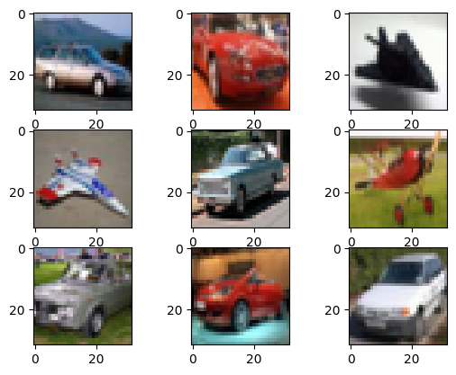

━━━━━━━━━━━━━━━━━━━━━━━━━━━━━━━━━━━━━━━ 365.7/365.7 kB 4.1 MB/s eta 0:00:00
━━━━━━━━━━━━━━━━━━━━━━━━━━━━━━━━━━━━━━ 224.5/224.5 kB 15.3 MB/s eta 0:00:00
━━━━━━━━━━━━━━━━━━━━━━━━━━━━━━━━━━━━━━━━ 78.7/78.7 kB 6.1 MB/s eta 0:00:00
━━━━━━━━━━━━━━━━━━━━━━━━━━━━━━━━━━━━━━ 176.1/176.1 kB 14.8 MB/s eta 0:00:00
━━━━━━━━━━━━━━━━━━━━━━━━━━━━━━━━━━━━━━━ 148.6/148.6 kB 9.3 MB/s eta 0:00:00
━━━━━━━━━━━━━━━━━━━━━━━━━━━━━━━━━━━━━━ 527.7/527.7 kB 32.3 MB/s eta 0:00:00
━━━━━━━━━━━━━━━━━━━━━━━━━━━━━━━━━━━━━━━━ 6.0/6.0 MB 39.4 MB/s eta 0:00:00
━━━━━━━━━━━━━━━━━━━━━━━━━━━━━━━━━━━━━━━━ 2.0/2.0 MB 26.0 MB/s eta 0:00:00
━━━━━━━━━━━━━━━━━━━━━━━━━━━━━━━━━━━━━━ 184.3/184.3 kB 22.0 MB/s eta 0:00:00
━━━━━━━━━━━━━━━━━━━━━━━━━━━━━━━━━━━━━━ 206.5/206.5 kB 22.8 MB/s eta 0:00:00
Preparing metadata (setup.py) ... done
━━━━━━━━━━━━━━━━━━━━━━━━━━━━━━━━━━━━━━━━ 62.7/62.7 kB 8.6 MB/s eta 0:00:00
Building wheel for pathtools (setup.py) ... done13 Hyperparameter Tuning
|
|

|
13.1 Setup
# Python ≥3.7 is recommended
import sys
assert sys.version_info >= (3, 7)
# Scikit-Learn ≥1.01 is recommended
from packaging import version
import sklearn
from sklearn import datasets
from sklearn.model_selection import train_test_split
from sklearn.model_selection import GridSearchCV
from sklearn.model_selection import RandomizedSearchCV
from sklearn.model_selection import cross_val_score
from sklearn.ensemble import RandomForestClassifier
from sklearn.metrics import precision_recall_curve, roc_curve
from sklearn.metrics import average_precision_score
from sklearn.preprocessing import label_binarize
assert version.parse(sklearn.__version__) >= version.parse("1.0.1")
# Tensorflow ≥2.8.0 is recommended
import tensorflow as tf
assert version.parse(tf.__version__) >= version.parse("2.8.0")
import tensorflow_datasets as tfds
from tensorflow.keras.preprocessing.image import ImageDataGenerator
import optuna
from optuna.samplers import GridSampler, RandomSampler, TPESampler
import keras_tuner as kt
import autokeras as ak
import wandb
from wandb.keras import WandbMetricsLogger, WandbModelCheckpoint, WandbEvalCallback, WandbCallback
# Common imports
import numpy as np
import pandas as pd
import os
from random import shuffle
import random
import time
import math
import pprint
# To plot pretty figures
import matplotlib.pyplot as plt
import matplotlib
import matplotlib as mpl
from mpl_toolkits.mplot3d import Axes3D
plt.rc('font', size=14)
plt.rc('axes', labelsize=14, titlesize=14)
plt.rc('legend', fontsize=14)
plt.rc('xtick', labelsize=10)
plt.rc('ytick', labelsize=10)
# to make this notebook's output stable across runs
np.random.seed(42)
tf.random.set_seed(42)if not tf.config.list_physical_devices('GPU'):
print("No GPU was detected. Neural nets can be very slow without a GPU.")
if "google.colab" in sys.modules:
print("Go to Runtime > Change runtime and select a GPU hardware "
"accelerator.")
if "kaggle_secrets" in sys.modules:
print("Go to Settings > Accelerator and select GPU.")13.2 Hyparameter tuning for sklearn
Hyper-parameters are parameters that are not directly learnt within estimators. In scikit-learn they are passed as arguments to the constructor of the estimator classes. Typical examples include C, kernel and gamma for Support Vector Classifier, alpha for Lasso, etc.
It is possible and recommended to search the hyper-parameter space for the best cross validation score. Any parameter provided when constructing an estimator may be optimized in this manner. Specifically, to find the names and current values for all parameters for a given estimator, we can use estimator.get_params().
A search consists of: - an estimator (regressor or classifier such as sklearn.svm.SVC()); - a parameter space; - a method for searching or sampling candidates; - a cross-validation scheme; and - a score function.
Note that it is common that a small subset of those parameters can have a large impact on the predictive or computation performance of the model while others can be left to their default values. It is recommended to read the docstring of the estimator class to get a finer understanding of their expected behavior.
Let us load the example dataset first:
13.2.1 Grid search
The grid search provided by GridSearchCV() exhaustively generates candidates from a grid of parameter values specified with the param_grid parameter. Here our estimator is RandomForestClassifier.
First, let’s obtain the optimal hyperparameters using the grid search method and time the process. This means that we will test all 108 hyperparameter sets and pick out the one that yields the best results.
Here, we will use Optuna instead:
def objective(trial):
"""return the f1-score"""
# search space
n_estimators = trial.suggest_int('n_estimators', low=100, high=200, step=50)
criterion = trial.suggest_categorical('criterion', ['gini', 'entropy'])
min_samples_split = trial.suggest_int('min_samples_split', low=2, high=4, step=1)
max_depth = trial.suggest_int('max_depth', low=5, high=7, step=1)
max_features = trial.suggest_categorical('max_features', ['sqrt','log2'])
# random forest classifier object
rfc = RandomForestClassifier(n_estimators=n_estimators,
criterion=criterion,
min_samples_split=min_samples_split,
max_depth=max_depth,
max_features=max_features,
random_state=42)
score = cross_val_score(estimator=rfc,
X=X_train,
y=y_train,
scoring='f1_micro',
cv=5).mean()
return score# create a study (aim to maximize score)
search_space = param_grid
study = optuna.create_study(sampler=GridSampler(param_grid), direction='maximize')
# perform hyperparamter tuning (while timing the process)
time_start = time.time()
study.optimize(objective, show_progress_bar=True, n_trials=108)
time_grid = time.time() - time_start
# store result in a data frame
columns = ['Number of iterations', 'Iteration Number of Optimal Hyperparamters', 'Score', 'Time Elapsed (s)']
values_grid = [108, study.best_trial.number, study.best_trial.value, time_grid]
results_grid = pd.DataFrame([values_grid], columns = columns)[I 2023-05-24 03:32:56,934] A new study created in memory with name: no-name-185675b5-a671-4372-8e9a-468be41c2e10
/usr/local/lib/python3.10/dist-packages/optuna/progress_bar.py:56: ExperimentalWarning: Progress bar is experimental (supported from v1.2.0). The interface can change in the future.
self._init_valid()[I 2023-05-24 03:32:59,443] Trial 0 finished with value: 0.912405342145119 and parameters: {'n_estimators': 200, 'criterion': 'gini', 'min_samples_split': 4, 'max_depth': 6, 'max_features': 'log2'}. Best is trial 0 with value: 0.912405342145119.
[I 2023-05-24 03:33:02,630] Trial 1 finished with value: 0.9250227178851714 and parameters: {'n_estimators': 200, 'criterion': 'gini', 'min_samples_split': 2, 'max_depth': 7, 'max_features': 'log2'}. Best is trial 1 with value: 0.9250227178851714.
[I 2023-05-24 03:33:05,533] Trial 2 finished with value: 0.9324631694891918 and parameters: {'n_estimators': 200, 'criterion': 'entropy', 'min_samples_split': 3, 'max_depth': 7, 'max_features': 'sqrt'}. Best is trial 2 with value: 0.9324631694891918.
[I 2023-05-24 03:33:06,777] Trial 3 finished with value: 0.9183367754371471 and parameters: {'n_estimators': 100, 'criterion': 'entropy', 'min_samples_split': 3, 'max_depth': 6, 'max_features': 'log2'}. Best is trial 2 with value: 0.9324631694891918.
[I 2023-05-24 03:33:08,470] Trial 4 finished with value: 0.9287512047363349 and parameters: {'n_estimators': 150, 'criterion': 'gini', 'min_samples_split': 4, 'max_depth': 7, 'max_features': 'log2'}. Best is trial 2 with value: 0.9324631694891918.
[I 2023-05-24 03:33:10,680] Trial 5 finished with value: 0.9235467437697921 and parameters: {'n_estimators': 150, 'criterion': 'entropy', 'min_samples_split': 2, 'max_depth': 6, 'max_features': 'sqrt'}. Best is trial 2 with value: 0.9324631694891918.
[I 2023-05-24 03:33:13,703] Trial 6 finished with value: 0.9064628941208868 and parameters: {'n_estimators': 200, 'criterion': 'entropy', 'min_samples_split': 2, 'max_depth': 5, 'max_features': 'log2'}. Best is trial 2 with value: 0.9324631694891918.
[I 2023-05-24 03:33:16,354] Trial 7 finished with value: 0.9005039239983479 and parameters: {'n_estimators': 200, 'criterion': 'gini', 'min_samples_split': 2, 'max_depth': 5, 'max_features': 'log2'}. Best is trial 2 with value: 0.9324631694891918.
[I 2023-05-24 03:33:19,684] Trial 8 finished with value: 0.9235439900867408 and parameters: {'n_estimators': 200, 'criterion': 'gini', 'min_samples_split': 3, 'max_depth': 7, 'max_features': 'log2'}. Best is trial 2 with value: 0.9324631694891918.
[I 2023-05-24 03:33:21,402] Trial 9 finished with value: 0.9257662123089634 and parameters: {'n_estimators': 150, 'criterion': 'gini', 'min_samples_split': 3, 'max_depth': 7, 'max_features': 'log2'}. Best is trial 2 with value: 0.9324631694891918.
[I 2023-05-24 03:33:24,212] Trial 10 finished with value: 0.9094203497177474 and parameters: {'n_estimators': 200, 'criterion': 'gini', 'min_samples_split': 4, 'max_depth': 5, 'max_features': 'sqrt'}. Best is trial 2 with value: 0.9324631694891918.
[I 2023-05-24 03:33:27,877] Trial 11 finished with value: 0.909436871816054 and parameters: {'n_estimators': 200, 'criterion': 'entropy', 'min_samples_split': 3, 'max_depth': 5, 'max_features': 'log2'}. Best is trial 2 with value: 0.9324631694891918.
[I 2023-05-24 03:33:29,396] Trial 12 finished with value: 0.9146413327825968 and parameters: {'n_estimators': 100, 'criterion': 'gini', 'min_samples_split': 4, 'max_depth': 6, 'max_features': 'sqrt'}. Best is trial 2 with value: 0.9324631694891918.
[I 2023-05-24 03:33:31,885] Trial 13 finished with value: 0.9094396254991051 and parameters: {'n_estimators': 200, 'criterion': 'entropy', 'min_samples_split': 3, 'max_depth': 5, 'max_features': 'sqrt'}. Best is trial 2 with value: 0.9324631694891918.
[I 2023-05-24 03:33:34,273] Trial 14 finished with value: 0.9220542475561062 and parameters: {'n_estimators': 150, 'criterion': 'gini', 'min_samples_split': 4, 'max_depth': 7, 'max_features': 'sqrt'}. Best is trial 2 with value: 0.9324631694891918.
[I 2023-05-24 03:33:35,409] Trial 15 finished with value: 0.9064601404378356 and parameters: {'n_estimators': 100, 'criterion': 'entropy', 'min_samples_split': 4, 'max_depth': 5, 'max_features': 'log2'}. Best is trial 2 with value: 0.9324631694891918.
[I 2023-05-24 03:33:36,590] Trial 16 finished with value: 0.9005259534627564 and parameters: {'n_estimators': 100, 'criterion': 'entropy', 'min_samples_split': 2, 'max_depth': 5, 'max_features': 'log2'}. Best is trial 2 with value: 0.9324631694891918.
[I 2023-05-24 03:33:38,963] Trial 17 finished with value: 0.9146358254164946 and parameters: {'n_estimators': 200, 'criterion': 'gini', 'min_samples_split': 3, 'max_depth': 6, 'max_features': 'sqrt'}. Best is trial 2 with value: 0.9324631694891918.
[I 2023-05-24 03:33:42,036] Trial 18 finished with value: 0.9027509293680298 and parameters: {'n_estimators': 100, 'criterion': 'entropy', 'min_samples_split': 4, 'max_depth': 5, 'max_features': 'sqrt'}. Best is trial 2 with value: 0.9324631694891918.
[I 2023-05-24 03:33:44,686] Trial 19 finished with value: 0.9294781770618201 and parameters: {'n_estimators': 200, 'criterion': 'gini', 'min_samples_split': 2, 'max_depth': 7, 'max_features': 'sqrt'}. Best is trial 2 with value: 0.9324631694891918.
[I 2023-05-24 03:33:46,076] Trial 20 finished with value: 0.9161145532149249 and parameters: {'n_estimators': 100, 'criterion': 'entropy', 'min_samples_split': 3, 'max_depth': 6, 'max_features': 'sqrt'}. Best is trial 2 with value: 0.9324631694891918.
[I 2023-05-24 03:33:48,029] Trial 21 finished with value: 0.9220597549222085 and parameters: {'n_estimators': 150, 'criterion': 'entropy', 'min_samples_split': 3, 'max_depth': 7, 'max_features': 'log2'}. Best is trial 2 with value: 0.9324631694891918.
[I 2023-05-24 03:33:50,518] Trial 22 finished with value: 0.9116590940382763 and parameters: {'n_estimators': 150, 'criterion': 'gini', 'min_samples_split': 2, 'max_depth': 5, 'max_features': 'sqrt'}. Best is trial 2 with value: 0.9324631694891918.
[I 2023-05-24 03:33:52,397] Trial 23 finished with value: 0.90868787002616 and parameters: {'n_estimators': 100, 'criterion': 'gini', 'min_samples_split': 2, 'max_depth': 5, 'max_features': 'sqrt'}. Best is trial 2 with value: 0.9324631694891918.
[I 2023-05-24 03:33:56,365] Trial 24 finished with value: 0.9124136031942722 and parameters: {'n_estimators': 150, 'criterion': 'gini', 'min_samples_split': 3, 'max_depth': 6, 'max_features': 'log2'}. Best is trial 2 with value: 0.9324631694891918.
[I 2023-05-24 03:33:58,279] Trial 25 finished with value: 0.9168552939556657 and parameters: {'n_estimators': 100, 'criterion': 'entropy', 'min_samples_split': 4, 'max_depth': 6, 'max_features': 'log2'}. Best is trial 2 with value: 0.9324631694891918.
[I 2023-05-24 03:34:01,031] Trial 26 finished with value: 0.9183477901693516 and parameters: {'n_estimators': 200, 'criterion': 'entropy', 'min_samples_split': 3, 'max_depth': 6, 'max_features': 'sqrt'}. Best is trial 2 with value: 0.9324631694891918.
[I 2023-05-24 03:34:02,537] Trial 27 finished with value: 0.9109211069805866 and parameters: {'n_estimators': 100, 'criterion': 'gini', 'min_samples_split': 4, 'max_depth': 6, 'max_features': 'log2'}. Best is trial 2 with value: 0.9324631694891918.
[I 2023-05-24 03:34:04,567] Trial 28 finished with value: 0.9131488365689109 and parameters: {'n_estimators': 150, 'criterion': 'entropy', 'min_samples_split': 4, 'max_depth': 6, 'max_features': 'log2'}. Best is trial 2 with value: 0.9324631694891918.
[I 2023-05-24 03:34:06,559] Trial 29 finished with value: 0.9146385790995456 and parameters: {'n_estimators': 150, 'criterion': 'gini', 'min_samples_split': 4, 'max_depth': 6, 'max_features': 'sqrt'}. Best is trial 2 with value: 0.9324631694891918.
[I 2023-05-24 03:34:08,323] Trial 30 finished with value: 0.9235467437697921 and parameters: {'n_estimators': 100, 'criterion': 'gini', 'min_samples_split': 3, 'max_depth': 7, 'max_features': 'log2'}. Best is trial 2 with value: 0.9324631694891918.
[I 2023-05-24 03:34:10,239] Trial 31 finished with value: 0.9027454220019276 and parameters: {'n_estimators': 100, 'criterion': 'entropy', 'min_samples_split': 3, 'max_depth': 5, 'max_features': 'log2'}. Best is trial 2 with value: 0.9324631694891918.
[I 2023-05-24 03:34:12,345] Trial 32 finished with value: 0.9153738124741843 and parameters: {'n_estimators': 150, 'criterion': 'entropy', 'min_samples_split': 3, 'max_depth': 6, 'max_features': 'log2'}. Best is trial 2 with value: 0.9324631694891918.
[I 2023-05-24 03:34:14,730] Trial 33 finished with value: 0.9198320253338842 and parameters: {'n_estimators': 150, 'criterion': 'gini', 'min_samples_split': 2, 'max_depth': 6, 'max_features': 'sqrt'}. Best is trial 2 with value: 0.9324631694891918.
[I 2023-05-24 03:34:17,433] Trial 34 finished with value: 0.9138758088943962 and parameters: {'n_estimators': 150, 'criterion': 'gini', 'min_samples_split': 3, 'max_depth': 5, 'max_features': 'sqrt'}. Best is trial 2 with value: 0.9324631694891918.
[I 2023-05-24 03:34:19,158] Trial 35 finished with value: 0.9309596585433016 and parameters: {'n_estimators': 100, 'criterion': 'entropy', 'min_samples_split': 2, 'max_depth': 7, 'max_features': 'log2'}. Best is trial 2 with value: 0.9324631694891918.
[I 2023-05-24 03:34:21,127] Trial 36 finished with value: 0.9213190141814678 and parameters: {'n_estimators': 100, 'criterion': 'entropy', 'min_samples_split': 3, 'max_depth': 7, 'max_features': 'log2'}. Best is trial 2 with value: 0.9324631694891918.
[I 2023-05-24 03:34:23,385] Trial 37 finished with value: 0.9034861627426685 and parameters: {'n_estimators': 150, 'criterion': 'entropy', 'min_samples_split': 2, 'max_depth': 5, 'max_features': 'log2'}. Best is trial 2 with value: 0.9324631694891918.
[I 2023-05-24 03:34:25,632] Trial 38 finished with value: 0.9317114140162467 and parameters: {'n_estimators': 150, 'criterion': 'entropy', 'min_samples_split': 2, 'max_depth': 7, 'max_features': 'sqrt'}. Best is trial 2 with value: 0.9324631694891918.
[I 2023-05-24 03:34:27,953] Trial 39 finished with value: 0.8990279498829684 and parameters: {'n_estimators': 200, 'criterion': 'gini', 'min_samples_split': 4, 'max_depth': 5, 'max_features': 'log2'}. Best is trial 2 with value: 0.9324631694891918.
[I 2023-05-24 03:34:29,098] Trial 40 finished with value: 0.8938372573316811 and parameters: {'n_estimators': 100, 'criterion': 'gini', 'min_samples_split': 3, 'max_depth': 5, 'max_features': 'log2'}. Best is trial 2 with value: 0.9324631694891918.
[I 2023-05-24 03:34:30,595] Trial 41 finished with value: 0.9109100922483823 and parameters: {'n_estimators': 100, 'criterion': 'gini', 'min_samples_split': 3, 'max_depth': 5, 'max_features': 'sqrt'}. Best is trial 2 with value: 0.9324631694891918.
[I 2023-05-24 03:34:31,638] Trial 42 finished with value: 0.8960677406030566 and parameters: {'n_estimators': 100, 'criterion': 'gini', 'min_samples_split': 2, 'max_depth': 5, 'max_features': 'log2'}. Best is trial 2 with value: 0.9324631694891918.
[I 2023-05-24 03:34:33,112] Trial 43 finished with value: 0.9057221533801461 and parameters: {'n_estimators': 100, 'criterion': 'entropy', 'min_samples_split': 3, 'max_depth': 5, 'max_features': 'sqrt'}. Best is trial 2 with value: 0.9324631694891918.
[I 2023-05-24 03:34:38,448] Trial 44 finished with value: 0.9294754233787691 and parameters: {'n_estimators': 200, 'criterion': 'entropy', 'min_samples_split': 2, 'max_depth': 7, 'max_features': 'log2'}. Best is trial 2 with value: 0.9324631694891918.
[I 2023-05-24 03:34:42,098] Trial 45 finished with value: 0.9086933773922621 and parameters: {'n_estimators': 150, 'criterion': 'entropy', 'min_samples_split': 2, 'max_depth': 5, 'max_features': 'sqrt'}. Best is trial 2 with value: 0.9324631694891918.
[I 2023-05-24 03:34:44,185] Trial 46 finished with value: 0.9146413327825966 and parameters: {'n_estimators': 150, 'criterion': 'gini', 'min_samples_split': 3, 'max_depth': 6, 'max_features': 'sqrt'}. Best is trial 2 with value: 0.9324631694891918.
[I 2023-05-24 03:34:45,545] Trial 47 finished with value: 0.9294919454770756 and parameters: {'n_estimators': 100, 'criterion': 'entropy', 'min_samples_split': 4, 'max_depth': 7, 'max_features': 'log2'}. Best is trial 2 with value: 0.9324631694891918.
[I 2023-05-24 03:34:49,061] Trial 48 finished with value: 0.9176042957455597 and parameters: {'n_estimators': 200, 'criterion': 'entropy', 'min_samples_split': 2, 'max_depth': 6, 'max_features': 'log2'}. Best is trial 2 with value: 0.9324631694891918.
[I 2023-05-24 03:34:51,829] Trial 49 finished with value: 0.9235384827206389 and parameters: {'n_estimators': 200, 'criterion': 'entropy', 'min_samples_split': 3, 'max_depth': 7, 'max_features': 'log2'}. Best is trial 2 with value: 0.9324631694891918.
[I 2023-05-24 03:34:53,027] Trial 50 finished with value: 0.9242764697783284 and parameters: {'n_estimators': 100, 'criterion': 'gini', 'min_samples_split': 2, 'max_depth': 7, 'max_features': 'log2'}. Best is trial 2 with value: 0.9324631694891918.
[I 2023-05-24 03:34:56,547] Trial 51 finished with value: 0.9235467437697921 and parameters: {'n_estimators': 200, 'criterion': 'entropy', 'min_samples_split': 4, 'max_depth': 6, 'max_features': 'sqrt'}. Best is trial 2 with value: 0.9324631694891918.
[I 2023-05-24 03:34:58,264] Trial 52 finished with value: 0.9205782734407271 and parameters: {'n_estimators': 100, 'criterion': 'gini', 'min_samples_split': 2, 'max_depth': 6, 'max_features': 'sqrt'}. Best is trial 2 with value: 0.9324631694891918.
[I 2023-05-24 03:34:59,834] Trial 53 finished with value: 0.922048740190004 and parameters: {'n_estimators': 100, 'criterion': 'entropy', 'min_samples_split': 2, 'max_depth': 6, 'max_features': 'sqrt'}. Best is trial 2 with value: 0.9324631694891918.
[I 2023-05-24 03:35:03,354] Trial 54 finished with value: 0.9287346826380283 and parameters: {'n_estimators': 200, 'criterion': 'gini', 'min_samples_split': 4, 'max_depth': 7, 'max_features': 'sqrt'}. Best is trial 2 with value: 0.9324631694891918.
[I 2023-05-24 03:35:04,961] Trial 55 finished with value: 0.9124136031942722 and parameters: {'n_estimators': 150, 'criterion': 'gini', 'min_samples_split': 4, 'max_depth': 6, 'max_features': 'log2'}. Best is trial 2 with value: 0.9324631694891918.
[I 2023-05-24 03:35:07,470] Trial 56 finished with value: 0.9302326862178163 and parameters: {'n_estimators': 200, 'criterion': 'gini', 'min_samples_split': 3, 'max_depth': 7, 'max_features': 'sqrt'}. Best is trial 2 with value: 0.9324631694891918.
[I 2023-05-24 03:35:08,708] Trial 57 finished with value: 0.9287401900041307 and parameters: {'n_estimators': 100, 'criterion': 'gini', 'min_samples_split': 4, 'max_depth': 7, 'max_features': 'sqrt'}. Best is trial 2 with value: 0.9324631694891918.
[I 2023-05-24 03:35:11,191] Trial 58 finished with value: 0.9116618477213272 and parameters: {'n_estimators': 200, 'criterion': 'entropy', 'min_samples_split': 2, 'max_depth': 5, 'max_features': 'sqrt'}. Best is trial 2 with value: 0.9324631694891918.
[I 2023-05-24 03:35:12,661] Trial 59 finished with value: 0.9331956491807792 and parameters: {'n_estimators': 100, 'criterion': 'entropy', 'min_samples_split': 3, 'max_depth': 7, 'max_features': 'sqrt'}. Best is trial 59 with value: 0.9331956491807792.
[I 2023-05-24 03:35:15,838] Trial 60 finished with value: 0.9175987883794576 and parameters: {'n_estimators': 200, 'criterion': 'gini', 'min_samples_split': 2, 'max_depth': 6, 'max_features': 'log2'}. Best is trial 59 with value: 0.9331956491807792.
[I 2023-05-24 03:35:16,986] Trial 61 finished with value: 0.8916040203772544 and parameters: {'n_estimators': 100, 'criterion': 'gini', 'min_samples_split': 4, 'max_depth': 5, 'max_features': 'log2'}. Best is trial 59 with value: 0.9331956491807792.
[I 2023-05-24 03:35:18,563] Trial 62 finished with value: 0.8967947129285418 and parameters: {'n_estimators': 150, 'criterion': 'gini', 'min_samples_split': 3, 'max_depth': 5, 'max_features': 'log2'}. Best is trial 59 with value: 0.9331956491807792.
[I 2023-05-24 03:35:21,396] Trial 63 finished with value: 0.9250227178851714 and parameters: {'n_estimators': 150, 'criterion': 'entropy', 'min_samples_split': 2, 'max_depth': 7, 'max_features': 'log2'}. Best is trial 59 with value: 0.9331956491807792.
[I 2023-05-24 03:35:24,192] Trial 64 finished with value: 0.916869062370921 and parameters: {'n_estimators': 200, 'criterion': 'entropy', 'min_samples_split': 3, 'max_depth': 6, 'max_features': 'log2'}. Best is trial 59 with value: 0.9331956491807792.
[I 2023-05-24 03:35:26,956] Trial 65 finished with value: 0.9183395291201982 and parameters: {'n_estimators': 200, 'criterion': 'entropy', 'min_samples_split': 4, 'max_depth': 6, 'max_features': 'log2'}. Best is trial 59 with value: 0.9331956491807792.
[I 2023-05-24 03:35:29,498] Trial 66 finished with value: 0.9034944237918217 and parameters: {'n_estimators': 150, 'criterion': 'entropy', 'min_samples_split': 4, 'max_depth': 5, 'max_features': 'log2'}. Best is trial 59 with value: 0.9331956491807792.
[I 2023-05-24 03:35:30,592] Trial 67 finished with value: 0.9131433292028088 and parameters: {'n_estimators': 100, 'criterion': 'gini', 'min_samples_split': 2, 'max_depth': 6, 'max_features': 'log2'}. Best is trial 59 with value: 0.9331956491807792.
[I 2023-05-24 03:35:32,428] Trial 68 finished with value: 0.9294864381109734 and parameters: {'n_estimators': 150, 'criterion': 'gini', 'min_samples_split': 3, 'max_depth': 7, 'max_features': 'sqrt'}. Best is trial 59 with value: 0.9331956491807792.
[I 2023-05-24 03:35:33,919] Trial 69 finished with value: 0.89605121850475 and parameters: {'n_estimators': 150, 'criterion': 'gini', 'min_samples_split': 2, 'max_depth': 5, 'max_features': 'log2'}. Best is trial 59 with value: 0.9331956491807792.
[I 2023-05-24 03:35:35,847] Trial 70 finished with value: 0.928007710312543 and parameters: {'n_estimators': 150, 'criterion': 'entropy', 'min_samples_split': 4, 'max_depth': 7, 'max_features': 'log2'}. Best is trial 59 with value: 0.9331956491807792.
[I 2023-05-24 03:35:38,759] Trial 71 finished with value: 0.9324576621230897 and parameters: {'n_estimators': 200, 'criterion': 'entropy', 'min_samples_split': 2, 'max_depth': 7, 'max_features': 'sqrt'}. Best is trial 59 with value: 0.9331956491807792.
[I 2023-05-24 03:35:40,130] Trial 72 finished with value: 0.9124053421451193 and parameters: {'n_estimators': 100, 'criterion': 'gini', 'min_samples_split': 4, 'max_depth': 5, 'max_features': 'sqrt'}. Best is trial 59 with value: 0.9331956491807792.
[I 2023-05-24 03:35:42,819] Trial 73 finished with value: 0.9086933773922622 and parameters: {'n_estimators': 150, 'criterion': 'entropy', 'min_samples_split': 4, 'max_depth': 5, 'max_features': 'sqrt'}. Best is trial 59 with value: 0.9331956491807792.
[I 2023-05-24 03:35:44,966] Trial 74 finished with value: 0.9153738124741843 and parameters: {'n_estimators': 200, 'criterion': 'gini', 'min_samples_split': 3, 'max_depth': 6, 'max_features': 'log2'}. Best is trial 59 with value: 0.9331956491807792.
[I 2023-05-24 03:35:46,137] Trial 75 finished with value: 0.924292991876635 and parameters: {'n_estimators': 100, 'criterion': 'gini', 'min_samples_split': 4, 'max_depth': 7, 'max_features': 'log2'}. Best is trial 59 with value: 0.9331956491807792.
[I 2023-05-24 03:35:47,752] Trial 76 finished with value: 0.915371058791133 and parameters: {'n_estimators': 150, 'criterion': 'gini', 'min_samples_split': 4, 'max_depth': 5, 'max_features': 'sqrt'}. Best is trial 59 with value: 0.9331956491807792.
[I 2023-05-24 03:35:49,775] Trial 77 finished with value: 0.9257827344072698 and parameters: {'n_estimators': 150, 'criterion': 'entropy', 'min_samples_split': 4, 'max_depth': 6, 'max_features': 'sqrt'}. Best is trial 59 with value: 0.9331956491807792.
[I 2023-05-24 03:35:51,653] Trial 78 finished with value: 0.9153765661572354 and parameters: {'n_estimators': 150, 'criterion': 'entropy', 'min_samples_split': 2, 'max_depth': 6, 'max_features': 'log2'}. Best is trial 59 with value: 0.9331956491807792.
[I 2023-05-24 03:35:54,414] Trial 79 finished with value: 0.9317114140162467 and parameters: {'n_estimators': 150, 'criterion': 'entropy', 'min_samples_split': 4, 'max_depth': 7, 'max_features': 'sqrt'}. Best is trial 59 with value: 0.9331956491807792.
[I 2023-05-24 03:35:57,526] Trial 80 finished with value: 0.9287512047363349 and parameters: {'n_estimators': 200, 'criterion': 'entropy', 'min_samples_split': 4, 'max_depth': 7, 'max_features': 'log2'}. Best is trial 59 with value: 0.9331956491807792.
[I 2023-05-24 03:35:59,378] Trial 81 finished with value: 0.9294891917940244 and parameters: {'n_estimators': 150, 'criterion': 'gini', 'min_samples_split': 2, 'max_depth': 7, 'max_features': 'sqrt'}. Best is trial 59 with value: 0.9331956491807792.
[I 2023-05-24 03:36:00,680] Trial 82 finished with value: 0.9064601404378356 and parameters: {'n_estimators': 100, 'criterion': 'entropy', 'min_samples_split': 2, 'max_depth': 5, 'max_features': 'sqrt'}. Best is trial 59 with value: 0.9331956491807792.
[I 2023-05-24 03:36:03,287] Trial 83 finished with value: 0.9116480793060718 and parameters: {'n_estimators': 200, 'criterion': 'gini', 'min_samples_split': 3, 'max_depth': 5, 'max_features': 'sqrt'}. Best is trial 59 with value: 0.9331956491807792.
[I 2023-05-24 03:36:05,805] Trial 84 finished with value: 0.9072174032768829 and parameters: {'n_estimators': 200, 'criterion': 'entropy', 'min_samples_split': 4, 'max_depth': 5, 'max_features': 'sqrt'}. Best is trial 59 with value: 0.9331956491807792.
[I 2023-05-24 03:36:07,974] Trial 85 finished with value: 0.9346853917114141 and parameters: {'n_estimators': 100, 'criterion': 'entropy', 'min_samples_split': 2, 'max_depth': 7, 'max_features': 'sqrt'}. Best is trial 85 with value: 0.9346853917114141.
[I 2023-05-24 03:36:10,077] Trial 86 finished with value: 0.9220570012391572 and parameters: {'n_estimators': 150, 'criterion': 'gini', 'min_samples_split': 2, 'max_depth': 7, 'max_features': 'log2'}. Best is trial 85 with value: 0.9346853917114141.
[I 2023-05-24 03:36:11,690] Trial 87 finished with value: 0.9168580476387168 and parameters: {'n_estimators': 150, 'criterion': 'gini', 'min_samples_split': 2, 'max_depth': 6, 'max_features': 'log2'}. Best is trial 85 with value: 0.9346853917114141.
[I 2023-05-24 03:36:12,870] Trial 88 finished with value: 0.9131626049841663 and parameters: {'n_estimators': 100, 'criterion': 'gini', 'min_samples_split': 3, 'max_depth': 6, 'max_features': 'sqrt'}. Best is trial 85 with value: 0.9346853917114141.
[I 2023-05-24 03:36:15,187] Trial 89 finished with value: 0.913148836568911 and parameters: {'n_estimators': 200, 'criterion': 'gini', 'min_samples_split': 4, 'max_depth': 6, 'max_features': 'sqrt'}. Best is trial 85 with value: 0.9346853917114141.
[I 2023-05-24 03:36:17,057] Trial 90 finished with value: 0.9079498829684702 and parameters: {'n_estimators': 150, 'criterion': 'entropy', 'min_samples_split': 3, 'max_depth': 5, 'max_features': 'sqrt'}. Best is trial 85 with value: 0.9346853917114141.
[I 2023-05-24 03:36:19,437] Trial 91 finished with value: 0.9228032493460002 and parameters: {'n_estimators': 200, 'criterion': 'gini', 'min_samples_split': 2, 'max_depth': 6, 'max_features': 'sqrt'}. Best is trial 85 with value: 0.9346853917114141.
[I 2023-05-24 03:36:22,674] Trial 92 finished with value: 0.9101831199228968 and parameters: {'n_estimators': 200, 'criterion': 'entropy', 'min_samples_split': 4, 'max_depth': 5, 'max_features': 'log2'}. Best is trial 85 with value: 0.9346853917114141.
[I 2023-05-24 03:36:24,856] Trial 93 finished with value: 0.9220652622883106 and parameters: {'n_estimators': 100, 'criterion': 'entropy', 'min_samples_split': 4, 'max_depth': 6, 'max_features': 'sqrt'}. Best is trial 85 with value: 0.9346853917114141.
[I 2023-05-24 03:36:26,105] Trial 94 finished with value: 0.9309651659094038 and parameters: {'n_estimators': 100, 'criterion': 'gini', 'min_samples_split': 3, 'max_depth': 7, 'max_features': 'sqrt'}. Best is trial 85 with value: 0.9346853917114141.
[I 2023-05-24 03:36:28,253] Trial 95 finished with value: 0.9072063885446784 and parameters: {'n_estimators': 200, 'criterion': 'gini', 'min_samples_split': 2, 'max_depth': 5, 'max_features': 'sqrt'}. Best is trial 85 with value: 0.9346853917114141.
[I 2023-05-24 03:36:29,936] Trial 96 finished with value: 0.9072036348616275 and parameters: {'n_estimators': 150, 'criterion': 'entropy', 'min_samples_split': 3, 'max_depth': 5, 'max_features': 'log2'}. Best is trial 85 with value: 0.9346853917114141.
[I 2023-05-24 03:36:32,011] Trial 97 finished with value: 0.8982789480930744 and parameters: {'n_estimators': 200, 'criterion': 'gini', 'min_samples_split': 3, 'max_depth': 5, 'max_features': 'log2'}. Best is trial 85 with value: 0.9346853917114141.
[I 2023-05-24 03:36:34,132] Trial 98 finished with value: 0.8975437147184359 and parameters: {'n_estimators': 150, 'criterion': 'gini', 'min_samples_split': 4, 'max_depth': 5, 'max_features': 'log2'}. Best is trial 85 with value: 0.9346853917114141.
[I 2023-05-24 03:36:36,927] Trial 99 finished with value: 0.928007710312543 and parameters: {'n_estimators': 200, 'criterion': 'gini', 'min_samples_split': 4, 'max_depth': 7, 'max_features': 'log2'}. Best is trial 85 with value: 0.9346853917114141.
[I 2023-05-24 03:36:38,974] Trial 100 finished with value: 0.9176042957455598 and parameters: {'n_estimators': 150, 'criterion': 'entropy', 'min_samples_split': 3, 'max_depth': 6, 'max_features': 'sqrt'}. Best is trial 85 with value: 0.9346853917114141.
[I 2023-05-24 03:36:40,226] Trial 101 finished with value: 0.9153765661572353 and parameters: {'n_estimators': 100, 'criterion': 'entropy', 'min_samples_split': 2, 'max_depth': 6, 'max_features': 'log2'}. Best is trial 85 with value: 0.9346853917114141.
[I 2023-05-24 03:36:42,948] Trial 102 finished with value: 0.9190885309100922 and parameters: {'n_estimators': 200, 'criterion': 'entropy', 'min_samples_split': 2, 'max_depth': 6, 'max_features': 'sqrt'}. Best is trial 85 with value: 0.9346853917114141.
[I 2023-05-24 03:36:44,413] Trial 103 finished with value: 0.9294836844279224 and parameters: {'n_estimators': 100, 'criterion': 'entropy', 'min_samples_split': 4, 'max_depth': 7, 'max_features': 'sqrt'}. Best is trial 85 with value: 0.9346853917114141.
[I 2023-05-24 03:36:45,530] Trial 104 finished with value: 0.9057276607462482 and parameters: {'n_estimators': 100, 'criterion': 'gini', 'min_samples_split': 3, 'max_depth': 6, 'max_features': 'log2'}. Best is trial 85 with value: 0.9346853917114141.
[I 2023-05-24 03:36:49,537] Trial 105 finished with value: 0.9294891917940244 and parameters: {'n_estimators': 200, 'criterion': 'entropy', 'min_samples_split': 4, 'max_depth': 7, 'max_features': 'sqrt'}. Best is trial 85 with value: 0.9346853917114141.
[I 2023-05-24 03:36:51,709] Trial 106 finished with value: 0.9354261324521549 and parameters: {'n_estimators': 150, 'criterion': 'entropy', 'min_samples_split': 3, 'max_depth': 7, 'max_features': 'sqrt'}. Best is trial 106 with value: 0.9354261324521549.
[I 2023-05-24 03:36:53,457] Trial 107 finished with value: 0.9279966955803387 and parameters: {'n_estimators': 100, 'criterion': 'gini', 'min_samples_split': 2, 'max_depth': 7, 'max_features': 'sqrt'}. Best is trial 106 with value: 0.9354261324521549.13.2.2 Random Search
While using a grid of parameter settings is currently the most widely used method for parameter optimization, other search methods have more favorable properties. RandomizedSearchCV implements a randomized search over parameters, where each setting is sampled from a distribution over possible parameter values. This has two main benefits over an exhaustive search:
- A budget can be chosen independent of the number of parameters and possible values.
- Adding parameters that do not influence the performance does not decrease efficiency.
Specifying how parameters should be sampled is done using a dictionary, very similar to specifying parameters for GridSearchCV. Additionally, a computation budget, being the number of sampled candidates or sampling iterations, is specified using the n_iter parameter. For each parameter, either a distribution over possible values or a list of discrete choices (which will be sampled uniformly) can be specified.
Here, we will use Optuna instead:
# create a study (aim to maximize score)
study = optuna.create_study(sampler=RandomSampler(), direction='maximize')
# perform hyperparamter tuning (while timing the process)
time_start = time.time()
study.optimize(objective, show_progress_bar=True, n_trials=50)
time_random = time.time() - time_start
# store result in a data frame
columns = ['Number of iterations', 'Iteration Number of Optimal Hyperparamters', 'Score', 'Time Elapsed (s)']
values_random = [50, study.best_trial.number, study.best_trial.value, time_random]
results_random = pd.DataFrame([values_random], columns = columns)[I 2023-05-24 03:36:53,501] A new study created in memory with name: no-name-6b952135-06c4-4c62-bfe4-10f435063be0
/usr/local/lib/python3.10/dist-packages/optuna/progress_bar.py:56: ExperimentalWarning: Progress bar is experimental (supported from v1.2.0). The interface can change in the future.
self._init_valid()[I 2023-05-24 03:36:56,505] Trial 0 finished with value: 0.9116618477213272 and parameters: {'n_estimators': 200, 'criterion': 'entropy', 'min_samples_split': 2, 'max_depth': 5, 'max_features': 'sqrt'}. Best is trial 0 with value: 0.9116618477213272.
[I 2023-05-24 03:36:58,816] Trial 1 finished with value: 0.9064628941208868 and parameters: {'n_estimators': 200, 'criterion': 'entropy', 'min_samples_split': 2, 'max_depth': 5, 'max_features': 'log2'}. Best is trial 0 with value: 0.9116618477213272.
[I 2023-05-24 03:37:00,477] Trial 2 finished with value: 0.9146413327825968 and parameters: {'n_estimators': 100, 'criterion': 'gini', 'min_samples_split': 4, 'max_depth': 6, 'max_features': 'sqrt'}. Best is trial 2 with value: 0.9146413327825968.
[I 2023-05-24 03:37:02,120] Trial 3 finished with value: 0.8938372573316811 and parameters: {'n_estimators': 100, 'criterion': 'gini', 'min_samples_split': 3, 'max_depth': 5, 'max_features': 'log2'}. Best is trial 2 with value: 0.9146413327825968.
[I 2023-05-24 03:37:03,514] Trial 4 finished with value: 0.9294919454770756 and parameters: {'n_estimators': 100, 'criterion': 'entropy', 'min_samples_split': 4, 'max_depth': 7, 'max_features': 'log2'}. Best is trial 4 with value: 0.9294919454770756.
[I 2023-05-24 03:37:06,530] Trial 5 finished with value: 0.9094203497177474 and parameters: {'n_estimators': 200, 'criterion': 'gini', 'min_samples_split': 4, 'max_depth': 5, 'max_features': 'sqrt'}. Best is trial 4 with value: 0.9294919454770756.
[I 2023-05-24 03:37:09,683] Trial 6 finished with value: 0.9146358254164946 and parameters: {'n_estimators': 200, 'criterion': 'gini', 'min_samples_split': 3, 'max_depth': 6, 'max_features': 'sqrt'}. Best is trial 4 with value: 0.9294919454770756.
[I 2023-05-24 03:37:12,148] Trial 7 finished with value: 0.9176042957455597 and parameters: {'n_estimators': 200, 'criterion': 'entropy', 'min_samples_split': 2, 'max_depth': 6, 'max_features': 'log2'}. Best is trial 4 with value: 0.9294919454770756.
[I 2023-05-24 03:37:13,912] Trial 8 finished with value: 0.9287401900041307 and parameters: {'n_estimators': 100, 'criterion': 'gini', 'min_samples_split': 4, 'max_depth': 7, 'max_features': 'sqrt'}. Best is trial 4 with value: 0.9294919454770756.
[I 2023-05-24 03:37:16,052] Trial 9 finished with value: 0.8967947129285418 and parameters: {'n_estimators': 150, 'criterion': 'gini', 'min_samples_split': 3, 'max_depth': 5, 'max_features': 'log2'}. Best is trial 4 with value: 0.9294919454770756.
[I 2023-05-24 03:37:18,753] Trial 10 finished with value: 0.9190885309100922 and parameters: {'n_estimators': 200, 'criterion': 'entropy', 'min_samples_split': 2, 'max_depth': 6, 'max_features': 'sqrt'}. Best is trial 4 with value: 0.9294919454770756.
[I 2023-05-24 03:37:19,989] Trial 11 finished with value: 0.9287401900041307 and parameters: {'n_estimators': 100, 'criterion': 'gini', 'min_samples_split': 4, 'max_depth': 7, 'max_features': 'sqrt'}. Best is trial 4 with value: 0.9294919454770756.
[I 2023-05-24 03:37:21,311] Trial 12 finished with value: 0.9309596585433016 and parameters: {'n_estimators': 100, 'criterion': 'entropy', 'min_samples_split': 2, 'max_depth': 7, 'max_features': 'log2'}. Best is trial 12 with value: 0.9309596585433016.
[I 2023-05-24 03:37:22,570] Trial 13 finished with value: 0.9287401900041307 and parameters: {'n_estimators': 100, 'criterion': 'gini', 'min_samples_split': 4, 'max_depth': 7, 'max_features': 'sqrt'}. Best is trial 12 with value: 0.9309596585433016.
[I 2023-05-24 03:37:24,167] Trial 14 finished with value: 0.9168580476387168 and parameters: {'n_estimators': 150, 'criterion': 'gini', 'min_samples_split': 2, 'max_depth': 6, 'max_features': 'log2'}. Best is trial 12 with value: 0.9309596585433016.
[I 2023-05-24 03:37:25,251] Trial 15 finished with value: 0.9057276607462482 and parameters: {'n_estimators': 100, 'criterion': 'gini', 'min_samples_split': 3, 'max_depth': 6, 'max_features': 'log2'}. Best is trial 12 with value: 0.9309596585433016.
[I 2023-05-24 03:37:26,730] Trial 16 finished with value: 0.9109100922483823 and parameters: {'n_estimators': 100, 'criterion': 'gini', 'min_samples_split': 3, 'max_depth': 5, 'max_features': 'sqrt'}. Best is trial 12 with value: 0.9309596585433016.
[I 2023-05-24 03:37:29,249] Trial 17 finished with value: 0.9086933773922622 and parameters: {'n_estimators': 150, 'criterion': 'entropy', 'min_samples_split': 4, 'max_depth': 5, 'max_features': 'sqrt'}. Best is trial 12 with value: 0.9309596585433016.
[I 2023-05-24 03:37:31,401] Trial 18 finished with value: 0.9153738124741843 and parameters: {'n_estimators': 200, 'criterion': 'gini', 'min_samples_split': 3, 'max_depth': 6, 'max_features': 'log2'}. Best is trial 12 with value: 0.9309596585433016.
[I 2023-05-24 03:37:32,559] Trial 19 finished with value: 0.9064601404378356 and parameters: {'n_estimators': 100, 'criterion': 'entropy', 'min_samples_split': 4, 'max_depth': 5, 'max_features': 'log2'}. Best is trial 12 with value: 0.9309596585433016.
[I 2023-05-24 03:37:34,848] Trial 20 finished with value: 0.913148836568911 and parameters: {'n_estimators': 200, 'criterion': 'gini', 'min_samples_split': 4, 'max_depth': 6, 'max_features': 'sqrt'}. Best is trial 12 with value: 0.9309596585433016.
[I 2023-05-24 03:37:36,454] Trial 21 finished with value: 0.915371058791133 and parameters: {'n_estimators': 150, 'criterion': 'gini', 'min_samples_split': 4, 'max_depth': 5, 'max_features': 'sqrt'}. Best is trial 12 with value: 0.9309596585433016.
[I 2023-05-24 03:37:38,933] Trial 22 finished with value: 0.9183395291201982 and parameters: {'n_estimators': 200, 'criterion': 'entropy', 'min_samples_split': 4, 'max_depth': 6, 'max_features': 'log2'}. Best is trial 12 with value: 0.9309596585433016.
[I 2023-05-24 03:37:41,200] Trial 23 finished with value: 0.8967947129285418 and parameters: {'n_estimators': 150, 'criterion': 'gini', 'min_samples_split': 3, 'max_depth': 5, 'max_features': 'log2'}. Best is trial 12 with value: 0.9309596585433016.
[I 2023-05-24 03:37:42,603] Trial 24 finished with value: 0.9109211069805866 and parameters: {'n_estimators': 100, 'criterion': 'gini', 'min_samples_split': 4, 'max_depth': 6, 'max_features': 'log2'}. Best is trial 12 with value: 0.9309596585433016.
[I 2023-05-24 03:37:44,407] Trial 25 finished with value: 0.9294864381109734 and parameters: {'n_estimators': 150, 'criterion': 'gini', 'min_samples_split': 3, 'max_depth': 7, 'max_features': 'sqrt'}. Best is trial 12 with value: 0.9309596585433016.
[I 2023-05-24 03:37:46,818] Trial 26 finished with value: 0.9072174032768829 and parameters: {'n_estimators': 200, 'criterion': 'entropy', 'min_samples_split': 4, 'max_depth': 5, 'max_features': 'sqrt'}. Best is trial 12 with value: 0.9309596585433016.
[I 2023-05-24 03:37:48,624] Trial 27 finished with value: 0.9168580476387168 and parameters: {'n_estimators': 150, 'criterion': 'gini', 'min_samples_split': 2, 'max_depth': 6, 'max_features': 'log2'}. Best is trial 12 with value: 0.9309596585433016.
[I 2023-05-24 03:37:51,256] Trial 28 finished with value: 0.9294754233787691 and parameters: {'n_estimators': 200, 'criterion': 'entropy', 'min_samples_split': 2, 'max_depth': 7, 'max_features': 'log2'}. Best is trial 12 with value: 0.9309596585433016.
[I 2023-05-24 03:37:52,510] Trial 29 finished with value: 0.924292991876635 and parameters: {'n_estimators': 100, 'criterion': 'gini', 'min_samples_split': 4, 'max_depth': 7, 'max_features': 'log2'}. Best is trial 12 with value: 0.9309596585433016.
[I 2023-05-24 03:37:54,237] Trial 30 finished with value: 0.9131626049841663 and parameters: {'n_estimators': 100, 'criterion': 'gini', 'min_samples_split': 3, 'max_depth': 6, 'max_features': 'sqrt'}. Best is trial 12 with value: 0.9309596585433016.
[I 2023-05-24 03:37:56,439] Trial 31 finished with value: 0.9079498829684702 and parameters: {'n_estimators': 150, 'criterion': 'entropy', 'min_samples_split': 3, 'max_depth': 5, 'max_features': 'sqrt'}. Best is trial 12 with value: 0.9309596585433016.
[I 2023-05-24 03:37:58,165] Trial 32 finished with value: 0.9220570012391572 and parameters: {'n_estimators': 150, 'criterion': 'gini', 'min_samples_split': 2, 'max_depth': 7, 'max_features': 'log2'}. Best is trial 12 with value: 0.9309596585433016.
[I 2023-05-24 03:37:59,389] Trial 33 finished with value: 0.9027509293680298 and parameters: {'n_estimators': 100, 'criterion': 'entropy', 'min_samples_split': 4, 'max_depth': 5, 'max_features': 'sqrt'}. Best is trial 12 with value: 0.9309596585433016.
[I 2023-05-24 03:38:00,889] Trial 34 finished with value: 0.89605121850475 and parameters: {'n_estimators': 150, 'criterion': 'gini', 'min_samples_split': 2, 'max_depth': 5, 'max_features': 'log2'}. Best is trial 12 with value: 0.9309596585433016.
[I 2023-05-24 03:38:02,171] Trial 35 finished with value: 0.9168552939556657 and parameters: {'n_estimators': 100, 'criterion': 'entropy', 'min_samples_split': 4, 'max_depth': 6, 'max_features': 'log2'}. Best is trial 12 with value: 0.9309596585433016.
[I 2023-05-24 03:38:04,603] Trial 36 finished with value: 0.9072174032768829 and parameters: {'n_estimators': 200, 'criterion': 'entropy', 'min_samples_split': 4, 'max_depth': 5, 'max_features': 'sqrt'}. Best is trial 12 with value: 0.9309596585433016.
[I 2023-05-24 03:38:07,636] Trial 37 finished with value: 0.9250227178851714 and parameters: {'n_estimators': 200, 'criterion': 'gini', 'min_samples_split': 2, 'max_depth': 7, 'max_features': 'log2'}. Best is trial 12 with value: 0.9309596585433016.
[I 2023-05-24 03:38:10,114] Trial 38 finished with value: 0.9072063885446784 and parameters: {'n_estimators': 200, 'criterion': 'gini', 'min_samples_split': 2, 'max_depth': 5, 'max_features': 'sqrt'}. Best is trial 12 with value: 0.9309596585433016.
[I 2023-05-24 03:38:11,235] Trial 39 finished with value: 0.9235467437697921 and parameters: {'n_estimators': 100, 'criterion': 'gini', 'min_samples_split': 3, 'max_depth': 7, 'max_features': 'log2'}. Best is trial 12 with value: 0.9309596585433016.
[I 2023-05-24 03:38:13,222] Trial 40 finished with value: 0.9250227178851714 and parameters: {'n_estimators': 150, 'criterion': 'entropy', 'min_samples_split': 2, 'max_depth': 7, 'max_features': 'log2'}. Best is trial 12 with value: 0.9309596585433016.
[I 2023-05-24 03:38:14,296] Trial 41 finished with value: 0.9057276607462482 and parameters: {'n_estimators': 100, 'criterion': 'gini', 'min_samples_split': 3, 'max_depth': 6, 'max_features': 'log2'}. Best is trial 12 with value: 0.9309596585433016.
[I 2023-05-24 03:38:17,222] Trial 42 finished with value: 0.9294891917940244 and parameters: {'n_estimators': 200, 'criterion': 'entropy', 'min_samples_split': 4, 'max_depth': 7, 'max_features': 'sqrt'}. Best is trial 12 with value: 0.9309596585433016.
[I 2023-05-24 03:38:18,473] Trial 43 finished with value: 0.9027509293680298 and parameters: {'n_estimators': 100, 'criterion': 'entropy', 'min_samples_split': 4, 'max_depth': 5, 'max_features': 'sqrt'}. Best is trial 12 with value: 0.9309596585433016.
[I 2023-05-24 03:38:20,391] Trial 44 finished with value: 0.9309596585433016 and parameters: {'n_estimators': 100, 'criterion': 'entropy', 'min_samples_split': 2, 'max_depth': 7, 'max_features': 'log2'}. Best is trial 12 with value: 0.9309596585433016.
[I 2023-05-24 03:38:22,972] Trial 45 finished with value: 0.9176042957455598 and parameters: {'n_estimators': 150, 'criterion': 'entropy', 'min_samples_split': 3, 'max_depth': 6, 'max_features': 'sqrt'}. Best is trial 12 with value: 0.9309596585433016.
[I 2023-05-24 03:38:25,420] Trial 46 finished with value: 0.9072174032768829 and parameters: {'n_estimators': 200, 'criterion': 'entropy', 'min_samples_split': 4, 'max_depth': 5, 'max_features': 'sqrt'}. Best is trial 12 with value: 0.9309596585433016.
[I 2023-05-24 03:38:27,583] Trial 47 finished with value: 0.9094203497177474 and parameters: {'n_estimators': 200, 'criterion': 'gini', 'min_samples_split': 4, 'max_depth': 5, 'max_features': 'sqrt'}. Best is trial 12 with value: 0.9309596585433016.
[I 2023-05-24 03:38:30,060] Trial 48 finished with value: 0.9116618477213272 and parameters: {'n_estimators': 200, 'criterion': 'entropy', 'min_samples_split': 2, 'max_depth': 5, 'max_features': 'sqrt'}. Best is trial 12 with value: 0.9309596585433016.
[I 2023-05-24 03:38:32,588] Trial 49 finished with value: 0.9101831199228968 and parameters: {'n_estimators': 200, 'criterion': 'entropy', 'min_samples_split': 4, 'max_depth': 5, 'max_features': 'log2'}. Best is trial 12 with value: 0.9309596585433016.13.2.3 Bayesian Optimization
Finally, we perform hyperparameter tuning with the Bayesian optimization and time the process. In Python, this can be accomplished with the Optuna module.
# create a study (aim to maximize score)
study = optuna.create_study(sampler=TPESampler(), direction='maximize')
# perform hyperparamter tuning (while timing the process)
time_start = time.time()
study.optimize(objective, show_progress_bar=True, n_trials=50)
time_bayesian = time.time() - time_start
# store result in a data frame
values_bayesian = [50, study.best_trial.number, study.best_trial.value, time_bayesian]
results_bayesian = pd.DataFrame([values_bayesian], columns = columns)[I 2023-05-24 03:39:05,603] A new study created in memory with name: no-name-fc37470e-3f6d-4b2a-ba76-90827f032e79
/usr/local/lib/python3.10/dist-packages/optuna/progress_bar.py:56: ExperimentalWarning: Progress bar is experimental (supported from v1.2.0). The interface can change in the future.
self._init_valid()[I 2023-05-24 03:39:10,555] Trial 0 finished with value: 0.90868787002616 and parameters: {'n_estimators': 100, 'criterion': 'gini', 'min_samples_split': 2, 'max_depth': 5, 'max_features': 'sqrt'}. Best is trial 0 with value: 0.90868787002616.
[I 2023-05-24 03:39:13,367] Trial 1 finished with value: 0.9220570012391572 and parameters: {'n_estimators': 150, 'criterion': 'gini', 'min_samples_split': 2, 'max_depth': 7, 'max_features': 'log2'}. Best is trial 1 with value: 0.9220570012391572.
[I 2023-05-24 03:39:14,553] Trial 2 finished with value: 0.9205782734407271 and parameters: {'n_estimators': 100, 'criterion': 'gini', 'min_samples_split': 2, 'max_depth': 6, 'max_features': 'sqrt'}. Best is trial 1 with value: 0.9220570012391572.
[I 2023-05-24 03:39:16,294] Trial 3 finished with value: 0.9257662123089634 and parameters: {'n_estimators': 150, 'criterion': 'gini', 'min_samples_split': 3, 'max_depth': 7, 'max_features': 'log2'}. Best is trial 3 with value: 0.9257662123089634.
[I 2023-05-24 03:39:17,825] Trial 4 finished with value: 0.9161145532149249 and parameters: {'n_estimators': 100, 'criterion': 'entropy', 'min_samples_split': 3, 'max_depth': 6, 'max_features': 'sqrt'}. Best is trial 3 with value: 0.9257662123089634.
[I 2023-05-24 03:39:19,972] Trial 5 finished with value: 0.8938372573316811 and parameters: {'n_estimators': 100, 'criterion': 'gini', 'min_samples_split': 3, 'max_depth': 5, 'max_features': 'log2'}. Best is trial 3 with value: 0.9257662123089634.
[I 2023-05-24 03:39:21,584] Trial 6 finished with value: 0.9057221533801461 and parameters: {'n_estimators': 100, 'criterion': 'entropy', 'min_samples_split': 3, 'max_depth': 5, 'max_features': 'sqrt'}. Best is trial 3 with value: 0.9257662123089634.
[I 2023-05-24 03:39:24,523] Trial 7 finished with value: 0.909436871816054 and parameters: {'n_estimators': 200, 'criterion': 'entropy', 'min_samples_split': 3, 'max_depth': 5, 'max_features': 'log2'}. Best is trial 3 with value: 0.9257662123089634.
[I 2023-05-24 03:39:27,335] Trial 8 finished with value: 0.9101831199228968 and parameters: {'n_estimators': 200, 'criterion': 'entropy', 'min_samples_split': 4, 'max_depth': 5, 'max_features': 'log2'}. Best is trial 3 with value: 0.9257662123089634.
[I 2023-05-24 03:39:29,828] Trial 9 finished with value: 0.9250227178851714 and parameters: {'n_estimators': 150, 'criterion': 'entropy', 'min_samples_split': 2, 'max_depth': 7, 'max_features': 'log2'}. Best is trial 3 with value: 0.9257662123089634.
[I 2023-05-24 03:39:31,891] Trial 10 finished with value: 0.9287512047363349 and parameters: {'n_estimators': 150, 'criterion': 'gini', 'min_samples_split': 4, 'max_depth': 7, 'max_features': 'log2'}. Best is trial 10 with value: 0.9287512047363349.
[I 2023-05-24 03:39:33,954] Trial 11 finished with value: 0.9287512047363349 and parameters: {'n_estimators': 150, 'criterion': 'gini', 'min_samples_split': 4, 'max_depth': 7, 'max_features': 'log2'}. Best is trial 10 with value: 0.9287512047363349.
[I 2023-05-24 03:39:36,098] Trial 12 finished with value: 0.9287512047363349 and parameters: {'n_estimators': 150, 'criterion': 'gini', 'min_samples_split': 4, 'max_depth': 7, 'max_features': 'log2'}. Best is trial 10 with value: 0.9287512047363349.
[I 2023-05-24 03:39:40,490] Trial 13 finished with value: 0.912405342145119 and parameters: {'n_estimators': 200, 'criterion': 'gini', 'min_samples_split': 4, 'max_depth': 6, 'max_features': 'log2'}. Best is trial 10 with value: 0.9287512047363349.
[I 2023-05-24 03:39:42,994] Trial 14 finished with value: 0.9287512047363349 and parameters: {'n_estimators': 150, 'criterion': 'gini', 'min_samples_split': 4, 'max_depth': 7, 'max_features': 'log2'}. Best is trial 10 with value: 0.9287512047363349.
[I 2023-05-24 03:39:44,695] Trial 15 finished with value: 0.9287512047363349 and parameters: {'n_estimators': 150, 'criterion': 'gini', 'min_samples_split': 4, 'max_depth': 7, 'max_features': 'log2'}. Best is trial 10 with value: 0.9287512047363349.
[I 2023-05-24 03:39:47,372] Trial 16 finished with value: 0.912405342145119 and parameters: {'n_estimators': 200, 'criterion': 'gini', 'min_samples_split': 4, 'max_depth': 6, 'max_features': 'log2'}. Best is trial 10 with value: 0.9287512047363349.
[I 2023-05-24 03:39:49,691] Trial 17 finished with value: 0.9287512047363349 and parameters: {'n_estimators': 150, 'criterion': 'gini', 'min_samples_split': 4, 'max_depth': 7, 'max_features': 'log2'}. Best is trial 10 with value: 0.9287512047363349.
[I 2023-05-24 03:39:52,292] Trial 18 finished with value: 0.9146385790995456 and parameters: {'n_estimators': 150, 'criterion': 'gini', 'min_samples_split': 4, 'max_depth': 6, 'max_features': 'sqrt'}. Best is trial 10 with value: 0.9287512047363349.
[I 2023-05-24 03:39:54,780] Trial 19 finished with value: 0.9235439900867408 and parameters: {'n_estimators': 200, 'criterion': 'gini', 'min_samples_split': 3, 'max_depth': 7, 'max_features': 'log2'}. Best is trial 10 with value: 0.9287512047363349.
[I 2023-05-24 03:39:56,426] Trial 20 finished with value: 0.9124136031942722 and parameters: {'n_estimators': 150, 'criterion': 'gini', 'min_samples_split': 4, 'max_depth': 6, 'max_features': 'log2'}. Best is trial 10 with value: 0.9287512047363349.
[I 2023-05-24 03:39:58,119] Trial 21 finished with value: 0.9287512047363349 and parameters: {'n_estimators': 150, 'criterion': 'gini', 'min_samples_split': 4, 'max_depth': 7, 'max_features': 'log2'}. Best is trial 10 with value: 0.9287512047363349.
[I 2023-05-24 03:39:59,827] Trial 22 finished with value: 0.9287512047363349 and parameters: {'n_estimators': 150, 'criterion': 'gini', 'min_samples_split': 4, 'max_depth': 7, 'max_features': 'log2'}. Best is trial 10 with value: 0.9287512047363349.
[I 2023-05-24 03:40:01,533] Trial 23 finished with value: 0.9287512047363349 and parameters: {'n_estimators': 150, 'criterion': 'gini', 'min_samples_split': 4, 'max_depth': 7, 'max_features': 'log2'}. Best is trial 10 with value: 0.9287512047363349.
[I 2023-05-24 03:40:03,474] Trial 24 finished with value: 0.9287512047363349 and parameters: {'n_estimators': 150, 'criterion': 'gini', 'min_samples_split': 4, 'max_depth': 7, 'max_features': 'log2'}. Best is trial 10 with value: 0.9287512047363349.
[I 2023-05-24 03:40:05,210] Trial 25 finished with value: 0.9235467437697921 and parameters: {'n_estimators': 100, 'criterion': 'gini', 'min_samples_split': 3, 'max_depth': 7, 'max_features': 'log2'}. Best is trial 10 with value: 0.9287512047363349.
[I 2023-05-24 03:40:09,968] Trial 26 finished with value: 0.9235467437697921 and parameters: {'n_estimators': 200, 'criterion': 'entropy', 'min_samples_split': 4, 'max_depth': 6, 'max_features': 'sqrt'}. Best is trial 10 with value: 0.9287512047363349.
[I 2023-05-24 03:40:11,895] Trial 27 finished with value: 0.9287512047363349 and parameters: {'n_estimators': 150, 'criterion': 'gini', 'min_samples_split': 4, 'max_depth': 7, 'max_features': 'log2'}. Best is trial 10 with value: 0.9287512047363349.
[I 2023-05-24 03:40:14,346] Trial 28 finished with value: 0.9257662123089634 and parameters: {'n_estimators': 150, 'criterion': 'gini', 'min_samples_split': 3, 'max_depth': 7, 'max_features': 'log2'}. Best is trial 10 with value: 0.9287512047363349.
[I 2023-05-24 03:40:15,609] Trial 29 finished with value: 0.9287401900041307 and parameters: {'n_estimators': 100, 'criterion': 'gini', 'min_samples_split': 4, 'max_depth': 7, 'max_features': 'sqrt'}. Best is trial 10 with value: 0.9287512047363349.
[I 2023-05-24 03:40:17,691] Trial 30 finished with value: 0.9124136031942722 and parameters: {'n_estimators': 150, 'criterion': 'gini', 'min_samples_split': 4, 'max_depth': 6, 'max_features': 'log2'}. Best is trial 10 with value: 0.9287512047363349.
[I 2023-05-24 03:40:20,106] Trial 31 finished with value: 0.9287512047363349 and parameters: {'n_estimators': 150, 'criterion': 'gini', 'min_samples_split': 4, 'max_depth': 7, 'max_features': 'log2'}. Best is trial 10 with value: 0.9287512047363349.
[I 2023-05-24 03:40:21,825] Trial 32 finished with value: 0.9287512047363349 and parameters: {'n_estimators': 150, 'criterion': 'gini', 'min_samples_split': 4, 'max_depth': 7, 'max_features': 'log2'}. Best is trial 10 with value: 0.9287512047363349.
[I 2023-05-24 03:40:24,146] Trial 33 finished with value: 0.9287512047363349 and parameters: {'n_estimators': 150, 'criterion': 'gini', 'min_samples_split': 4, 'max_depth': 7, 'max_features': 'log2'}. Best is trial 10 with value: 0.9287512047363349.
[I 2023-05-24 03:40:25,892] Trial 34 finished with value: 0.9287512047363349 and parameters: {'n_estimators': 150, 'criterion': 'gini', 'min_samples_split': 4, 'max_depth': 7, 'max_features': 'log2'}. Best is trial 10 with value: 0.9287512047363349.
[I 2023-05-24 03:40:27,630] Trial 35 finished with value: 0.9220570012391572 and parameters: {'n_estimators': 150, 'criterion': 'gini', 'min_samples_split': 2, 'max_depth': 7, 'max_features': 'log2'}. Best is trial 10 with value: 0.9287512047363349.
[I 2023-05-24 03:40:28,882] Trial 36 finished with value: 0.9309651659094038 and parameters: {'n_estimators': 100, 'criterion': 'gini', 'min_samples_split': 3, 'max_depth': 7, 'max_features': 'sqrt'}. Best is trial 36 with value: 0.9309651659094038.
[I 2023-05-24 03:40:30,523] Trial 37 finished with value: 0.9161145532149249 and parameters: {'n_estimators': 100, 'criterion': 'entropy', 'min_samples_split': 3, 'max_depth': 6, 'max_features': 'sqrt'}. Best is trial 36 with value: 0.9309651659094038.
[I 2023-05-24 03:40:32,396] Trial 38 finished with value: 0.9309651659094038 and parameters: {'n_estimators': 100, 'criterion': 'gini', 'min_samples_split': 3, 'max_depth': 7, 'max_features': 'sqrt'}. Best is trial 36 with value: 0.9309651659094038.
[I 2023-05-24 03:40:33,900] Trial 39 finished with value: 0.9309651659094038 and parameters: {'n_estimators': 100, 'criterion': 'gini', 'min_samples_split': 3, 'max_depth': 7, 'max_features': 'sqrt'}. Best is trial 36 with value: 0.9309651659094038.
[I 2023-05-24 03:40:35,399] Trial 40 finished with value: 0.9331956491807792 and parameters: {'n_estimators': 100, 'criterion': 'entropy', 'min_samples_split': 3, 'max_depth': 7, 'max_features': 'sqrt'}. Best is trial 40 with value: 0.9331956491807792.
[I 2023-05-24 03:40:36,926] Trial 41 finished with value: 0.9331956491807792 and parameters: {'n_estimators': 100, 'criterion': 'entropy', 'min_samples_split': 3, 'max_depth': 7, 'max_features': 'sqrt'}. Best is trial 40 with value: 0.9331956491807792.
[I 2023-05-24 03:40:38,393] Trial 42 finished with value: 0.9331956491807792 and parameters: {'n_estimators': 100, 'criterion': 'entropy', 'min_samples_split': 3, 'max_depth': 7, 'max_features': 'sqrt'}. Best is trial 40 with value: 0.9331956491807792.
[I 2023-05-24 03:40:39,915] Trial 43 finished with value: 0.9331956491807792 and parameters: {'n_estimators': 100, 'criterion': 'entropy', 'min_samples_split': 3, 'max_depth': 7, 'max_features': 'sqrt'}. Best is trial 40 with value: 0.9331956491807792.
[I 2023-05-24 03:40:41,399] Trial 44 finished with value: 0.9331956491807792 and parameters: {'n_estimators': 100, 'criterion': 'entropy', 'min_samples_split': 3, 'max_depth': 7, 'max_features': 'sqrt'}. Best is trial 40 with value: 0.9331956491807792.
[I 2023-05-24 03:40:42,900] Trial 45 finished with value: 0.9331956491807792 and parameters: {'n_estimators': 100, 'criterion': 'entropy', 'min_samples_split': 3, 'max_depth': 7, 'max_features': 'sqrt'}. Best is trial 40 with value: 0.9331956491807792.
[I 2023-05-24 03:40:44,694] Trial 46 finished with value: 0.9057221533801461 and parameters: {'n_estimators': 100, 'criterion': 'entropy', 'min_samples_split': 3, 'max_depth': 5, 'max_features': 'sqrt'}. Best is trial 40 with value: 0.9331956491807792.
[I 2023-05-24 03:40:46,780] Trial 47 finished with value: 0.9346853917114141 and parameters: {'n_estimators': 100, 'criterion': 'entropy', 'min_samples_split': 2, 'max_depth': 7, 'max_features': 'sqrt'}. Best is trial 47 with value: 0.9346853917114141.
[I 2023-05-24 03:40:48,298] Trial 48 finished with value: 0.9346853917114141 and parameters: {'n_estimators': 100, 'criterion': 'entropy', 'min_samples_split': 2, 'max_depth': 7, 'max_features': 'sqrt'}. Best is trial 47 with value: 0.9346853917114141.
[I 2023-05-24 03:40:49,700] Trial 49 finished with value: 0.922048740190004 and parameters: {'n_estimators': 100, 'criterion': 'entropy', 'min_samples_split': 2, 'max_depth': 6, 'max_features': 'sqrt'}. Best is trial 47 with value: 0.9346853917114141.{'n_estimators': 100,
'criterion': 'entropy',
'min_samples_split': 2,
'max_depth': 7,
'max_features': 'sqrt'}We summarized the results below:
# store all results in a single data frame
df = results_grid.append(results_random).append(results_bayesian)
df.index = ['Grid Search', 'Random Search', 'Bayesian Optimization']
dfFutureWarning: The frame.append method is deprecated and will be removed from pandas in a future version. Use pandas.concat instead.
df = results_grid.append(results_random).append(results_bayesian)| Number of iterations | Iteration Number of Optimal Hyperparamters | Score | Time Elapsed (s) | |
|---|---|---|---|---|
| Grid Search | 108 | 106 | 0.935426 | 236.524639 |
| Random Search | 50 | 12 | 0.930960 | 99.094361 |
| Bayesian Optimization | 50 | 47 | 0.934685 | 104.101121 |
The grid search registered the highest score. However, the method required more trials and only managed to obtain the optimal hyperparameters at the 106th iteration. Also, its run time far exceeded that of the random search and the Bayesian optimization methods. The random search method required only 50 trials and needed only 12 iterations to find the best hyperparameter set. It also took the least amount of time to execute. However, the random search method registered the lowest score out of the 3 methods. The Bayesian optimization also performed 50 trials but was able to achieve the highest score after only 47 iterations, far less than the grid search. Although it executed the same number of trials as the random search, it has a longer run time since it is an informed search method.
13.3 Hyperparamter tuning using KerasTuner
Training the weights of a model is relatively easy: you compute a loss function on a mini-batch of data and then use backpropagation to move the weights in the right direction. Updating hyperparameters, on the other hand, presents unique challenges. Consider these points:
- The hyperparameter space is typically made up of discrete decisions and thus isn’t continuous or differentiable. Hence, you typically can’t do gradient descent in hyperparameter space. Instead, you must rely on gradient-free optimization techniques, which naturally are far less efficient than gradient descent.
- Computing the feedback signal of this optimization process (does this set of hyperparameters lead to a high-performing model on this task?) can be extremely expensive: it requires creating and training a new model from scratch on your dataset.
- The feedback signal may be noisy: if a training run performs 0.2% better, is that because of a better model configuration, or because you got lucky with the initial weight values?
Thankfully, there’s a tool that makes hyperparameter tuning simpler: KerasTuner. Let’s check it out.
KerasTuner lets you replace hard-coded hyperparameter values, such as units=32, with a range of possible choices, such as Int(name="units", min_value=16, max_value=64, step=16). This set of choices in a given model is called the search space of the hyperparameter tuning process.
To specify a search space, define a model-building function. It takes an hp argument, from which you can sample hyperparameter ranges, and it returns a compiled Keras model.
13.3.1 Tune model architecture
def build_model(hp):
# Sample hyperparameter values from the hp object. After sampling, these values (such as the "units" which is number of nuerons
# variable here) are just regular Python constants.
model = tf.keras.Sequential()
model.add(tf.keras.layers.Flatten())
# Tune the number of layers.
for i in range(hp.Int("num_layers", 1, 3)):
model.add(
tf.keras.layers.Dense(
# Tune number of units.
units=hp.Int("units", min_value=16, max_value=64, step=16),
# Tune the activation function to use.
activation=hp.Choice("activation", ["relu", "tanh"]),
)
)
# Tune whether to use dropout.
if hp.Boolean("dropout"):
model.add(tf.keras.layers.Dropout(rate=0.25))
model.add(tf.keras.layers.Dense(10, activation="softmax"))
# Define the optimizer learning rate as a hyperparameter.
learning_rate = hp.Float("lr", min_value=1e-4, max_value=1e-2, sampling="log")
optimizer = hp.Choice(name="optimizer", values=["rmsprop", "adam"])
model.compile(
optimizer=optimizer,
loss="sparse_categorical_crossentropy",
metrics=["accuracy"])
return modelIf you want to adopt a more modular and configurable approach to model-building, you can also subclass the HyperModel class and define a build() method, as follows.
class SimpleMLP(kt.HyperModel):
# Thanks to the object-oriented approach, we can configure model constants
# as constructor arguments (instead of hardcoding them in the model-building
# function).
def __init__(self, num_classes):
self.num_classes = num_classes
# The build() method is identical to our prior build_model() standalone function.
def build(self, hp):
# Sample hyperparameter values from the hp object. After sampling, these values (such as the "units" which is number of nuerons
# variable here) are just regular Python constants.
model = tf.keras.keras.Sequential()
model.add(tf.keras.layers.Flatten())
# Tune the number of layers.
for i in range(hp.Int("num_layers", 1, 3)):
model.add(
tf.keras.layers.Dense(
# Tune number of units.
units=hp.Int("units", min_value=16, max_value=64, step=16),
# Tune the activation function to use.
activation=hp.Choice("activation", ["relu", "tanh"]),
)
)
# Tune whether to use dropout.
if hp.Boolean("dropout"):
model.add(tf.keras.layers.Dropout(rate=0.25))
model.add(tf.keras.layers.Dense(self.num_classes, activation="softmax"))
# Define the optimizer learning rate as a hyperparameter.
learning_rate = hp.Float("lr", min_value=1e-4, max_value=1e-2, sampling="log")
optimizer = hp.Choice(name="optimizer", values=["rmsprop", "adam"])
model.compile(
optimizer=optimizer,
loss="sparse_categorical_crossentropy",
metrics=["accuracy"])
return model
hypermodel = SimpleMLP(num_classes=10)The next step is to define a “tuner.” Schematically, you can think of a tuner as a for loop that will repeatedly 1. Pick a set of hyperparameter values 2. Call the model-building function with these values to create a model 3. Train the model and record its metrics
KerasTuner has several built-in tuners available— RandomSearch, BayesianOptimization, and Hyperband. Let’s try BayesianOptimization, a tuner that attempts to make smart predictions for which new hyperparameter values are likely to perform best given the outcomes of previous choices:
objective: Specify the metric that the tuner will seek to optimize. Always specify validation metrics, since the goal of the search process is to find models that generalize!max_trials: Maximum number of different model configurations (“trials”) to try before ending the search.executions_per_trial: To reduce metrics variance, you can train the same model multiple times and average the results.executions_per_trialis how many training rounds(executions) to run for each model configuration (trial).directory: Where to store search logsoverwrite: Whether to overwrite data in directory to start a new search. Set this toTrueif you’ve modified the model-building function, or toFalseto resume a previously started search with the same model-building function.
You can display an overview of the search space via search_space_summary():
Search space summary
Default search space size: 6
num_layers (Int)
{'default': None, 'conditions': [], 'min_value': 1, 'max_value': 3, 'step': 1, 'sampling': 'linear'}
units (Int)
{'default': None, 'conditions': [], 'min_value': 16, 'max_value': 64, 'step': 16, 'sampling': 'linear'}
activation (Choice)
{'default': 'relu', 'conditions': [], 'values': ['relu', 'tanh'], 'ordered': False}
dropout (Boolean)
{'default': False, 'conditions': []}
lr (Float)
{'default': 0.0001, 'conditions': [], 'min_value': 0.0001, 'max_value': 0.01, 'step': None, 'sampling': 'log'}
optimizer (Choice)
{'default': 'rmsprop', 'conditions': [], 'values': ['rmsprop', 'adam'], 'ordered': False}Finally, let’s launch the search. Don’t forget to pass validation data, and make sure not to use your test set as validation data — otherwise you’d quickly start overfitting to your test data, and you wouldn’t be able to trust your test metrics anymore:
(x_train, y_train), (x_test, y_test) = tf.keras.datasets.mnist.load_data()
x_train = x_train.reshape((-1, 28 * 28)).astype("float32") / 255
x_test = x_test.reshape((-1, 28 * 28)).astype("float32") / 255
# Reserve these for later.
x_train_full = x_train[:]
y_train_full = y_train[:]
num_val_samples = 10000
# Set these aside as a validation set.
x_train, x_val = x_train[:-num_val_samples], x_train[-num_val_samples:]
y_train, y_val = y_train[:-num_val_samples], y_train[-num_val_samples:]
# This takes the same arguments as fit() (it simply passes them
# down to fit() for each new model).
callbacks = [
tf.keras.callbacks.EarlyStopping(monitor="val_loss", patience=5),
]
# Use a large number of epochs (you don’t know in advance how
# many epochs each model will need), and use an EarlyStopping
# callback to stop training when you start overfitting.
tuner.search(
x_train, y_train,
batch_size=128,
epochs=100,
validation_data=(x_val, y_val),
callbacks=callbacks,
verbose=2,
)Trial 3 Complete [00h 03m 17s]
val_accuracy: 0.9639500081539154
Best val_accuracy So Far: 0.9647500216960907
Total elapsed time: 00h 07m 45sThe preceding example will run in just a few minutes, since we’re only looking at a few possible choices and we’re training on MNIST. However, with a typical search space and dataset, you’ll often find yourself letting the hyperparameter search run overnight or even over several days. If your search process crashes, you can always restart it — just specify overwrite=False in the tuner so that it can resume from the trial logs stored on disk.
Once the search is complete, you can query the best hyperparameter configurations, which you can use to create high-performing models that you can then retrain.
13.3.1.1 Querying the best hyperparameter configurations
Usually, when retraining these models, you may want to include the validation data as part of the training data, since you won’t be making any further hyperparameter changes, and thus you will no longer be evaluating performance on the validation data. In our example, we’d train these final models on the totality of the original MNIST training data, without reserving a validation set.
Before we can train on the full training data, though, there’s one last parameter we need to settle: the optimal number of epochs to train for. Typically, you’ll want to train the new models for longer than you did during the search: using an aggressive patience value in the EarlyStopping callback saves time during the search, but it may lead to under-fit models. Just use the validation set to find the best epoch:
def get_best_epoch(hp):
model = build_model(hp)
callbacks=[
tf.keras.callbacks.EarlyStopping(
monitor="val_loss", mode="min", patience=10)
]
history = model.fit(
x_train, y_train,
validation_data=(x_val, y_val),
epochs=100,
batch_size=128,
callbacks=callbacks)
val_loss_per_epoch = history.history["val_loss"]
best_epoch = val_loss_per_epoch.index(min(val_loss_per_epoch)) + 1
print(f"Best epoch: {best_epoch}")
return best_epoch, modelFinally, train on the full dataset for just a bit longer than this epoch count, since you’re training on more data; 20% more in this case:
def get_best_trained_model(hp):
best_epoch, model = get_best_epoch(hp)
model.fit(
x_train_full, y_train_full,
batch_size=128, epochs=int(best_epoch * 1.2))
return model
best_models = []
for hp in best_hps:
model = get_best_trained_model(hp)
model.evaluate(x_test, y_test)
best_models.append(model)Epoch 1/100
391/391 [==============================] - 2s 4ms/step - loss: 0.6390 - accuracy: 0.8321 - val_loss: 0.3086 - val_accuracy: 0.9149
Epoch 2/100
391/391 [==============================] - 1s 4ms/step - loss: 0.3483 - accuracy: 0.9005 - val_loss: 0.2482 - val_accuracy: 0.9301
Epoch 3/100
391/391 [==============================] - 1s 3ms/step - loss: 0.3063 - accuracy: 0.9109 - val_loss: 0.2270 - val_accuracy: 0.9338
Epoch 4/100
391/391 [==============================] - 2s 4ms/step - loss: 0.2823 - accuracy: 0.9172 - val_loss: 0.2175 - val_accuracy: 0.9370
Epoch 5/100
391/391 [==============================] - 2s 5ms/step - loss: 0.2644 - accuracy: 0.9217 - val_loss: 0.1991 - val_accuracy: 0.9419
Epoch 6/100
391/391 [==============================] - 1s 4ms/step - loss: 0.2518 - accuracy: 0.9260 - val_loss: 0.1919 - val_accuracy: 0.9449
Epoch 7/100
391/391 [==============================] - 1s 3ms/step - loss: 0.2422 - accuracy: 0.9277 - val_loss: 0.1835 - val_accuracy: 0.9472
Epoch 8/100
391/391 [==============================] - 1s 3ms/step - loss: 0.2323 - accuracy: 0.9309 - val_loss: 0.1832 - val_accuracy: 0.9470
Epoch 9/100
391/391 [==============================] - 1s 3ms/step - loss: 0.2272 - accuracy: 0.9331 - val_loss: 0.1756 - val_accuracy: 0.9493
Epoch 10/100
391/391 [==============================] - 1s 3ms/step - loss: 0.2183 - accuracy: 0.9343 - val_loss: 0.1736 - val_accuracy: 0.9484
Epoch 11/100
391/391 [==============================] - 1s 4ms/step - loss: 0.2174 - accuracy: 0.9346 - val_loss: 0.1692 - val_accuracy: 0.9494
Epoch 12/100
391/391 [==============================] - 1s 3ms/step - loss: 0.2089 - accuracy: 0.9369 - val_loss: 0.1663 - val_accuracy: 0.9506
Epoch 13/100
391/391 [==============================] - 1s 4ms/step - loss: 0.2060 - accuracy: 0.9383 - val_loss: 0.1634 - val_accuracy: 0.9516
Epoch 14/100
391/391 [==============================] - 2s 5ms/step - loss: 0.2036 - accuracy: 0.9385 - val_loss: 0.1627 - val_accuracy: 0.9515
Epoch 15/100
391/391 [==============================] - 2s 5ms/step - loss: 0.1955 - accuracy: 0.9411 - val_loss: 0.1595 - val_accuracy: 0.9525
Epoch 16/100
391/391 [==============================] - 1s 3ms/step - loss: 0.1971 - accuracy: 0.9392 - val_loss: 0.1555 - val_accuracy: 0.9550
Epoch 17/100
391/391 [==============================] - 1s 3ms/step - loss: 0.1896 - accuracy: 0.9429 - val_loss: 0.1528 - val_accuracy: 0.9551
Epoch 18/100
391/391 [==============================] - 1s 4ms/step - loss: 0.1891 - accuracy: 0.9416 - val_loss: 0.1522 - val_accuracy: 0.9541
Epoch 19/100
391/391 [==============================] - 1s 3ms/step - loss: 0.1878 - accuracy: 0.9426 - val_loss: 0.1499 - val_accuracy: 0.9544
Epoch 20/100
391/391 [==============================] - 1s 3ms/step - loss: 0.1829 - accuracy: 0.9431 - val_loss: 0.1477 - val_accuracy: 0.9560
Epoch 21/100
391/391 [==============================] - 1s 3ms/step - loss: 0.1805 - accuracy: 0.9438 - val_loss: 0.1475 - val_accuracy: 0.9558
Epoch 22/100
391/391 [==============================] - 1s 3ms/step - loss: 0.1795 - accuracy: 0.9454 - val_loss: 0.1484 - val_accuracy: 0.9567
Epoch 23/100
391/391 [==============================] - 2s 4ms/step - loss: 0.1794 - accuracy: 0.9450 - val_loss: 0.1475 - val_accuracy: 0.9557
Epoch 24/100
391/391 [==============================] - 2s 5ms/step - loss: 0.1745 - accuracy: 0.9454 - val_loss: 0.1478 - val_accuracy: 0.9561
Epoch 25/100
391/391 [==============================] - 1s 4ms/step - loss: 0.1721 - accuracy: 0.9456 - val_loss: 0.1452 - val_accuracy: 0.9563
Epoch 26/100
391/391 [==============================] - 1s 3ms/step - loss: 0.1700 - accuracy: 0.9470 - val_loss: 0.1445 - val_accuracy: 0.9567
Epoch 27/100
391/391 [==============================] - 1s 3ms/step - loss: 0.1710 - accuracy: 0.9459 - val_loss: 0.1441 - val_accuracy: 0.9569
Epoch 28/100
391/391 [==============================] - 1s 4ms/step - loss: 0.1660 - accuracy: 0.9485 - val_loss: 0.1442 - val_accuracy: 0.9562
Epoch 29/100
391/391 [==============================] - 1s 4ms/step - loss: 0.1698 - accuracy: 0.9472 - val_loss: 0.1454 - val_accuracy: 0.9564
Epoch 30/100
391/391 [==============================] - 1s 3ms/step - loss: 0.1645 - accuracy: 0.9495 - val_loss: 0.1453 - val_accuracy: 0.9568
Epoch 31/100
391/391 [==============================] - 1s 4ms/step - loss: 0.1643 - accuracy: 0.9491 - val_loss: 0.1440 - val_accuracy: 0.9575
Epoch 32/100
391/391 [==============================] - 2s 5ms/step - loss: 0.1615 - accuracy: 0.9498 - val_loss: 0.1406 - val_accuracy: 0.9583
Epoch 33/100
391/391 [==============================] - 2s 4ms/step - loss: 0.1592 - accuracy: 0.9505 - val_loss: 0.1425 - val_accuracy: 0.9569
Epoch 34/100
391/391 [==============================] - 1s 4ms/step - loss: 0.1586 - accuracy: 0.9510 - val_loss: 0.1415 - val_accuracy: 0.9575
Epoch 35/100
391/391 [==============================] - 1s 3ms/step - loss: 0.1589 - accuracy: 0.9494 - val_loss: 0.1400 - val_accuracy: 0.9583
Epoch 36/100
391/391 [==============================] - 1s 4ms/step - loss: 0.1552 - accuracy: 0.9510 - val_loss: 0.1384 - val_accuracy: 0.9597
Epoch 37/100
391/391 [==============================] - 1s 3ms/step - loss: 0.1565 - accuracy: 0.9503 - val_loss: 0.1397 - val_accuracy: 0.9597
Epoch 38/100
391/391 [==============================] - 1s 4ms/step - loss: 0.1565 - accuracy: 0.9502 - val_loss: 0.1386 - val_accuracy: 0.9584
Epoch 39/100
391/391 [==============================] - 1s 3ms/step - loss: 0.1542 - accuracy: 0.9521 - val_loss: 0.1395 - val_accuracy: 0.9586
Epoch 40/100
391/391 [==============================] - 1s 4ms/step - loss: 0.1523 - accuracy: 0.9507 - val_loss: 0.1364 - val_accuracy: 0.9592
Epoch 41/100
391/391 [==============================] - 2s 4ms/step - loss: 0.1529 - accuracy: 0.9516 - val_loss: 0.1383 - val_accuracy: 0.9581
Epoch 42/100
391/391 [==============================] - 2s 5ms/step - loss: 0.1498 - accuracy: 0.9524 - val_loss: 0.1407 - val_accuracy: 0.9592
Epoch 43/100
391/391 [==============================] - 1s 4ms/step - loss: 0.1519 - accuracy: 0.9531 - val_loss: 0.1365 - val_accuracy: 0.9588
Epoch 44/100
391/391 [==============================] - 1s 3ms/step - loss: 0.1477 - accuracy: 0.9532 - val_loss: 0.1368 - val_accuracy: 0.9604
Epoch 45/100
391/391 [==============================] - 1s 3ms/step - loss: 0.1476 - accuracy: 0.9534 - val_loss: 0.1397 - val_accuracy: 0.9591
Epoch 46/100
391/391 [==============================] - 1s 4ms/step - loss: 0.1488 - accuracy: 0.9529 - val_loss: 0.1375 - val_accuracy: 0.9605
Epoch 47/100
391/391 [==============================] - 1s 3ms/step - loss: 0.1453 - accuracy: 0.9528 - val_loss: 0.1376 - val_accuracy: 0.9594
Epoch 48/100
391/391 [==============================] - 1s 3ms/step - loss: 0.1467 - accuracy: 0.9536 - val_loss: 0.1385 - val_accuracy: 0.9582
Epoch 49/100
391/391 [==============================] - 1s 4ms/step - loss: 0.1446 - accuracy: 0.9531 - val_loss: 0.1374 - val_accuracy: 0.9594
Epoch 50/100
391/391 [==============================] - 2s 5ms/step - loss: 0.1442 - accuracy: 0.9544 - val_loss: 0.1375 - val_accuracy: 0.9590
Best epoch: 40
Epoch 1/48
469/469 [==============================] - 1s 3ms/step - loss: 0.1570 - accuracy: 0.9517
Epoch 2/48
469/469 [==============================] - 2s 3ms/step - loss: 0.1515 - accuracy: 0.9519
Epoch 3/48
469/469 [==============================] - 2s 4ms/step - loss: 0.1514 - accuracy: 0.9518
Epoch 4/48
469/469 [==============================] - 2s 3ms/step - loss: 0.1493 - accuracy: 0.9534
Epoch 5/48
469/469 [==============================] - 1s 3ms/step - loss: 0.1486 - accuracy: 0.9533
Epoch 6/48
469/469 [==============================] - 1s 3ms/step - loss: 0.1473 - accuracy: 0.9533
Epoch 7/48
469/469 [==============================] - 1s 3ms/step - loss: 0.1482 - accuracy: 0.9540
Epoch 8/48
469/469 [==============================] - 1s 3ms/step - loss: 0.1469 - accuracy: 0.9540
Epoch 9/48
469/469 [==============================] - 1s 3ms/step - loss: 0.1439 - accuracy: 0.9549
Epoch 10/48
469/469 [==============================] - 1s 3ms/step - loss: 0.1460 - accuracy: 0.9542
Epoch 11/48
469/469 [==============================] - 2s 3ms/step - loss: 0.1441 - accuracy: 0.9545
Epoch 12/48
469/469 [==============================] - 2s 4ms/step - loss: 0.1451 - accuracy: 0.9542
Epoch 13/48
469/469 [==============================] - 2s 3ms/step - loss: 0.1434 - accuracy: 0.9551
Epoch 14/48
469/469 [==============================] - 1s 3ms/step - loss: 0.1422 - accuracy: 0.9554
Epoch 15/48
469/469 [==============================] - 1s 3ms/step - loss: 0.1445 - accuracy: 0.9537
Epoch 16/48
469/469 [==============================] - 1s 3ms/step - loss: 0.1421 - accuracy: 0.9547
Epoch 17/48
469/469 [==============================] - 1s 3ms/step - loss: 0.1391 - accuracy: 0.9544
Epoch 18/48
469/469 [==============================] - 1s 3ms/step - loss: 0.1382 - accuracy: 0.9556
Epoch 19/48
469/469 [==============================] - 1s 3ms/step - loss: 0.1403 - accuracy: 0.9557
Epoch 20/48
469/469 [==============================] - 2s 3ms/step - loss: 0.1404 - accuracy: 0.9551
Epoch 21/48
469/469 [==============================] - 2s 4ms/step - loss: 0.1373 - accuracy: 0.9558
Epoch 22/48
469/469 [==============================] - 2s 3ms/step - loss: 0.1385 - accuracy: 0.9556
Epoch 23/48
469/469 [==============================] - 1s 3ms/step - loss: 0.1371 - accuracy: 0.9557
Epoch 24/48
469/469 [==============================] - 1s 3ms/step - loss: 0.1383 - accuracy: 0.9561
Epoch 25/48
469/469 [==============================] - 1s 3ms/step - loss: 0.1359 - accuracy: 0.9559
Epoch 26/48
469/469 [==============================] - 1s 3ms/step - loss: 0.1372 - accuracy: 0.9557
Epoch 27/48
469/469 [==============================] - 1s 3ms/step - loss: 0.1352 - accuracy: 0.9569
Epoch 28/48
469/469 [==============================] - 1s 3ms/step - loss: 0.1364 - accuracy: 0.9574
Epoch 29/48
469/469 [==============================] - 1s 3ms/step - loss: 0.1362 - accuracy: 0.9561
Epoch 30/48
469/469 [==============================] - 2s 4ms/step - loss: 0.1334 - accuracy: 0.9574
Epoch 31/48
469/469 [==============================] - 2s 3ms/step - loss: 0.1348 - accuracy: 0.9562
Epoch 32/48
469/469 [==============================] - 1s 3ms/step - loss: 0.1327 - accuracy: 0.9569
Epoch 33/48
469/469 [==============================] - 1s 3ms/step - loss: 0.1332 - accuracy: 0.9575
Epoch 34/48
469/469 [==============================] - 1s 3ms/step - loss: 0.1331 - accuracy: 0.9576
Epoch 35/48
469/469 [==============================] - 1s 3ms/step - loss: 0.1321 - accuracy: 0.9571
Epoch 36/48
469/469 [==============================] - 1s 3ms/step - loss: 0.1350 - accuracy: 0.9564
Epoch 37/48
469/469 [==============================] - 1s 3ms/step - loss: 0.1319 - accuracy: 0.9568
Epoch 38/48
469/469 [==============================] - 1s 3ms/step - loss: 0.1330 - accuracy: 0.9578
Epoch 39/48
469/469 [==============================] - 2s 4ms/step - loss: 0.1290 - accuracy: 0.9582
Epoch 40/48
469/469 [==============================] - 2s 4ms/step - loss: 0.1278 - accuracy: 0.9589
Epoch 41/48
469/469 [==============================] - 1s 3ms/step - loss: 0.1317 - accuracy: 0.9574
Epoch 42/48
469/469 [==============================] - 1s 3ms/step - loss: 0.1303 - accuracy: 0.9576
Epoch 43/48
469/469 [==============================] - 1s 3ms/step - loss: 0.1314 - accuracy: 0.9579
Epoch 44/48
469/469 [==============================] - 1s 3ms/step - loss: 0.1284 - accuracy: 0.9586
Epoch 45/48
469/469 [==============================] - 1s 3ms/step - loss: 0.1255 - accuracy: 0.9601
Epoch 46/48
469/469 [==============================] - 1s 3ms/step - loss: 0.1299 - accuracy: 0.9586
Epoch 47/48
469/469 [==============================] - 1s 3ms/step - loss: 0.1273 - accuracy: 0.9591
Epoch 48/48
469/469 [==============================] - 2s 4ms/step - loss: 0.1266 - accuracy: 0.9583
313/313 [==============================] - 1s 3ms/step - loss: 0.1475 - accuracy: 0.9569
Epoch 1/100
391/391 [==============================] - 2s 4ms/step - loss: 0.5987 - accuracy: 0.8426 - val_loss: 0.2958 - val_accuracy: 0.9201
Epoch 2/100
391/391 [==============================] - 1s 4ms/step - loss: 0.3405 - accuracy: 0.9019 - val_loss: 0.2486 - val_accuracy: 0.9301
Epoch 3/100
391/391 [==============================] - 1s 3ms/step - loss: 0.3002 - accuracy: 0.9136 - val_loss: 0.2239 - val_accuracy: 0.9345
Epoch 4/100
391/391 [==============================] - 1s 4ms/step - loss: 0.2793 - accuracy: 0.9193 - val_loss: 0.2085 - val_accuracy: 0.9403
Epoch 5/100
391/391 [==============================] - 2s 4ms/step - loss: 0.2616 - accuracy: 0.9235 - val_loss: 0.1980 - val_accuracy: 0.9445
Epoch 6/100
391/391 [==============================] - 2s 4ms/step - loss: 0.2541 - accuracy: 0.9255 - val_loss: 0.1880 - val_accuracy: 0.9456
Epoch 7/100
391/391 [==============================] - 2s 5ms/step - loss: 0.2427 - accuracy: 0.9283 - val_loss: 0.1822 - val_accuracy: 0.9481
Epoch 8/100
391/391 [==============================] - 2s 5ms/step - loss: 0.2367 - accuracy: 0.9301 - val_loss: 0.1794 - val_accuracy: 0.9491
Epoch 9/100
391/391 [==============================] - 1s 3ms/step - loss: 0.2301 - accuracy: 0.9317 - val_loss: 0.1697 - val_accuracy: 0.9511
Epoch 10/100
391/391 [==============================] - 1s 4ms/step - loss: 0.2242 - accuracy: 0.9317 - val_loss: 0.1670 - val_accuracy: 0.9507
Epoch 11/100
391/391 [==============================] - 1s 3ms/step - loss: 0.2195 - accuracy: 0.9353 - val_loss: 0.1637 - val_accuracy: 0.9514
Epoch 12/100
391/391 [==============================] - 1s 3ms/step - loss: 0.2153 - accuracy: 0.9359 - val_loss: 0.1613 - val_accuracy: 0.9541
Epoch 13/100
391/391 [==============================] - 1s 3ms/step - loss: 0.2090 - accuracy: 0.9374 - val_loss: 0.1577 - val_accuracy: 0.9539
Epoch 14/100
391/391 [==============================] - 1s 3ms/step - loss: 0.2094 - accuracy: 0.9368 - val_loss: 0.1544 - val_accuracy: 0.9557
Epoch 15/100
391/391 [==============================] - 1s 3ms/step - loss: 0.2035 - accuracy: 0.9385 - val_loss: 0.1533 - val_accuracy: 0.9556
Epoch 16/100
391/391 [==============================] - 1s 3ms/step - loss: 0.2023 - accuracy: 0.9396 - val_loss: 0.1479 - val_accuracy: 0.9571
Epoch 17/100
391/391 [==============================] - 2s 4ms/step - loss: 0.1954 - accuracy: 0.9416 - val_loss: 0.1474 - val_accuracy: 0.9575
Epoch 18/100
391/391 [==============================] - 2s 4ms/step - loss: 0.1979 - accuracy: 0.9399 - val_loss: 0.1500 - val_accuracy: 0.9555
Epoch 19/100
391/391 [==============================] - 1s 4ms/step - loss: 0.1922 - accuracy: 0.9421 - val_loss: 0.1497 - val_accuracy: 0.9562
Epoch 20/100
391/391 [==============================] - 1s 3ms/step - loss: 0.1919 - accuracy: 0.9413 - val_loss: 0.1442 - val_accuracy: 0.9578
Epoch 21/100
391/391 [==============================] - 1s 4ms/step - loss: 0.1882 - accuracy: 0.9425 - val_loss: 0.1439 - val_accuracy: 0.9586
Epoch 22/100
391/391 [==============================] - 1s 4ms/step - loss: 0.1896 - accuracy: 0.9416 - val_loss: 0.1458 - val_accuracy: 0.9575
Epoch 23/100
391/391 [==============================] - 1s 3ms/step - loss: 0.1858 - accuracy: 0.9432 - val_loss: 0.1410 - val_accuracy: 0.9580
Epoch 24/100
391/391 [==============================] - 1s 3ms/step - loss: 0.1838 - accuracy: 0.9439 - val_loss: 0.1396 - val_accuracy: 0.9591
Epoch 25/100
391/391 [==============================] - 1s 3ms/step - loss: 0.1807 - accuracy: 0.9447 - val_loss: 0.1391 - val_accuracy: 0.9592
Epoch 26/100
391/391 [==============================] - 2s 4ms/step - loss: 0.1814 - accuracy: 0.9444 - val_loss: 0.1402 - val_accuracy: 0.9594
Epoch 27/100
391/391 [==============================] - 2s 5ms/step - loss: 0.1790 - accuracy: 0.9450 - val_loss: 0.1397 - val_accuracy: 0.9596
Epoch 28/100
391/391 [==============================] - 1s 4ms/step - loss: 0.1744 - accuracy: 0.9473 - val_loss: 0.1368 - val_accuracy: 0.9612
Epoch 29/100
391/391 [==============================] - 1s 3ms/step - loss: 0.1757 - accuracy: 0.9456 - val_loss: 0.1369 - val_accuracy: 0.9605
Epoch 30/100
391/391 [==============================] - 1s 3ms/step - loss: 0.1763 - accuracy: 0.9449 - val_loss: 0.1375 - val_accuracy: 0.9594
Epoch 31/100
391/391 [==============================] - 1s 3ms/step - loss: 0.1748 - accuracy: 0.9462 - val_loss: 0.1392 - val_accuracy: 0.9600
Epoch 32/100
391/391 [==============================] - 1s 4ms/step - loss: 0.1719 - accuracy: 0.9469 - val_loss: 0.1389 - val_accuracy: 0.9593
Epoch 33/100
391/391 [==============================] - 1s 4ms/step - loss: 0.1741 - accuracy: 0.9466 - val_loss: 0.1366 - val_accuracy: 0.9605
Epoch 34/100
391/391 [==============================] - 1s 4ms/step - loss: 0.1718 - accuracy: 0.9462 - val_loss: 0.1338 - val_accuracy: 0.9613
Epoch 35/100
391/391 [==============================] - 2s 4ms/step - loss: 0.1679 - accuracy: 0.9477 - val_loss: 0.1342 - val_accuracy: 0.9601
Epoch 36/100
391/391 [==============================] - 2s 4ms/step - loss: 0.1669 - accuracy: 0.9478 - val_loss: 0.1345 - val_accuracy: 0.9622
Epoch 37/100
391/391 [==============================] - 1s 4ms/step - loss: 0.1653 - accuracy: 0.9483 - val_loss: 0.1349 - val_accuracy: 0.9598
Epoch 38/100
391/391 [==============================] - 1s 3ms/step - loss: 0.1666 - accuracy: 0.9482 - val_loss: 0.1308 - val_accuracy: 0.9617
Epoch 39/100
391/391 [==============================] - 1s 3ms/step - loss: 0.1651 - accuracy: 0.9501 - val_loss: 0.1339 - val_accuracy: 0.9616
Epoch 40/100
391/391 [==============================] - 1s 3ms/step - loss: 0.1637 - accuracy: 0.9498 - val_loss: 0.1336 - val_accuracy: 0.9609
Epoch 41/100
391/391 [==============================] - 1s 3ms/step - loss: 0.1650 - accuracy: 0.9490 - val_loss: 0.1356 - val_accuracy: 0.9610
Epoch 42/100
391/391 [==============================] - 1s 3ms/step - loss: 0.1608 - accuracy: 0.9503 - val_loss: 0.1338 - val_accuracy: 0.9604
Epoch 43/100
391/391 [==============================] - 1s 4ms/step - loss: 0.1604 - accuracy: 0.9508 - val_loss: 0.1325 - val_accuracy: 0.9622
Epoch 44/100
391/391 [==============================] - 1s 4ms/step - loss: 0.1590 - accuracy: 0.9506 - val_loss: 0.1319 - val_accuracy: 0.9622
Epoch 45/100
391/391 [==============================] - 2s 4ms/step - loss: 0.1601 - accuracy: 0.9500 - val_loss: 0.1325 - val_accuracy: 0.9624
Epoch 46/100
391/391 [==============================] - 2s 4ms/step - loss: 0.1582 - accuracy: 0.9512 - val_loss: 0.1326 - val_accuracy: 0.9610
Epoch 47/100
391/391 [==============================] - 1s 4ms/step - loss: 0.1589 - accuracy: 0.9515 - val_loss: 0.1325 - val_accuracy: 0.9610
Epoch 48/100
391/391 [==============================] - 1s 3ms/step - loss: 0.1568 - accuracy: 0.9510 - val_loss: 0.1322 - val_accuracy: 0.9602
Best epoch: 38
Epoch 1/45
469/469 [==============================] - 1s 3ms/step - loss: 0.1642 - accuracy: 0.9503
Epoch 2/45
469/469 [==============================] - 1s 3ms/step - loss: 0.1640 - accuracy: 0.9500
Epoch 3/45
469/469 [==============================] - 1s 3ms/step - loss: 0.1586 - accuracy: 0.9511
Epoch 4/45
469/469 [==============================] - 1s 3ms/step - loss: 0.1616 - accuracy: 0.9499
Epoch 5/45
469/469 [==============================] - 2s 3ms/step - loss: 0.1610 - accuracy: 0.9504
Epoch 6/45
469/469 [==============================] - 2s 4ms/step - loss: 0.1594 - accuracy: 0.9506
Epoch 7/45
469/469 [==============================] - 2s 3ms/step - loss: 0.1578 - accuracy: 0.9513
Epoch 8/45
469/469 [==============================] - 1s 3ms/step - loss: 0.1581 - accuracy: 0.9513
Epoch 9/45
469/469 [==============================] - 1s 3ms/step - loss: 0.1582 - accuracy: 0.9517
Epoch 10/45
469/469 [==============================] - 1s 3ms/step - loss: 0.1554 - accuracy: 0.9523
Epoch 11/45
469/469 [==============================] - 1s 3ms/step - loss: 0.1568 - accuracy: 0.9522
Epoch 12/45
469/469 [==============================] - 1s 3ms/step - loss: 0.1540 - accuracy: 0.9521
Epoch 13/45
469/469 [==============================] - 1s 3ms/step - loss: 0.1540 - accuracy: 0.9527
Epoch 14/45
469/469 [==============================] - 1s 3ms/step - loss: 0.1514 - accuracy: 0.9531
Epoch 15/45
469/469 [==============================] - 2s 4ms/step - loss: 0.1527 - accuracy: 0.9530
Epoch 16/45
469/469 [==============================] - 2s 4ms/step - loss: 0.1519 - accuracy: 0.9528
Epoch 17/45
469/469 [==============================] - 3s 6ms/step - loss: 0.1536 - accuracy: 0.9525
Epoch 18/45
469/469 [==============================] - 3s 5ms/step - loss: 0.1496 - accuracy: 0.9533
Epoch 19/45
469/469 [==============================] - 2s 5ms/step - loss: 0.1519 - accuracy: 0.9526
Epoch 20/45
469/469 [==============================] - 2s 5ms/step - loss: 0.1499 - accuracy: 0.9534
Epoch 21/45
469/469 [==============================] - 3s 7ms/step - loss: 0.1506 - accuracy: 0.9529
Epoch 22/45
469/469 [==============================] - 2s 4ms/step - loss: 0.1488 - accuracy: 0.9528
Epoch 23/45
469/469 [==============================] - 2s 4ms/step - loss: 0.1481 - accuracy: 0.9540
Epoch 24/45
469/469 [==============================] - 2s 5ms/step - loss: 0.1485 - accuracy: 0.9530
Epoch 25/45
469/469 [==============================] - 1s 3ms/step - loss: 0.1489 - accuracy: 0.9541
Epoch 26/45
469/469 [==============================] - 1s 3ms/step - loss: 0.1468 - accuracy: 0.9546
Epoch 27/45
469/469 [==============================] - 2s 3ms/step - loss: 0.1474 - accuracy: 0.9538
Epoch 28/45
469/469 [==============================] - 2s 4ms/step - loss: 0.1477 - accuracy: 0.9546
Epoch 29/45
469/469 [==============================] - 1s 3ms/step - loss: 0.1447 - accuracy: 0.9550
Epoch 30/45
469/469 [==============================] - 1s 3ms/step - loss: 0.1474 - accuracy: 0.9539
Epoch 31/45
469/469 [==============================] - 1s 3ms/step - loss: 0.1453 - accuracy: 0.9546
Epoch 32/45
469/469 [==============================] - 1s 3ms/step - loss: 0.1447 - accuracy: 0.9547
Epoch 33/45
469/469 [==============================] - 1s 3ms/step - loss: 0.1426 - accuracy: 0.9553
Epoch 34/45
469/469 [==============================] - 1s 3ms/step - loss: 0.1454 - accuracy: 0.9538
Epoch 35/45
469/469 [==============================] - 1s 3ms/step - loss: 0.1421 - accuracy: 0.9552
Epoch 36/45
469/469 [==============================] - 1s 3ms/step - loss: 0.1446 - accuracy: 0.9546
Epoch 37/45
469/469 [==============================] - 2s 4ms/step - loss: 0.1420 - accuracy: 0.9546
Epoch 38/45
469/469 [==============================] - 2s 4ms/step - loss: 0.1437 - accuracy: 0.9551
Epoch 39/45
469/469 [==============================] - 1s 3ms/step - loss: 0.1423 - accuracy: 0.9555
Epoch 40/45
469/469 [==============================] - 1s 3ms/step - loss: 0.1423 - accuracy: 0.9551
Epoch 41/45
469/469 [==============================] - 1s 3ms/step - loss: 0.1423 - accuracy: 0.9552
Epoch 42/45
469/469 [==============================] - 1s 3ms/step - loss: 0.1411 - accuracy: 0.9564
Epoch 43/45
469/469 [==============================] - 1s 3ms/step - loss: 0.1421 - accuracy: 0.9555
Epoch 44/45
469/469 [==============================] - 1s 3ms/step - loss: 0.1414 - accuracy: 0.9555
Epoch 45/45
469/469 [==============================] - 1s 3ms/step - loss: 0.1395 - accuracy: 0.9573
313/313 [==============================] - 1s 2ms/step - loss: 0.1281 - accuracy: 0.9594
Epoch 1/100
391/391 [==============================] - 2s 4ms/step - loss: 0.9668 - accuracy: 0.6927 - val_loss: 0.3765 - val_accuracy: 0.9067
Epoch 2/100
391/391 [==============================] - 4s 10ms/step - loss: 0.5680 - accuracy: 0.8247 - val_loss: 0.3022 - val_accuracy: 0.9171
Epoch 3/100
391/391 [==============================] - 2s 6ms/step - loss: 0.5119 - accuracy: 0.8404 - val_loss: 0.2724 - val_accuracy: 0.9255
Epoch 4/100
391/391 [==============================] - 2s 5ms/step - loss: 0.4760 - accuracy: 0.8503 - val_loss: 0.2577 - val_accuracy: 0.9304
Epoch 5/100
391/391 [==============================] - 1s 3ms/step - loss: 0.4552 - accuracy: 0.8557 - val_loss: 0.2427 - val_accuracy: 0.9340
Epoch 6/100
391/391 [==============================] - 1s 3ms/step - loss: 0.4440 - accuracy: 0.8607 - val_loss: 0.2324 - val_accuracy: 0.9361
Epoch 7/100
391/391 [==============================] - 1s 4ms/step - loss: 0.4304 - accuracy: 0.8633 - val_loss: 0.2303 - val_accuracy: 0.9371
Epoch 8/100
391/391 [==============================] - 1s 4ms/step - loss: 0.4181 - accuracy: 0.8684 - val_loss: 0.2285 - val_accuracy: 0.9380
Epoch 9/100
391/391 [==============================] - 1s 3ms/step - loss: 0.4156 - accuracy: 0.8691 - val_loss: 0.2250 - val_accuracy: 0.9390
Epoch 10/100
391/391 [==============================] - 2s 4ms/step - loss: 0.4088 - accuracy: 0.8696 - val_loss: 0.2186 - val_accuracy: 0.9414
Epoch 11/100
391/391 [==============================] - 2s 5ms/step - loss: 0.4025 - accuracy: 0.8719 - val_loss: 0.2168 - val_accuracy: 0.9407
Epoch 12/100
391/391 [==============================] - 1s 3ms/step - loss: 0.3985 - accuracy: 0.8732 - val_loss: 0.2130 - val_accuracy: 0.9407
Epoch 13/100
391/391 [==============================] - 1s 4ms/step - loss: 0.3949 - accuracy: 0.8763 - val_loss: 0.2119 - val_accuracy: 0.9418
Epoch 14/100
391/391 [==============================] - 1s 3ms/step - loss: 0.3909 - accuracy: 0.8754 - val_loss: 0.2130 - val_accuracy: 0.9429
Epoch 15/100
391/391 [==============================] - 1s 3ms/step - loss: 0.3841 - accuracy: 0.8780 - val_loss: 0.2139 - val_accuracy: 0.9428
Epoch 16/100
391/391 [==============================] - 1s 3ms/step - loss: 0.3844 - accuracy: 0.8792 - val_loss: 0.2105 - val_accuracy: 0.9433
Epoch 17/100
391/391 [==============================] - 1s 3ms/step - loss: 0.3867 - accuracy: 0.8774 - val_loss: 0.2131 - val_accuracy: 0.9430
Epoch 18/100
391/391 [==============================] - 1s 3ms/step - loss: 0.3810 - accuracy: 0.8808 - val_loss: 0.2114 - val_accuracy: 0.9436
Epoch 19/100
391/391 [==============================] - 2s 4ms/step - loss: 0.3804 - accuracy: 0.8785 - val_loss: 0.2075 - val_accuracy: 0.9431
Epoch 20/100
391/391 [==============================] - 2s 4ms/step - loss: 0.3764 - accuracy: 0.8807 - val_loss: 0.2045 - val_accuracy: 0.9447
Epoch 21/100
391/391 [==============================] - 1s 4ms/step - loss: 0.3738 - accuracy: 0.8813 - val_loss: 0.2027 - val_accuracy: 0.9455
Epoch 22/100
391/391 [==============================] - 1s 3ms/step - loss: 0.3747 - accuracy: 0.8812 - val_loss: 0.2018 - val_accuracy: 0.9444
Epoch 23/100
391/391 [==============================] - 2s 5ms/step - loss: 0.3711 - accuracy: 0.8818 - val_loss: 0.2028 - val_accuracy: 0.9450
Epoch 24/100
391/391 [==============================] - 2s 6ms/step - loss: 0.3699 - accuracy: 0.8825 - val_loss: 0.2039 - val_accuracy: 0.9464
Epoch 25/100
391/391 [==============================] - 3s 7ms/step - loss: 0.3688 - accuracy: 0.8828 - val_loss: 0.2038 - val_accuracy: 0.9449
Epoch 26/100
391/391 [==============================] - 4s 10ms/step - loss: 0.3629 - accuracy: 0.8850 - val_loss: 0.2029 - val_accuracy: 0.9457
Epoch 27/100
391/391 [==============================] - 3s 7ms/step - loss: 0.3596 - accuracy: 0.8863 - val_loss: 0.2025 - val_accuracy: 0.9453
Epoch 28/100
391/391 [==============================] - 2s 6ms/step - loss: 0.3636 - accuracy: 0.8846 - val_loss: 0.2018 - val_accuracy: 0.9465
Epoch 29/100
391/391 [==============================] - 2s 6ms/step - loss: 0.3596 - accuracy: 0.8861 - val_loss: 0.1979 - val_accuracy: 0.9451
Epoch 30/100
391/391 [==============================] - 1s 4ms/step - loss: 0.3580 - accuracy: 0.8878 - val_loss: 0.1990 - val_accuracy: 0.9440
Epoch 31/100
391/391 [==============================] - 1s 3ms/step - loss: 0.3609 - accuracy: 0.8866 - val_loss: 0.2016 - val_accuracy: 0.9455
Epoch 32/100
391/391 [==============================] - 1s 3ms/step - loss: 0.3580 - accuracy: 0.8853 - val_loss: 0.1999 - val_accuracy: 0.9450
Epoch 33/100
391/391 [==============================] - 2s 5ms/step - loss: 0.3528 - accuracy: 0.8889 - val_loss: 0.1961 - val_accuracy: 0.9473
Epoch 34/100
391/391 [==============================] - 2s 4ms/step - loss: 0.3539 - accuracy: 0.8882 - val_loss: 0.1992 - val_accuracy: 0.9457
Epoch 35/100
391/391 [==============================] - 1s 3ms/step - loss: 0.3568 - accuracy: 0.8880 - val_loss: 0.1989 - val_accuracy: 0.9458
Epoch 36/100
391/391 [==============================] - 1s 4ms/step - loss: 0.3536 - accuracy: 0.8885 - val_loss: 0.1987 - val_accuracy: 0.9462
Epoch 37/100
391/391 [==============================] - 2s 4ms/step - loss: 0.3496 - accuracy: 0.8892 - val_loss: 0.1992 - val_accuracy: 0.9473
Epoch 38/100
391/391 [==============================] - 2s 5ms/step - loss: 0.3506 - accuracy: 0.8897 - val_loss: 0.2051 - val_accuracy: 0.9445
Epoch 39/100
391/391 [==============================] - 2s 4ms/step - loss: 0.3524 - accuracy: 0.8884 - val_loss: 0.2024 - val_accuracy: 0.9446
Epoch 40/100
391/391 [==============================] - 1s 3ms/step - loss: 0.3520 - accuracy: 0.8884 - val_loss: 0.2007 - val_accuracy: 0.9441
Epoch 41/100
391/391 [==============================] - 2s 4ms/step - loss: 0.3472 - accuracy: 0.8901 - val_loss: 0.2028 - val_accuracy: 0.9448
Epoch 42/100
391/391 [==============================] - 2s 5ms/step - loss: 0.3464 - accuracy: 0.8916 - val_loss: 0.2012 - val_accuracy: 0.9452
Epoch 43/100
391/391 [==============================] - 1s 3ms/step - loss: 0.3501 - accuracy: 0.8882 - val_loss: 0.2014 - val_accuracy: 0.9444
Best epoch: 33
Epoch 1/39
469/469 [==============================] - 1s 3ms/step - loss: 0.3469 - accuracy: 0.8903
Epoch 2/39
469/469 [==============================] - 1s 3ms/step - loss: 0.3503 - accuracy: 0.8903
Epoch 3/39
469/469 [==============================] - 1s 3ms/step - loss: 0.3488 - accuracy: 0.8901
Epoch 4/39
469/469 [==============================] - 1s 3ms/step - loss: 0.3462 - accuracy: 0.8920
Epoch 5/39
469/469 [==============================] - 1s 3ms/step - loss: 0.3457 - accuracy: 0.8909
Epoch 6/39
469/469 [==============================] - 1s 3ms/step - loss: 0.3459 - accuracy: 0.8919
Epoch 7/39
469/469 [==============================] - 2s 4ms/step - loss: 0.3437 - accuracy: 0.8907
Epoch 8/39
469/469 [==============================] - 2s 5ms/step - loss: 0.3464 - accuracy: 0.8907
Epoch 9/39
469/469 [==============================] - 2s 4ms/step - loss: 0.3449 - accuracy: 0.8918
Epoch 10/39
469/469 [==============================] - 1s 3ms/step - loss: 0.3425 - accuracy: 0.8927
Epoch 11/39
469/469 [==============================] - 1s 3ms/step - loss: 0.3403 - accuracy: 0.8929
Epoch 12/39
469/469 [==============================] - 1s 3ms/step - loss: 0.3420 - accuracy: 0.8928
Epoch 13/39
469/469 [==============================] - 1s 3ms/step - loss: 0.3413 - accuracy: 0.8935
Epoch 14/39
469/469 [==============================] - 1s 3ms/step - loss: 0.3396 - accuracy: 0.8939
Epoch 15/39
469/469 [==============================] - 2s 3ms/step - loss: 0.3423 - accuracy: 0.8936
Epoch 16/39
469/469 [==============================] - 2s 4ms/step - loss: 0.3424 - accuracy: 0.8935
Epoch 17/39
469/469 [==============================] - 2s 3ms/step - loss: 0.3353 - accuracy: 0.8944
Epoch 18/39
469/469 [==============================] - 1s 3ms/step - loss: 0.3357 - accuracy: 0.8960
Epoch 19/39
469/469 [==============================] - 1s 3ms/step - loss: 0.3383 - accuracy: 0.8929
Epoch 20/39
469/469 [==============================] - 1s 3ms/step - loss: 0.3345 - accuracy: 0.8960
Epoch 21/39
469/469 [==============================] - 2s 4ms/step - loss: 0.3353 - accuracy: 0.8957
Epoch 22/39
469/469 [==============================] - 1s 3ms/step - loss: 0.3386 - accuracy: 0.8944
Epoch 23/39
469/469 [==============================] - 1s 3ms/step - loss: 0.3362 - accuracy: 0.8950
Epoch 24/39
469/469 [==============================] - 2s 4ms/step - loss: 0.3317 - accuracy: 0.8962
Epoch 25/39
469/469 [==============================] - 2s 4ms/step - loss: 0.3327 - accuracy: 0.8965
Epoch 26/39
469/469 [==============================] - 1s 3ms/step - loss: 0.3333 - accuracy: 0.8953
Epoch 27/39
469/469 [==============================] - 1s 3ms/step - loss: 0.3316 - accuracy: 0.8959
Epoch 28/39
469/469 [==============================] - 1s 3ms/step - loss: 0.3320 - accuracy: 0.8957
Epoch 29/39
469/469 [==============================] - 1s 3ms/step - loss: 0.3320 - accuracy: 0.8953
Epoch 30/39
469/469 [==============================] - 2s 3ms/step - loss: 0.3351 - accuracy: 0.8941
Epoch 31/39
469/469 [==============================] - 2s 5ms/step - loss: 0.3298 - accuracy: 0.8970
Epoch 32/39
469/469 [==============================] - 2s 4ms/step - loss: 0.3259 - accuracy: 0.8986
Epoch 33/39
469/469 [==============================] - 3s 6ms/step - loss: 0.3326 - accuracy: 0.8967
Epoch 34/39
469/469 [==============================] - 3s 6ms/step - loss: 0.3291 - accuracy: 0.8978
Epoch 35/39
469/469 [==============================] - 2s 4ms/step - loss: 0.3340 - accuracy: 0.8955
Epoch 36/39
469/469 [==============================] - 2s 5ms/step - loss: 0.3332 - accuracy: 0.8972
Epoch 37/39
469/469 [==============================] - 2s 4ms/step - loss: 0.3310 - accuracy: 0.8975
Epoch 38/39
469/469 [==============================] - 1s 3ms/step - loss: 0.3261 - accuracy: 0.8982
Epoch 39/39
469/469 [==============================] - 2s 4ms/step - loss: 0.3292 - accuracy: 0.8987
313/313 [==============================] - 1s 3ms/step - loss: 0.2235 - accuracy: 0.9439Note that if you’re not worried about slightly underperforming, there’s a shortcut you can take: just use the tuner to reload the top-performing models with the best weights saved during the hyperparameter search, without retraining new models from scratch:
models = tuner.get_best_models(top_n)
best_model = models[0]
# Build the model.
# Needed for `Sequential` without specified `input_shape`.
best_model.build(input_shape=(None, 28, 28))
best_model.summary()Model: "sequential"
_________________________________________________________________
Layer (type) Output Shape Param #
=================================================================
flatten (Flatten) (None, 784) 0
dense (Dense) (None, 32) 25120
dropout (Dropout) (None, 32) 0
dense_1 (Dense) (None, 10) 330
=================================================================
Total params: 25,450
Trainable params: 25,450
Non-trainable params: 0
_________________________________________________________________313/313 [==============================] - 2s 4ms/step - loss: 0.1319 - accuracy: 0.9616[0.1318952739238739, 0.9616000056266785]You can also print a summary of the search results.
Results summary
Results in mnist_kt_test/untitled_project
Showing 10 best trials
Objective(name="val_accuracy", direction="max")
Trial 0 summary
Hyperparameters:
num_layers: 1
units: 32
activation: tanh
dropout: True
lr: 0.001023588238883239
optimizer: adam
Score: 0.9647500216960907
Trial 2 summary
Hyperparameters:
num_layers: 1
units: 32
activation: tanh
dropout: True
lr: 0.00020952911266579243
optimizer: rmsprop
Score: 0.9639500081539154
Trial 1 summary
Hyperparameters:
num_layers: 1
units: 16
activation: relu
dropout: True
lr: 0.004306213731281972
optimizer: rmsprop
Score: 0.948000013828277613.3.2 Tune model training
To tune the model building process, we need to subclass the HyperModel class, which also makes it easy to share and reuse hypermodels.
We need to override HyperModel.build() and HyperModel.fit() to tune the model building and training process respectively. A HyperModel.build() method is the same as the model-building function, which creates a Keras model using the hyperparameters and returns it.
class MyHyperModel(kt.HyperModel):
def build(self, hp):
model = tf.keras.Sequential()
model.add(tf.keras.layers.Flatten())
model.add(
tf.keras.layers.Dense(
units=hp.Int("units", min_value=32, max_value=512, step=32),
activation="relu",
)
)
model.add(tf.keras.layers.Dense(10, activation="softmax"))
model.compile(
optimizer="adam", loss="categorical_crossentropy", metrics=["accuracy"],
)
return model
def fit(self, hp, model, *args, **kwargs):
return model.fit(
*args,
# Tune whether to shuffle the data in each epoch!
shuffle=hp.Boolean("shuffle"),
**kwargs,
)We can do a quick check to see if the code works correctly by using a small amount of random data.
13.3.3 Tune data preprocessing
To tune data preprocessing, we just add an additional step in HyperModel.fit(), where we can access the dataset from the arguments. In the following code, we tune whether to normalize the data before training the model. This time we explicitly put x and y in the function signature because we need to use them.
class MyHyperModel(kt.HyperModel):
def build(self, hp):
model = tf.keras.Sequential()
model.add(tf.keras.layers.Flatten())
model.add(
tf.keras.layers.Dense(
units=hp.Int("units", min_value=32, max_value=512, step=32),
activation="relu",
)
)
model.add(tf.keras.layers.Dense(10, activation="softmax"))
model.compile(
optimizer="adam", loss="categorical_crossentropy", metrics=["accuracy"],
)
return model
def fit(self, hp, model, x, y, **kwargs):
# Tune whether to add normalize layer!
if hp.Boolean("normalize"):
x = tf.keras.layers.Normalization()(x)
return model.fit(
x,
y,
shuffle=hp.Boolean("shuffle"),
**kwargs,
)
hp = kt.HyperParameters()
hypermodel = MyHyperModel()
model = hypermodel.build(hp)
hypermodel.fit(hp, model, np.random.rand(100, 28, 28), np.random.rand(100, 10))4/4 [==============================] - 1s 5ms/step - loss: 12.3237 - accuracy: 0.0900<keras.callbacks.History at 0x7f8cb619d270>For more information, please refer to https://keras.io/keras_tuner/
13.4 Network architecture search with AutoKeras
Let’s now build up an AutoML pipeline to improve the CNN structure and achieve better classification accuracy.
Creating an AutoML pipeline with the AutoKeras functional API is quite similar to building up a neural network with the Keras functional API. The only difference is that the Keras layers are replaced with AutoKeras’s built-in AutoML blocks. Each block contains one or more deep learning models (or preprocessing methods) and a default search space for their hyperparameters. You can also modify the search space for each hyperparameter. To build up a network, we stack multiple Keras layers by wiring together their inputs and outputs sequentially. Specifically, it often contyains the following blocks:
- Input node: which is a placeholder for the tensor input of the pipeline, such as
ImageInput,TextInput, orStructuredDataInput. You can also define a general tensor input with the Input class inAutoKeras. The input node accepts data in multiple formats, such asNumpyarrays,PandasDataFrames, andTensorFlowDatasets. It will also conduct certain preprocessing operations automatically, such as extending the dimensions of images if they do not have a channel dimension. The input node does not have any hyperparameters that can be set or tuned. - Preprocessor: which is block defines additional preprocessing operations to perform on the inputs, such as image normalization, text embedding, and so on. Depending on the operation, there may be hyperparameters to tune, such as the maximum size of the vocabulary table to use to convert text documents to their vector representations if text embedding is performed. In this block, there are no weights to be trained through backpropagation.
- Network: which is the most important type of AutoML block in
AutoKeras. Each block represents a set of neural network models of the same structure. For example, aConvBlock. The number and types of layers are treated as hyperparameters. You can select one or more network blocks to create the pipelines based on the task at hand, and specify the search space of their hyperparameters based on your requirements. Unlike the preprocessor block, there are weights to be trained through backpropagation after specifying the hyperparameters in the network block. - Head: which is a task-specific component used to generate the final outputs, such as the
ClassificationHeadandRegressionHead. It reshapes each instance’s representation to a vector and applies a dense layer to transform it to the size of the target output. For example, if the head is aClassificationHeadand the problem is a binary classification problem, the output of each instance from the dense layer will be a vector of length two corresponding to the two labels. Each head also specifies the loss function and metrics to help compile each deep learning pipeline selected from the search space for training.
13.4.1 Tuning CNNs for image classification
We leverage a ConvBlock in AutoKeras to tune the three main hyperparameters of the CNN: the number of filters, the number of convolutional layers, and the kernel size of the convolutional layers. A ConvBlock sequentially stacks multiple convolutional blocks (or convolutional cells). Each convolutional block sequentially stacks multiple convolutional layers, a max pooling layer, and a dropout layer.
All the convolutional blocks have the same number of convolutional layers, but there can be a different number of filters in each layer. There are seven hyperparameters in the search space of a ConvBlock:
- Number of convolutional blocks.
- Number of convolutional layers in each block. This is the same in all the convolutional blocks.
- Type of the convolutional layer. Each convolutional layer can be one of two types: it can be a regular 2D convolutional layer or a separable convolutional layer, which contains fewer weights than a normal convolutional layer but may achieve comparable performance.
- Number of filters in the convolutional layer. This can be different for each layer of each block.
- Kernel size of the convolutional layer. The kernel size of the max pooling layers is set to be the kernel size minus one. Once the kernel size is selected by the tuning algorithm for a ConvBlock in a trial, it will be applied for every pooling layer and convolutional layer in all the cells of that ConvBlock.
- Whether to apply the max pooling layer in each cell. Once this is selected for a trial, it’s applied for every cell in the ConvBlock.
- Whether to apply the dropout layer in each cell. Once this is selected for a trial, it’s applied for every cell in the ConvBlock.
To keep this example simple, we’ll constrain the search space by fixing the number of blocks as two. We do not apply the dropout layer or use separable convolutional layers. The hyperparameters to be tuned are the number of layers, the kernel size, and the number of filters in each layer in the blocks. By default, they are selected from the lists [1, 2], [3, 5, 7], and [16, 32, 64, 128, 256, 512], respectively.
(x_train, y_train), (x_test, y_test) = tf.keras.datasets.mnist.load_data()
# The model
input_node = ak.ImageInput()
output_node = ak.Normalization()(input_node)
output_node = ak.ConvBlock(
# do not specify if we want to let it to search automatically
num_blocks=2, max_pooling=True, separable=False, dropout=0.0
)(output_node)
output_node = ak.ClassificationHead(dropout=0.0)(output_node)
auto_model = ak.AutoModel(
inputs=input_node, outputs=output_node, max_trials=10, overwrite=True, seed=42
)
# You may run with the full dataset, but expect a longer training time.
auto_model.fit(x_train, y_train, epochs=3)Trial 10 Complete [00h 00m 54s]
val_loss: 0.03022073395550251
Best val_loss So Far: 0.03022073395550251
Total elapsed time: 00h 07m 25s
Epoch 1/3
1875/1875 [==============================] - 20s 9ms/step - loss: 0.1914 - accuracy: 0.9415
Epoch 2/3
1875/1875 [==============================] - 14s 7ms/step - loss: 0.0371 - accuracy: 0.9890
Epoch 3/3
1875/1875 [==============================] - 15s 8ms/step - loss: 0.0143 - accuracy: 0.9958WARNING:absl:Found untraced functions such as _jit_compiled_convolution_op, _jit_compiled_convolution_op, _jit_compiled_convolution_op, _jit_compiled_convolution_op while saving (showing 4 of 4). These functions will not be directly callable after loading.<keras.callbacks.History at 0x7f8cb1aaa7d0>test_loss, test_acc = auto_model.evaluate(x_test, y_test, verbose=0)
print("Test accuracy: ", test_acc)Test accuracy: 0.9929999709129333The best CNN achieves 99.3% accuracy on the test set. To discover smaller architectures, we can limit the number of layers and filters in the search space. It is possible to find a smaller architecture with comparableb performance to the CNN we constructed here.
Model: "model"
_________________________________________________________________
Layer (type) Output Shape Param #
=================================================================
input_1 (InputLayer) [(None, 28, 28)] 0
cast_to_float32 (CastToFloa (None, 28, 28) 0
t32)
expand_last_dim (ExpandLast (None, 28, 28, 1) 0
Dim)
normalization (Normalizatio (None, 28, 28, 1) 3
n)
conv2d (Conv2D) (None, 24, 24, 256) 6656
conv2d_1 (Conv2D) (None, 20, 20, 16) 102416
max_pooling2d (MaxPooling2D (None, 5, 5, 16) 0
)
conv2d_2 (Conv2D) (None, 5, 5, 32) 12832
conv2d_3 (Conv2D) (None, 5, 5, 128) 102528
max_pooling2d_1 (MaxPooling (None, 2, 2, 128) 0
2D)
flatten (Flatten) (None, 512) 0
dense (Dense) (None, 10) 5130
classification_head_1 (Soft (None, 10) 0
max)
=================================================================
Total params: 229,565
Trainable params: 229,562
Non-trainable params: 3
_________________________________________________________________13.4.2 Automated pipeline search with AutoKeras
It is also possible to use autoKeras in AutoML applications: selecting the best types of components (models or preprocessors) to use in the deep learning pipeline. This is a more complex scenario than only tuning the hyperparameters of a specific type of model, as introduced in the previous section, because different models and preprocessors may compose different operations and have unique hyperparameters. It requires us to jointly select the combination of preprocessors and models and their coupled hyperparameters.
For example, in image classification, there are a lot of advanced models proposed beyond the naive CNN we used previously, such as ResNet, Xception, and so on. You’ll also need to decide on suitable preprocessing methods, such as choosing whether to use normalization or not. We’ll work through some image classification examples here to show you how to automatically select models and preprocessing methods.
13.4.2.1 Automated selection of image preprocessing methods
In fact, it is also straightforward to extend the AutoML pipeline to tune and select a suitable data augmentation method — that is, to use an AutoML block to select and evaluate various data augmentation methods. The ImageBlock also allows us to select among multiple data preprocessing methods, such as deciding whether to use normalization and/or data augmentation methods to prepare the data.
Let’s use an image classification example to illustrate how to automatically select preprocessing methods for a ResNet model. We decide whether to use data augmentation and normalization methods or not. The dataset we use here is a subset of the CIFAR-10 dataset. To make things easier, we’ll only use images from two classes, “airplane” and “automobile.”
#ssl._create_default_https_context = ssl._create_unverified_context
(x_train, y_train), (x_test, y_test) = tf.keras.datasets.cifar10.load_data()
print("Training image shape:", x_train.shape) # (60000, 28, 28)
print("Training label shape:", y_train.shape) # (60000,)
print("First five training labels:", y_train[:5]) # array([5 0 4 1 9], dtype=uint8)Downloading data from https://www.cs.toronto.edu/~kriz/cifar-10-python.tar.gz
170498071/170498071 [==============================] - 2s 0us/step
Training image shape: (50000, 32, 32, 3)
Training label shape: (50000, 1)
First five training labels: [[6]
[9]
[9]
[4]
[1]]airplane_automobile_indices_train = (y_train[:, 0] == 0) | (y_train[:, 0] == 1)
airplane_automobile_indices_test = (y_test[:, 0] == 0) | (y_test[:, 0] == 1)
x_train, y_train = (
x_train[airplane_automobile_indices_train],
y_train[airplane_automobile_indices_train],
)
x_test, y_test = (
x_test[airplane_automobile_indices_test],
y_test[airplane_automobile_indices_test],
)
print("Training image shape:", x_train.shape) # (60000, 28, 28)
print("Training label shape:", y_train.shape) # (60000,)
print("First five training labels:", y_train[:5]) # array([5 0 4 1 9], dtype=uint8)Training image shape: (10000, 32, 32, 3)
Training label shape: (10000, 1)
First five training labels: [[1]
[1]
[0]
[0]
[1]]# plot first few images
for i in range(9):
# define subplot
plt.subplot(330 + 1 + i)
# plot raw pixel data
plt.imshow(x_train[i])
Let’s first create an AutoML pipeline to select the data augmentation method for the ResNet models. The pipeline has the same structure as the sequential AutoML pipelines we built in the previous section for tuning a single ResNet model. The only difference is that we add the image hyperblock (ImageBlock) in AutoKeras also contains preprocessing methods. The augmentation methods are selected along with the structure and other hyperparameters, such as the optimization method and learning rate.
input_node = ak.ImageInput()
output_node = ak.ImageBlock(
# do not specify if we want to use normalization and let it to search automatically
normalize=None,
# do not specify if we want to use adata ugmentation method and let it to search automatically
augment=None,
# Only search resnet architectures.
block_type="resnet",
)(input_node)
output_node = ak.ClassificationHead(dropout=0.0)(output_node)
auto_model = ak.AutoModel(
inputs=input_node, outputs=output_node, max_trials=10, overwrite=True, seed=42
)
auto_model.fit(x_train, y_train, epochs=10, batch_size=64)Trial 10 Complete [00h 02m 05s]
val_loss: 0.2805823087692261
Best val_loss So Far: 0.19601556658744812
Total elapsed time: 00h 19m 12s
Epoch 1/10
157/157 [==============================] - 39s 52ms/step - loss: 0.4771 - accuracy: 0.7922
Epoch 2/10
157/157 [==============================] - 7s 42ms/step - loss: 0.3570 - accuracy: 0.8460
Epoch 3/10
157/157 [==============================] - 7s 46ms/step - loss: 0.3102 - accuracy: 0.8693
Epoch 4/10
157/157 [==============================] - 7s 43ms/step - loss: 0.2904 - accuracy: 0.8785
Epoch 5/10
157/157 [==============================] - 7s 46ms/step - loss: 0.2678 - accuracy: 0.8889
Epoch 6/10
157/157 [==============================] - 7s 47ms/step - loss: 0.2402 - accuracy: 0.9012
Epoch 7/10
157/157 [==============================] - 7s 45ms/step - loss: 0.2284 - accuracy: 0.9058
Epoch 8/10
157/157 [==============================] - 7s 44ms/step - loss: 0.2169 - accuracy: 0.9135
Epoch 9/10
157/157 [==============================] - 7s 46ms/step - loss: 0.2171 - accuracy: 0.9109
Epoch 10/10
157/157 [==============================] - 7s 42ms/step - loss: 0.2014 - accuracy: 0.9168WARNING:absl:Found untraced functions such as _jit_compiled_convolution_op, _jit_compiled_convolution_op, _jit_compiled_convolution_op, _jit_compiled_convolution_op, _jit_compiled_convolution_op while saving (showing 5 of 53). These functions will not be directly callable after loading.<keras.callbacks.History at 0x7f8c996e84f0>Results summary
Results in ./auto_model
Showing 10 best trials
Objective(name="val_loss", direction="min")
Trial 07 summary
Hyperparameters:
image_block_1/normalize: False
image_block_1/augment: True
image_block_1/res_net_block_1/pretrained: False
image_block_1/res_net_block_1/version: resnet50_v2
image_block_1/res_net_block_1/imagenet_size: False
classification_head_1/spatial_reduction_1/reduction_type: global_max
optimizer: adam
learning_rate: 0.001
image_block_1/image_augmentation_1/translation_factor: 0.1
image_block_1/image_augmentation_1/horizontal_flip: True
image_block_1/image_augmentation_1/vertical_flip: False
image_block_1/image_augmentation_1/rotation_factor: 0.1
image_block_1/image_augmentation_1/zoom_factor: 0.0
image_block_1/image_augmentation_1/contrast_factor: 0.1
Score: 0.19601556658744812
Trial 05 summary
Hyperparameters:
image_block_1/normalize: False
image_block_1/augment: True
image_block_1/res_net_block_1/pretrained: False
image_block_1/res_net_block_1/version: resnet50_v2
image_block_1/res_net_block_1/imagenet_size: False
classification_head_1/spatial_reduction_1/reduction_type: flatten
optimizer: adam
learning_rate: 0.001
image_block_1/image_augmentation_1/translation_factor: 0.1
image_block_1/image_augmentation_1/horizontal_flip: True
image_block_1/image_augmentation_1/vertical_flip: False
image_block_1/image_augmentation_1/rotation_factor: 0.1
image_block_1/image_augmentation_1/zoom_factor: 0.0
image_block_1/image_augmentation_1/contrast_factor: 0.1
Score: 0.2053665965795517
Trial 00 summary
Hyperparameters:
image_block_1/normalize: False
image_block_1/augment: False
image_block_1/res_net_block_1/pretrained: False
image_block_1/res_net_block_1/version: resnet50_v2
image_block_1/res_net_block_1/imagenet_size: False
classification_head_1/spatial_reduction_1/reduction_type: flatten
optimizer: adam
learning_rate: 0.001
Score: 0.25839027762413025
Trial 01 summary
Hyperparameters:
image_block_1/normalize: False
image_block_1/augment: False
image_block_1/res_net_block_1/pretrained: False
image_block_1/res_net_block_1/version: resnet50_v2
image_block_1/res_net_block_1/imagenet_size: False
classification_head_1/spatial_reduction_1/reduction_type: flatten
optimizer: adam
learning_rate: 0.1
Score: 0.2603760361671448
Trial 08 summary
Hyperparameters:
image_block_1/normalize: False
image_block_1/augment: True
image_block_1/res_net_block_1/pretrained: False
image_block_1/res_net_block_1/version: resnet50_v2
image_block_1/res_net_block_1/imagenet_size: False
classification_head_1/spatial_reduction_1/reduction_type: global_max
optimizer: adam
learning_rate: 0.001
image_block_1/image_augmentation_1/translation_factor: 0.1
image_block_1/image_augmentation_1/horizontal_flip: True
image_block_1/image_augmentation_1/vertical_flip: False
image_block_1/image_augmentation_1/rotation_factor: 0.1
image_block_1/image_augmentation_1/zoom_factor: 0.1
image_block_1/image_augmentation_1/contrast_factor: 0.1
Score: 0.2673555910587311
Trial 09 summary
Hyperparameters:
image_block_1/normalize: False
image_block_1/augment: True
image_block_1/res_net_block_1/pretrained: False
image_block_1/res_net_block_1/version: resnet50_v2
image_block_1/res_net_block_1/imagenet_size: False
classification_head_1/spatial_reduction_1/reduction_type: global_avg
optimizer: adam
learning_rate: 0.001
image_block_1/image_augmentation_1/translation_factor: 0.1
image_block_1/image_augmentation_1/horizontal_flip: True
image_block_1/image_augmentation_1/vertical_flip: False
image_block_1/image_augmentation_1/rotation_factor: 0.1
image_block_1/image_augmentation_1/zoom_factor: 0.0
image_block_1/image_augmentation_1/contrast_factor: 0.1
Score: 0.2805823087692261
Trial 04 summary
Hyperparameters:
image_block_1/normalize: False
image_block_1/augment: True
image_block_1/res_net_block_1/pretrained: False
image_block_1/res_net_block_1/version: resnet50_v2
image_block_1/res_net_block_1/imagenet_size: False
classification_head_1/spatial_reduction_1/reduction_type: flatten
optimizer: adam
learning_rate: 0.001
image_block_1/image_augmentation_1/translation_factor: 0.0
image_block_1/image_augmentation_1/horizontal_flip: True
image_block_1/image_augmentation_1/vertical_flip: True
image_block_1/image_augmentation_1/rotation_factor: 0.0
image_block_1/image_augmentation_1/zoom_factor: 0.0
image_block_1/image_augmentation_1/contrast_factor: 0.0
Score: 0.28421175479888916
Trial 03 summary
Hyperparameters:
image_block_1/normalize: False
image_block_1/augment: False
image_block_1/res_net_block_1/pretrained: False
image_block_1/res_net_block_1/version: resnet50_v2
image_block_1/res_net_block_1/imagenet_size: False
classification_head_1/spatial_reduction_1/reduction_type: global_avg
optimizer: adam
learning_rate: 0.001
Score: 0.29526445269584656
Trial 02 summary
Hyperparameters:
image_block_1/normalize: False
image_block_1/augment: False
image_block_1/res_net_block_1/pretrained: False
image_block_1/res_net_block_1/version: resnet50_v2
image_block_1/res_net_block_1/imagenet_size: False
classification_head_1/spatial_reduction_1/reduction_type: global_max
optimizer: adam
learning_rate: 0.001
Score: 0.3357878029346466
Trial 06 summary
Hyperparameters:
image_block_1/normalize: True
image_block_1/augment: True
image_block_1/res_net_block_1/pretrained: False
image_block_1/res_net_block_1/version: resnet50_v2
image_block_1/res_net_block_1/imagenet_size: False
classification_head_1/spatial_reduction_1/reduction_type: flatten
optimizer: adam
learning_rate: 0.001
image_block_1/image_augmentation_1/translation_factor: 0.1
image_block_1/image_augmentation_1/horizontal_flip: True
image_block_1/image_augmentation_1/vertical_flip: False
image_block_1/image_augmentation_1/rotation_factor: 0.1
image_block_1/image_augmentation_1/zoom_factor: 0.0
image_block_1/image_augmentation_1/contrast_factor: 0.1
Score: 0.5242509245872498Model: "model"
_________________________________________________________________
Layer (type) Output Shape Param #
=================================================================
input_1 (InputLayer) [(None, 32, 32, 3)] 0
cast_to_float32 (CastToFloa (None, 32, 32, 3) 0
t32)
random_translation (RandomT (None, 32, 32, 3) 0
ranslation)
random_flip (RandomFlip) (None, 32, 32, 3) 0
random_rotation (RandomRota (None, 32, 32, 3) 0
tion)
random_contrast (RandomCont (None, 32, 32, 3) 0
rast)
resnet50v2 (Functional) (None, 1, 1, 2048) 23564800
global_max_pooling2d (Globa (None, 2048) 0
lMaxPooling2D)
dense (Dense) (None, 1) 2049
classification_head_1 (Acti (None, 1) 0
vation)
=================================================================
Total params: 23,566,849
Trainable params: 23,521,409
Non-trainable params: 45,440
_________________________________________________________________test_loss, test_acc = auto_model.evaluate(x_test, y_test, verbose=0)
print("Accuracy: {accuracy}%".format(accuracy=round(test_acc * 100, 2)))Accuracy: 84.55%For more information, please refer to https://autokeras.com/
13.5 W & B
We can use Weights & Biases for machine learning experiment tracking, model checkpointing, and collaboration with your team. See the full Weights & Biases Documentation here
Start by logging in to your account. If this is your first time using W&B or you are not logged in, the link that appears after running wandb.login() will take you to sign-up/login page.
wandb: Currently logged in as: phonchi. Use `wandb login --relogin` to force reloginTrue13.5.1 Normal logging flow
Let us first import the cifar10 data and define the model.
(x_train, y_train), (x_test, y_test) = tf.keras.datasets.cifar10.load_data()
# Subsetting train data and normalizing to [0., 1.]
x_train, x_test = x_train[::5] / 255., x_test / 255.
y_train = y_train[::5]
CLASS_NAMES = ["airplane", "automobile", "bird", "cat",
"deer", "dog", "frog", "horse", "ship", "truck"]
print('Shape of x_train: ', x_train.shape)
print('Shape of y_train: ', y_train.shape)
print('Shape of x_test: ', x_test.shape)
print('Shape of y_test: ', y_test.shape)Shape of x_train: (10000, 32, 32, 3)
Shape of y_train: (10000, 1)
Shape of x_test: (10000, 32, 32, 3)
Shape of y_test: (10000, 1)def Model():
inputs = tf.keras.layers.Input(shape=(32, 32, 3))
x = tf.keras.layers.Conv2D(filters=32, kernel_size=(3, 3), activation='relu')(inputs)
x = tf.keras.layers.Conv2D(filters=32, kernel_size=(3, 3), activation='relu')(x)
x = tf.keras.layers.MaxPooling2D(pool_size=2)(x)
x = tf.keras.layers.Conv2D(filters=32, kernel_size=(3, 3), activation='relu')(x)
x = tf.keras.layers.Conv2D(filters=32, kernel_size=(3, 3), activation='relu')(x)
x = tf.keras.layers.GlobalAveragePooling2D()(x)
x = tf.keras.layers.Dense(128, activation='relu')(x)
x = tf.keras.layers.Dense(32, activation='relu')(x)
outputs = tf.keras.layers.Dense(len(CLASS_NAMES), activation='softmax')(x)
return tf.keras.models.Model(inputs=inputs, outputs=outputs)13.5.1.1 Give wandb.init() your config
We first initialize our wandb run, letting W&B know some training is about to happen. Check the official documentation for .init here
That’s when we need to set our hyperparameters. They’re passed in as a dictionary via the config argument, and then become available as the config attribute of wandb. Learn more about config in this Colab Notebook
# Initialize wandb with your project name
run = wandb.init(project='my-keras-project',
config={ # and include hyperparameters and metadata
"learning_rate": 0.005,
"epochs": 5,
"batch_size": 1024,
"loss_function": "sparse_categorical_crossentropy",
"architecture": "CNN",
"dataset": "CIFAR-10"
})
config = wandb.config # We'll use this to configure our experiment
# Initialize model like you usually do.
tf.keras.backend.clear_session()
model = Model()
model.summary()
# Compile model like you usually do.
# Notice that we use config, so our metadata matches what gets executed
optimizer = tf.keras.optimizers.Adam(config.learning_rate)
model.compile(optimizer, config.loss_function, metrics=['acc'])wandb: Currently logged in as: phonchi. Use `wandb login --relogin` to force relogin
Tracking run with wandb version 0.15.3
Run data is saved locally in
/content/wandb/run-20230524_065507-y7peyypu
View project at https://wandb.ai/phonchi/my-keras-project
Model: "model"
_________________________________________________________________
Layer (type) Output Shape Param #
=================================================================
input_1 (InputLayer) [(None, 32, 32, 3)] 0
conv2d (Conv2D) (None, 30, 30, 32) 896
conv2d_1 (Conv2D) (None, 28, 28, 32) 9248
max_pooling2d (MaxPooling2D (None, 14, 14, 32) 0
)
conv2d_2 (Conv2D) (None, 12, 12, 32) 9248
conv2d_3 (Conv2D) (None, 10, 10, 32) 9248
global_average_pooling2d (G (None, 32) 0
lobalAveragePooling2D)
dense (Dense) (None, 128) 4224
dense_1 (Dense) (None, 32) 4128
dense_2 (Dense) (None, 10) 330
=================================================================
Total params: 37,322
Trainable params: 37,322
Non-trainable params: 0
_________________________________________________________________13.5.1.2 Pass WandbMetricsLogger and WandbModelCheckpoint to model.fit()
Keras has a robust callbacks system that allows users to separate model definition and the core training logic from other behaviors that occur during training and testing.
# Add WandbMetricsLogger to log metrics and WandbModelCheckpoint to log model checkpoints
wandb_callbacks = [
WandbMetricsLogger(),
WandbModelCheckpoint(filepath="my_model_{epoch:02d}"),
]
model.fit(x_train, y_train,
epochs=config.epochs,
batch_size=config.batch_size,
validation_data=(x_test, y_test),
callbacks=wandb_callbacks)Epoch 1/5
10/10 [==============================] - ETA: 0s - loss: 2.2830 - acc: 0.1079WARNING:absl:Found untraced functions such as _jit_compiled_convolution_op, _jit_compiled_convolution_op, _jit_compiled_convolution_op, _jit_compiled_convolution_op while saving (showing 4 of 4). These functions will not be directly callable after loading.
wandb: Adding directory to artifact (./my_model_01)... Done. 0.0s10/10 [==============================] - 8s 429ms/step - loss: 2.2830 - acc: 0.1079 - val_loss: 2.2013 - val_acc: 0.1579
Epoch 2/5
10/10 [==============================] - ETA: 0s - loss: 2.2821 - acc: 0.1239WARNING:absl:Found untraced functions such as _jit_compiled_convolution_op, _jit_compiled_convolution_op, _jit_compiled_convolution_op, _jit_compiled_convolution_op while saving (showing 4 of 4). These functions will not be directly callable after loading.
wandb: Adding directory to artifact (./my_model_02)... Done. 0.0s10/10 [==============================] - 2s 201ms/step - loss: 2.2821 - acc: 0.1239 - val_loss: 2.3022 - val_acc: 0.1023
Epoch 3/5
9/10 [==========================>...] - ETA: 0s - loss: 2.2968 - acc: 0.1159WARNING:absl:Found untraced functions such as _jit_compiled_convolution_op, _jit_compiled_convolution_op, _jit_compiled_convolution_op, _jit_compiled_convolution_op while saving (showing 4 of 4). These functions will not be directly callable after loading.
wandb: Adding directory to artifact (./my_model_03)... Done. 0.1s10/10 [==============================] - 4s 425ms/step - loss: 2.2951 - acc: 0.1151 - val_loss: 2.2644 - val_acc: 0.1002
Epoch 4/5
9/10 [==========================>...] - ETA: 0s - loss: 2.2085 - acc: 0.1336WARNING:absl:Found untraced functions such as _jit_compiled_convolution_op, _jit_compiled_convolution_op, _jit_compiled_convolution_op, _jit_compiled_convolution_op while saving (showing 4 of 4). These functions will not be directly callable after loading.
wandb: Adding directory to artifact (./my_model_04)... Done. 0.0s10/10 [==============================] - 4s 450ms/step - loss: 2.2064 - acc: 0.1388 - val_loss: 2.1812 - val_acc: 0.1477
Epoch 5/5
9/10 [==========================>...] - ETA: 0s - loss: 2.1471 - acc: 0.1798WARNING:absl:Found untraced functions such as _jit_compiled_convolution_op, _jit_compiled_convolution_op, _jit_compiled_convolution_op, _jit_compiled_convolution_op while saving (showing 4 of 4). These functions will not be directly callable after loading.
wandb: Adding directory to artifact (./my_model_05)... Done. 0.0s10/10 [==============================] - 3s 274ms/step - loss: 2.1420 - acc: 0.1820 - val_loss: 2.0732 - val_acc: 0.2106<keras.callbacks.History at 0x7f8d4034b310>We can use wandb.log() to add custom metrics. Here, we log the error rate on the test set.
loss, accuracy = model.evaluate(x_test, y_test)
print('Test Error Rate: ', round((1 - accuracy) * 100, 2))
# With wandb.log, we can easily pass in metrics as key-value pairs.
wandb.log({'Test Error Rate': round((1 - accuracy) * 100, 2)})
run.finish()313/313 [==============================] - 1s 3ms/step - loss: 2.0732 - acc: 0.2106
Test Error Rate: 78.94
Waiting for W&B process to finish... (success).
Run history:
| Test Error Rate | ▁ |
| epoch/acc | ▁▃▂▄█ |
| epoch/epoch | ▁▃▅▆█ |
| epoch/learning_rate | ▁▁▁▁▁ |
| epoch/loss | ▇▇█▄▁ |
| epoch/val_acc | ▅▁▁▄█ |
| epoch/val_loss | ▅█▇▄▁ |
13.5.2 Run summary:
| Test Error Rate | 78.94 |
| epoch/acc | 0.182 |
| epoch/epoch | 4 |
| epoch/learning_rate | 0.005 |
| epoch/loss | 2.14203 |
| epoch/val_acc | 0.2106 |
| epoch/val_loss | 2.0732 |
View run cool-spaceship-1 at: https://wandb.ai/phonchi/my-keras-project/runs/y7peyypu
Synced 5 W&B file(s), 0 media file(s), 25 artifact file(s) and 0 other file(s)
Synced 5 W&B file(s), 0 media file(s), 25 artifact file(s) and 0 other file(s)
Find logs at:
./wandb/run-20230524_065507-y7peyypu/logs
13.5.3 Log predictions on test data using WandbEvalCallback
The WandbEvalCallback is an abstract base class to build Keras callbacks for primarily model prediction visualization and secondarily dataset visualization.
This is a dataset and task agnostic abstract callback. To use this, inherit from this base callback class and implement the add_ground_truth and add_model_prediction methods. The WandbEvalCallback is a utility class that provides helpful methods to:
- create data and prediction
wandb.Tableinstances, - log data and prediction Tables as
wandb.Artifact, - logs the data table
on_train_begin, - logs the prediction table
on_epoch_end.
As an example, we have implemented WandbClsEvalCallback below for an image classification task. This example callback: - logs the validation data (data_table) to W&B, - performs inference and logs the prediction (pred_table) to W&B on every epoch end.
We log the data_table to W&B when the on_train_begin method is ivoked. Once it’s uploaded as a W&B Artifact, we get a reference to this table which can be accessed using data_table_ref class variable. The data_table_ref is a 2D list that can be indexed like self.data_table_ref[idx][n] where idx is the row number while n is the column number. Let’s see the usage in the example below.
class WandbClsEvalCallback(WandbEvalCallback):
def __init__(
self, validloader, data_table_columns, pred_table_columns, num_samples=100
):
super().__init__(data_table_columns, pred_table_columns)
self.val_data = validloader.unbatch().take(num_samples)
def add_ground_truth(self, logs=None):
for idx, (image, label) in enumerate(self.val_data):
self.data_table.add_data(
idx,
wandb.Image(image),
np.argmax(label, axis=-1)
)
def add_model_predictions(self, epoch, logs=None):
# Get predictions
preds = self._inference()
table_idxs = self.data_table_ref.get_index()
for idx in table_idxs:
pred = preds[idx]
self.pred_table.add_data(
epoch,
self.data_table_ref.data[idx][0],
self.data_table_ref.data[idx][1],
self.data_table_ref.data[idx][2],
pred
)
def _inference(self):
preds = []
for image, label in self.val_data:
pred = self.model(tf.expand_dims(image, axis=0))
argmax_pred = tf.argmax(pred, axis=-1).numpy()[0]
preds.append(argmax_pred)
return predsCreate Dataset processing, Dataloaders functions and the model
AUTOTUNE = tf.data.AUTOTUNE
def parse_data(example):
# Get image
image = example["image"]
# Get label
label = example["label"]
label = tf.one_hot(label, depth=configs["num_classes"])
return image, label
def get_dataloader(ds, configs, dataloader_type="train"):
dataloader = ds.map(parse_data, num_parallel_calls=AUTOTUNE)
if dataloader_type=="train":
dataloader = dataloader.shuffle(configs["shuffle_buffer"])
dataloader = (
dataloader
.batch(configs["batch_size"])
.prefetch(AUTOTUNE)
)
return dataloaderdef get_model(configs):
backbone = tf.keras.applications.mobilenet_v2.MobileNetV2(weights='imagenet', include_top=False)
backbone.trainable = False
inputs = tf.keras.layers.Input(shape=(configs["image_size"], configs["image_size"], configs["image_channels"]))
resize = tf.keras.layers.Resizing(32, 32)(inputs)
neck = tf.keras.layers.Conv2D(3, (3,3), padding="same")(resize)
preprocess_input = tf.keras.applications.mobilenet.preprocess_input(neck)
x = backbone(preprocess_input)
x = tf.keras.layers.GlobalAveragePooling2D()(x)
outputs = tf.keras.layers.Dense(configs["num_classes"], activation="softmax")(x)
return tf.keras.models.Model(inputs=inputs, outputs=outputs)Set the config for the fashion MNIST dataset.
Downloading and preparing dataset 29.45 MiB (download: 29.45 MiB, generated: 36.42 MiB, total: 65.87 MiB) to /root/tensorflow_datasets/fashion_mnist/3.0.1...Dataset fashion_mnist downloaded and prepared to /root/tensorflow_datasets/fashion_mnist/3.0.1. Subsequent calls will reuse this data.WARNING:tensorflow:`input_shape` is undefined or non-square, or `rows` is not in [96, 128, 160, 192, 224]. Weights for input shape (224, 224) will be loaded as the default.Downloading data from https://storage.googleapis.com/tensorflow/keras-applications/mobilenet_v2/mobilenet_v2_weights_tf_dim_ordering_tf_kernels_1.0_224_no_top.h5
9406464/9406464 [==============================] - 0s 0us/step
Model: "model"
_________________________________________________________________
Layer (type) Output Shape Param #
=================================================================
input_2 (InputLayer) [(None, 28, 28, 1)] 0
resizing (Resizing) (None, 32, 32, 1) 0
conv2d (Conv2D) (None, 32, 32, 3) 30
tf.math.truediv (TFOpLambda (None, 32, 32, 3) 0
)
tf.math.subtract (TFOpLambd (None, 32, 32, 3) 0
a)
mobilenetv2_1.00_224 (Funct (None, None, None, 1280) 2257984
ional)
global_average_pooling2d (G (None, 1280) 0
lobalAveragePooling2D)
dense (Dense) (None, 10) 12810
=================================================================
Total params: 2,270,824
Trainable params: 12,840
Non-trainable params: 2,257,984
_________________________________________________________________13.5.3.1 Train the model and log the predictions to a W&B Table
# Initialize a W&B run
run = wandb.init(
project = "my-keras-project",
config = configs
)
wandb_callbacks = [
WandbMetricsLogger(log_freq=10),
WandbModelCheckpoint(filepath="my_model_{epoch:02d}"),
WandbClsEvalCallback(
validloader,
data_table_columns=["idx", "image", "ground_truth"],
pred_table_columns=["epoch", "idx", "image", "ground_truth", "prediction"]
)
]
# Train your model
model.fit(
trainloader,
epochs = configs["epochs"],
validation_data = validloader,
callbacks = wandb_callbacks
)
# Close the W&B run
run.finish()
Tracking run with wandb version 0.15.3
Run data is saved locally in
/content/wandb/run-20230524_070743-oy7pezpd
View project at https://wandb.ai/phonchi/my-keras-project
wandb: 101 of 101 files downloaded. Epoch 1/10
938/938 [==============================] - ETA: 0s - loss: 1.4748 - accuracy: 0.5377 - top@5_accuracy: 0.9332WARNING:absl:Found untraced functions such as _jit_compiled_convolution_op, _jit_compiled_convolution_op, _jit_compiled_convolution_op, _jit_compiled_convolution_op, _jit_compiled_convolution_op while saving (showing 5 of 53). These functions will not be directly callable after loading.
wandb: Adding directory to artifact (./my_model_01)... Done. 0.0s938/938 [==============================] - 63s 62ms/step - loss: 1.4748 - accuracy: 0.5377 - top@5_accuracy: 0.9332 - val_loss: 1.1581 - val_accuracy: 0.6125 - val_top@5_accuracy: 0.9697
Epoch 2/10
935/938 [============================>.] - ETA: 0s - loss: 1.0646 - accuracy: 0.6415 - top@5_accuracy: 0.9733WARNING:absl:Found untraced functions such as _jit_compiled_convolution_op, _jit_compiled_convolution_op, _jit_compiled_convolution_op, _jit_compiled_convolution_op, _jit_compiled_convolution_op while saving (showing 5 of 53). These functions will not be directly callable after loading.
wandb: Adding directory to artifact (./my_model_02)... Done. 0.1s938/938 [==============================] - 48s 51ms/step - loss: 1.0645 - accuracy: 0.6415 - top@5_accuracy: 0.9733 - val_loss: 1.0253 - val_accuracy: 0.6412 - val_top@5_accuracy: 0.9737
Epoch 3/10
936/938 [============================>.] - ETA: 0s - loss: 0.9811 - accuracy: 0.6626 - top@5_accuracy: 0.9757WARNING:absl:Found untraced functions such as _jit_compiled_convolution_op, _jit_compiled_convolution_op, _jit_compiled_convolution_op, _jit_compiled_convolution_op, _jit_compiled_convolution_op while saving (showing 5 of 53). These functions will not be directly callable after loading.
wandb: Adding directory to artifact (./my_model_03)... Done. 0.0s938/938 [==============================] - 50s 53ms/step - loss: 0.9809 - accuracy: 0.6627 - top@5_accuracy: 0.9757 - val_loss: 0.9748 - val_accuracy: 0.6609 - val_top@5_accuracy: 0.9755
Epoch 4/10
935/938 [============================>.] - ETA: 0s - loss: 0.9414 - accuracy: 0.6719 - top@5_accuracy: 0.9777WARNING:absl:Found untraced functions such as _jit_compiled_convolution_op, _jit_compiled_convolution_op, _jit_compiled_convolution_op, _jit_compiled_convolution_op, _jit_compiled_convolution_op while saving (showing 5 of 53). These functions will not be directly callable after loading.
wandb: Adding directory to artifact (./my_model_04)... Done. 0.1s938/938 [==============================] - 49s 52ms/step - loss: 0.9414 - accuracy: 0.6720 - top@5_accuracy: 0.9777 - val_loss: 0.9463 - val_accuracy: 0.6672 - val_top@5_accuracy: 0.9782
Epoch 5/10
937/938 [============================>.] - ETA: 0s - loss: 0.9164 - accuracy: 0.6802 - top@5_accuracy: 0.9794WARNING:absl:Found untraced functions such as _jit_compiled_convolution_op, _jit_compiled_convolution_op, _jit_compiled_convolution_op, _jit_compiled_convolution_op, _jit_compiled_convolution_op while saving (showing 5 of 53). These functions will not be directly callable after loading.
wandb: Adding directory to artifact (./my_model_05)... Done. 0.1s938/938 [==============================] - 53s 56ms/step - loss: 0.9164 - accuracy: 0.6802 - top@5_accuracy: 0.9794 - val_loss: 0.9290 - val_accuracy: 0.6730 - val_top@5_accuracy: 0.9796
Epoch 6/10
938/938 [==============================] - ETA: 0s - loss: 0.8988 - accuracy: 0.6862 - top@5_accuracy: 0.9799WARNING:absl:Found untraced functions such as _jit_compiled_convolution_op, _jit_compiled_convolution_op, _jit_compiled_convolution_op, _jit_compiled_convolution_op, _jit_compiled_convolution_op while saving (showing 5 of 53). These functions will not be directly callable after loading.
wandb: Adding directory to artifact (./my_model_06)... Done. 0.1s938/938 [==============================] - 49s 52ms/step - loss: 0.8988 - accuracy: 0.6862 - top@5_accuracy: 0.9799 - val_loss: 0.9072 - val_accuracy: 0.6822 - val_top@5_accuracy: 0.9799
Epoch 7/10
938/938 [==============================] - ETA: 0s - loss: 0.8845 - accuracy: 0.6912 - top@5_accuracy: 0.9803WARNING:absl:Found untraced functions such as _jit_compiled_convolution_op, _jit_compiled_convolution_op, _jit_compiled_convolution_op, _jit_compiled_convolution_op, _jit_compiled_convolution_op while saving (showing 5 of 53). These functions will not be directly callable after loading.
wandb: Adding directory to artifact (./my_model_07)... Done. 0.1s938/938 [==============================] - 50s 53ms/step - loss: 0.8845 - accuracy: 0.6912 - top@5_accuracy: 0.9803 - val_loss: 0.9122 - val_accuracy: 0.6801 - val_top@5_accuracy: 0.9792
Epoch 8/10
937/938 [============================>.] - ETA: 0s - loss: 0.8766 - accuracy: 0.6923 - top@5_accuracy: 0.9814WARNING:absl:Found untraced functions such as _jit_compiled_convolution_op, _jit_compiled_convolution_op, _jit_compiled_convolution_op, _jit_compiled_convolution_op, _jit_compiled_convolution_op while saving (showing 5 of 53). These functions will not be directly callable after loading.
wandb: Adding directory to artifact (./my_model_08)... Done. 0.1s938/938 [==============================] - 51s 54ms/step - loss: 0.8766 - accuracy: 0.6923 - top@5_accuracy: 0.9814 - val_loss: 0.8987 - val_accuracy: 0.6842 - val_top@5_accuracy: 0.9795
Epoch 9/10
938/938 [==============================] - ETA: 0s - loss: 0.8687 - accuracy: 0.6953 - top@5_accuracy: 0.9815WARNING:absl:Found untraced functions such as _jit_compiled_convolution_op, _jit_compiled_convolution_op, _jit_compiled_convolution_op, _jit_compiled_convolution_op, _jit_compiled_convolution_op while saving (showing 5 of 53). These functions will not be directly callable after loading.
wandb: Adding directory to artifact (./my_model_09)... Done. 0.1s938/938 [==============================] - 51s 55ms/step - loss: 0.8687 - accuracy: 0.6953 - top@5_accuracy: 0.9815 - val_loss: 0.8967 - val_accuracy: 0.6876 - val_top@5_accuracy: 0.9802
Epoch 10/10
936/938 [============================>.] - ETA: 0s - loss: 0.8632 - accuracy: 0.6976 - top@5_accuracy: 0.9819WARNING:absl:Found untraced functions such as _jit_compiled_convolution_op, _jit_compiled_convolution_op, _jit_compiled_convolution_op, _jit_compiled_convolution_op, _jit_compiled_convolution_op while saving (showing 5 of 53). These functions will not be directly callable after loading.
wandb: Adding directory to artifact (./my_model_10)... Done. 0.1s938/938 [==============================] - 49s 52ms/step - loss: 0.8632 - accuracy: 0.6976 - top@5_accuracy: 0.9819 - val_loss: 0.8845 - val_accuracy: 0.6908 - val_top@5_accuracy: 0.9799
Waiting for W&B process to finish... (success).
Run history:
| batch/accuracy | ▁▃▄▅▇▇▇▇█▇▇▇████████████████████████████ |
| batch/batch_step | ▁▁▁▁▂▂▂▂▂▃▃▃▃▃▃▄▄▄▄▄▅▅▅▅▅▅▆▆▆▆▆▇▇▇▇▇▇███ |
| batch/learning_rate | ▁▁▁▁▁▁▁▁▁▁▁▁▁▁▁▁▁▁▁▁▁▁▁▁▁▁▁▁▁▁▁▁▁▁▁▁▁▁▁▁ |
| batch/loss | █▇▆▅▂▂▂▂▂▂▂▂▁▁▁▁▁▁▁▁▁▁▁▁▁▁▁▁▁▁▁▁▁▁▁▁▁▁▁▁ |
| batch/top@5_accuracy | ▁▄▆▆████████████████████████████████████ |
| epoch/accuracy | ▁▆▆▇▇█████ |
| epoch/epoch | ▁▂▃▃▄▅▆▆▇█ |
| epoch/learning_rate | ▁▁▁▁▁▁▁▁▁▁ |
| epoch/loss | █▃▂▂▂▁▁▁▁▁ |
| epoch/top@5_accuracy | ▁▇▇▇██████ |
| epoch/val_accuracy | ▁▄▅▆▆▇▇▇██ |
| epoch/val_loss | █▅▃▃▂▂▂▁▁▁ |
| epoch/val_top@5_accuracy | ▁▄▅▇██▇███ |
13.5.4 Run summary:
| batch/accuracy | 0.69742 |
| batch/batch_step | 9390 |
| batch/learning_rate | 0.001 |
| batch/loss | 0.8639 |
| batch/top@5_accuracy | 0.98187 |
| epoch/accuracy | 0.69758 |
| epoch/epoch | 9 |
| epoch/learning_rate | 0.001 |
| epoch/loss | 0.86324 |
| epoch/top@5_accuracy | 0.98192 |
| epoch/val_accuracy | 0.6908 |
| epoch/val_loss | 0.88455 |
| epoch/val_top@5_accuracy | 0.9799 |
View run faithful-yogurt-2 at: https://wandb.ai/phonchi/my-keras-project/runs/oy7pezpd
Synced 5 W&B file(s), 0 media file(s), 161 artifact file(s) and 0 other file(s)
Synced 5 W&B file(s), 0 media file(s), 161 artifact file(s) and 0 other file(s)
Find logs at:
./wandb/run-20230524_070743-oy7pezpd/logs
We can see a table from our database as follows:
13.5.5 Introduction to Hyperparameter Sweeps using W&B and Keras
Searching through high dimensional hyperparameter spaces to find the most performant model can get unwieldy very fast. Hyperparameter sweeps provide an organized and efficient way to conduct a battle royale of models and pick the most accurate model. They enable this by automatically searching through combinations of hyperparameter values (e.g. learning rate, batch size, number of hidden layers, optimizer type) to find the most optimal values.
13.5.5.1 Sweeps: An Overview
Running a hyperparameter sweep with Weights & Biases is very easy. There are just 3 simple steps:
Define the sweep: we do this by creating a dictionary or a YAML file that specifies the parameters to search through, the search strategy, the optimization metric et. al.
Initialize the sweep: with one line of code we initialize the sweep and pass in the dictionary of sweep configurations:
sweep_id = wandb.sweep(sweep_config)Run the sweep agent: also accomplished with one line of code, we call
wandb.agent()and pass thesweep_idto run, along with a function that defines your model architecture and trains it:wandb.agent(sweep_id, function=train)
And voila! That’s all there is to running a hyperparameter sweep! In the notebook below, we’ll walk through these 3 steps in more detail.
We will use MNIST directly from tf.keras.datasets
# Get the dataset
(x_train, y_train), (x_test, y_test) = tf.keras.datasets.mnist.load_data()
num_classes = len(np.unique(y_train))
input_shape = x_train.shape[-2:] + (1,)
# Scale
x_train = x_train / 255.
x_test = x_test / 255.
# Make sure images have shape (28, 28, 1)
x_train = np.expand_dims(x_train, -1)
x_test = np.expand_dims(x_test, -1)
# convert class vectors to binary class matrices
y_train = tf.keras.utils.to_categorical(y_train, num_classes)
y_test = tf.keras.utils.to_categorical(y_test, num_classes)Downloading data from https://storage.googleapis.com/tensorflow/tf-keras-datasets/mnist.npz
11490434/11490434 [==============================] - 0s 0us/stepDefine a simple model
def ConvNet(dropout=0.2):
return tf.keras.Sequential(
[
tf.keras.Input(shape=input_shape),
tf.keras.layers.Conv2D(32, kernel_size=(3, 3), activation="relu"),
tf.keras.layers.MaxPooling2D(pool_size=(2, 2)),
tf.keras.layers.Conv2D(64, kernel_size=(3, 3), activation="relu"),
tf.keras.layers.MaxPooling2D(pool_size=(2, 2)),
tf.keras.layers.Flatten(),
tf.keras.layers.Dropout(dropout),
tf.keras.layers.Dense(num_classes, activation="softmax"),
]
)
model = ConvNet()
model.summary()Model: "sequential"
_________________________________________________________________
Layer (type) Output Shape Param #
=================================================================
conv2d (Conv2D) (None, 26, 26, 32) 320
max_pooling2d (MaxPooling2D (None, 13, 13, 32) 0
)
conv2d_1 (Conv2D) (None, 11, 11, 64) 18496
max_pooling2d_1 (MaxPooling (None, 5, 5, 64) 0
2D)
flatten (Flatten) (None, 1600) 0
dropout (Dropout) (None, 1600) 0
dense (Dense) (None, 10) 16010
=================================================================
Total params: 34,826
Trainable params: 34,826
Non-trainable params: 0
_________________________________________________________________The training script is as follows:
def get_optimizer(lr=1e-3, optimizer="adam"):
"Select optmizer between adam and sgd with momentum"
if optimizer.lower() == "adam":
return tf.keras.optimizers.Adam(learning_rate=lr)
if optimizer.lower() == "sgd":
return tf.keras.optimizers.SGD(learning_rate=lr, momentum=0.1)
def train(model, batch_size=64, epochs=10, lr=1e-3, optimizer='adam', log_freq=10):
# Compile model like you usually do.
tf.keras.backend.clear_session()
model.compile(loss="categorical_crossentropy",
optimizer=get_optimizer(lr, optimizer),
metrics=["accuracy"])
# callback setup
wandb_callbacks = [
WandbMetricsLogger(log_freq=log_freq),
WandbModelCheckpoint(filepath="my_model_{epoch:02d}")
]
model.fit(x_train,
y_train,
batch_size=batch_size,
epochs=epochs,
validation_data=(x_test, y_test),
callbacks=wandb_callbacks)13.5.5.2 Define the Sweep
Fundamentally, a Sweep combines a strategy for trying out a bunch of hyperparameter values with the code that evalutes them. Whether that strategy is as simple as trying every option or as complex as BOHB, Weights & Biases Sweeps have you covered. You just need to define your strategy in the form of a configuration.
When you’re setting up a Sweep in a notebook like this, that config object is a nested dictionary. When you run a Sweep via the command line, the config object is a YAML file. Let’s walk through the definition of a Sweep config together. We’ll do it slowly, so we get a chance to explain each component. In a typical Sweep pipeline, this step would be done in a single assignment.
The first thing we need to define is the method for choosing new parameter values.
We provide the following search methods: * Grid Search – Iterate over every combination of hyperparameter values. Very effective, but can be computationally costly. * Random Search – Select each new combination at random according to provided distributions. Surprisingly effective! * Bayesian Search – Create a probabilistic model of metric score as a function of the hyperparameters, and choose parameters with high probability of improving the metric. Works well for small numbers of continuous parameters but scales poorly.
We’ll stick with bayes here.
For bayes Sweeps, you also need to tell it a bit about your metric. W&B need to know its name, so it can find it in the model outputs and it need to know whether your goal is to minimize it (e.g. if it’s the squared error) or to maximize it (e.g. if it’s the accuracy).
If you’re not running a bayes Sweep, you don’t have to, but it’s not a bad idea to include this in your sweep_config anyway, in case you change your mind later. It’s also good reproducibility practice to keep note of things like this, in case you, or someone else, come back to your Sweep in 6 months and don’t know whether val_G_batch is supposed to be high or low.
Once you’ve picked a method to try out new values of the hyperparameters, you need to define what those parameters are. Most of the time, this step is straightforward: you just give the parameter a name and specify a list of legal values of the parameter.
For example, when we choose the optimizer for our network, there’s only a finite number of options. Here we stick with the two most popular choices, adam and sgd. Even for hyperparameters that have potentially infinite options, it usually only makes sense to try out a few select values, as we do here with dropout:
It’s often the case that there are hyperparameters that we don’t want to vary in this Sweep, but which we still want to set in our sweep_config. In that case, we just set the value directly:
For a grid search, that’s all you ever need. For a random search, all the values of a parameter are equally likely to be chosen on a given run.
If that just won’t do, you can instead specify a named distribution, plus its parameters, like the mean mu and standard deviation sigma of a normal distribution. See more on how to set the distributions of your random variables here.
When we’re finished, sweep_config is a nested dictionary that specifies exactly which parameters we’re interested in trying and what method we’re going to use to try them.
{'method': 'bayes',
'metric': {'goal': 'minimize', 'name': 'val_loss'},
'parameters': {'batch_size': {'values': [64, 128]},
'dropout': {'values': [0.1, 0.3, 0.5]},
'epochs': {'value': 1},
'learning_rate': {'distribution': 'uniform',
'max': 0.1,
'min': 0.001},
'optimizer': {'values': ['adam', 'sgd']}}}But that’s not all of the configuration options! For example, we also offer the option to early_terminate your runs with the HyperBand scheduling algorithm. See more here. You can find a list of all configuration options here and a big collection of examples in YAML format here.
13.5.5.3 Wrap the Training Loop
You’ll need a function, like sweep_train() below, that uses wandb.config to set the hyperparameters before train gets called.
def sweep_train(config_defaults=None):
# Initialize wandb with a sample project name
with wandb.init(config=config_defaults): # this gets over-written in the Sweep
# Specify the other hyperparameters to the configuration, if any
wandb.config.architecture_name = "ConvNet"
wandb.config.dataset_name = "MNIST"
# initialize model
model = ConvNet(wandb.config.dropout)
train(model,
wandb.config.batch_size,
wandb.config.epochs,
wandb.config.learning_rate,
wandb.config.optimizer)wandb: Appending key for api.wandb.ai to your netrc file: /root/.netrcCreate sweep with ID: 3jg0srrt
Sweep URL: https://wandb.ai/phonchi/sweeps-keras-test/sweeps/3jg0srrtYou can limit the number of total runs with the count parameter, we will limit a 10 to make the script run fast, feel free to increase the number of runs and see what happens.
wandb: Agent Starting Run: w3yo9n5b with config:
wandb: batch_size: 128
wandb: dropout: 0.1
wandb: epochs: 1
wandb: learning_rate: 0.06930189510244192
wandb: optimizer: adam
wandb: Currently logged in as: phonchi. Use `wandb login --relogin` to force relogin
Tracking run with wandb version 0.15.3
Run data is saved locally in
/content/wandb/run-20230528_044309-w3yo9n5b
Syncing run spring-sweep-1 to Weights & Biases (docs)
Sweep page: https://wandb.ai/phonchi/sweeps-keras-test/sweeps/3jg0srrt
Sweep page: https://wandb.ai/phonchi/sweeps-keras-test/sweeps/3jg0srrt
View project at https://wandb.ai/phonchi/sweeps-keras-test
469/469 [==============================] - ETA: 0s - loss: 2.4057 - accuracy: 0.1047WARNING:absl:Found untraced functions such as _jit_compiled_convolution_op, _jit_compiled_convolution_op while saving (showing 2 of 2). These functions will not be directly callable after loading.
wandb: Adding directory to artifact (./my_model_01)... Done. 0.0s469/469 [==============================] - 14s 9ms/step - loss: 2.4057 - accuracy: 0.1047 - val_loss: 2.3041 - val_accuracy: 0.1028
Waiting for W&B process to finish... (success).
Run history:
| batch/accuracy | ▇▁█▆▄▅▄▃▄▂▂▂▃▃▃▄▅▅▅▅▅▅▅▅▅▅▅▅▅▄▄▄▄▄▄▄▄▄▄▄ |
| batch/batch_step | ▁▁▁▁▂▂▂▂▂▃▃▃▃▃▃▄▄▄▄▄▅▅▅▅▅▅▆▆▆▆▆▆▇▇▇▇▇███ |
| batch/learning_rate | ▁▁▁▁▁▁▁▁▁▁▁▁▁▁▁▁▁▁▁▁▁▁▁▁▁▁▁▁▁▁▁▁▁▁▁▁▁▁▁▁ |
| batch/loss | ▁█▅▃▃▃▂▂▂▂▂▂▂▂▁▁▁▁▁▁▁▁▁▁▁▁▁▁▁▁▁▁▁▁▁▁▁▁▁▁ |
| epoch/accuracy | ▁ |
| epoch/epoch | ▁ |
| epoch/learning_rate | ▁ |
| epoch/loss | ▁ |
| epoch/val_accuracy | ▁ |
| epoch/val_loss | ▁ |
13.5.6 Run summary:
| batch/accuracy | 0.10461 |
| batch/batch_step | 460 |
| batch/learning_rate | 0.0693 |
| batch/loss | 2.40738 |
| epoch/accuracy | 0.1047 |
| epoch/epoch | 0 |
| epoch/learning_rate | 0.0693 |
| epoch/loss | 2.40567 |
| epoch/val_accuracy | 0.1028 |
| epoch/val_loss | 2.30411 |
View run spring-sweep-1 at: https://wandb.ai/phonchi/sweeps-keras-test/runs/w3yo9n5b
Synced 5 W&B file(s), 0 media file(s), 5 artifact file(s) and 0 other file(s)
Synced 5 W&B file(s), 0 media file(s), 5 artifact file(s) and 0 other file(s)
Find logs at:
./wandb/run-20230528_044309-w3yo9n5b/logs
wandb: Agent Starting Run: avxmaq9k with config:
wandb: batch_size: 64
wandb: dropout: 0.3
wandb: epochs: 1
wandb: learning_rate: 0.004034650060468464
wandb: optimizer: adam
Tracking run with wandb version 0.15.3
Run data is saved locally in
/content/wandb/run-20230528_044339-avxmaq9k
Syncing run wild-sweep-2 to Weights & Biases (docs)
Sweep page: https://wandb.ai/phonchi/sweeps-keras-test/sweeps/3jg0srrt
Sweep page: https://wandb.ai/phonchi/sweeps-keras-test/sweeps/3jg0srrt
View project at https://wandb.ai/phonchi/sweeps-keras-test
938/938 [==============================] - ETA: 0s - loss: 0.1364 - accuracy: 0.9578WARNING:absl:Found untraced functions such as _jit_compiled_convolution_op, _jit_compiled_convolution_op while saving (showing 2 of 2). These functions will not be directly callable after loading.
wandb: Adding directory to artifact (./my_model_01)... Done. 0.0s938/938 [==============================] - 8s 8ms/step - loss: 0.1364 - accuracy: 0.9578 - val_loss: 0.0560 - val_accuracy: 0.9808
Waiting for W&B process to finish... (success).
Run history:
| batch/accuracy | ▁▅▆▇▇▇▇▇▇███████████████████████████████ |
| batch/batch_step | ▁▁▁▂▂▂▂▂▂▃▃▃▃▃▃▄▄▄▄▄▅▅▅▅▅▅▆▆▆▆▆▆▇▇▇▇▇███ |
| batch/learning_rate | ▁▁▁▁▁▁▁▁▁▁▁▁▁▁▁▁▁▁▁▁▁▁▁▁▁▁▁▁▁▁▁▁▁▁▁▁▁▁▁▁ |
| batch/loss | █▅▃▂▂▂▂▂▂▂▁▁▁▁▁▁▁▁▁▁▁▁▁▁▁▁▁▁▁▁▁▁▁▁▁▁▁▁▁▁ |
| epoch/accuracy | ▁ |
| epoch/epoch | ▁ |
| epoch/learning_rate | ▁ |
| epoch/loss | ▁ |
| epoch/val_accuracy | ▁ |
| epoch/val_loss | ▁ |
13.5.7 Run summary:
| batch/accuracy | 0.95762 |
| batch/batch_step | 930 |
| batch/learning_rate | 0.00403 |
| batch/loss | 0.13691 |
| epoch/accuracy | 0.95778 |
| epoch/epoch | 0 |
| epoch/learning_rate | 0.00403 |
| epoch/loss | 0.13635 |
| epoch/val_accuracy | 0.9808 |
| epoch/val_loss | 0.05604 |
View run wild-sweep-2 at: https://wandb.ai/phonchi/sweeps-keras-test/runs/avxmaq9k
Synced 5 W&B file(s), 0 media file(s), 5 artifact file(s) and 0 other file(s)
Synced 5 W&B file(s), 0 media file(s), 5 artifact file(s) and 0 other file(s)
Find logs at:
./wandb/run-20230528_044339-avxmaq9k/logs
wandb: Agent Starting Run: jsucsgpn with config:
wandb: batch_size: 64
wandb: dropout: 0.1
wandb: epochs: 1
wandb: learning_rate: 0.06346304009072952
wandb: optimizer: sgd
Tracking run with wandb version 0.15.3
Run data is saved locally in
/content/wandb/run-20230528_044405-jsucsgpn
Syncing run happy-sweep-3 to Weights & Biases (docs)
Sweep page: https://wandb.ai/phonchi/sweeps-keras-test/sweeps/3jg0srrt
Sweep page: https://wandb.ai/phonchi/sweeps-keras-test/sweeps/3jg0srrt
View project at https://wandb.ai/phonchi/sweeps-keras-test
938/938 [==============================] - ETA: 0s - loss: 0.2785 - accuracy: 0.9157WARNING:absl:Found untraced functions such as _jit_compiled_convolution_op, _jit_compiled_convolution_op while saving (showing 2 of 2). These functions will not be directly callable after loading.
wandb: Adding directory to artifact (./my_model_01)... Done. 0.0s938/938 [==============================] - 7s 7ms/step - loss: 0.2785 - accuracy: 0.9157 - val_loss: 0.0945 - val_accuracy: 0.9715
Waiting for W&B process to finish... (success).
Run history:
| batch/accuracy | ▁▃▄▅▆▆▆▆▇▇▇▇▇▇▇▇▇▇██████████████████████ |
| batch/batch_step | ▁▁▁▂▂▂▂▂▂▃▃▃▃▃▃▄▄▄▄▄▅▅▅▅▅▅▆▆▆▆▆▆▇▇▇▇▇███ |
| batch/learning_rate | ▁▁▁▁▁▁▁▁▁▁▁▁▁▁▁▁▁▁▁▁▁▁▁▁▁▁▁▁▁▁▁▁▁▁▁▁▁▁▁▁ |
| batch/loss | █▇▆▅▄▄▃▃▃▂▂▂▂▂▂▂▂▂▂▂▁▁▁▁▁▁▁▁▁▁▁▁▁▁▁▁▁▁▁▁ |
| epoch/accuracy | ▁ |
| epoch/epoch | ▁ |
| epoch/learning_rate | ▁ |
| epoch/loss | ▁ |
| epoch/val_accuracy | ▁ |
| epoch/val_loss | ▁ |
13.5.8 Run summary:
| batch/accuracy | 0.9154 |
| batch/batch_step | 930 |
| batch/learning_rate | 0.06346 |
| batch/loss | 0.27971 |
| epoch/accuracy | 0.91573 |
| epoch/epoch | 0 |
| epoch/learning_rate | 0.06346 |
| epoch/loss | 0.27853 |
| epoch/val_accuracy | 0.9715 |
| epoch/val_loss | 0.09455 |
View run happy-sweep-3 at: https://wandb.ai/phonchi/sweeps-keras-test/runs/jsucsgpn
Synced 5 W&B file(s), 0 media file(s), 5 artifact file(s) and 0 other file(s)
Synced 5 W&B file(s), 0 media file(s), 5 artifact file(s) and 0 other file(s)
Find logs at:
./wandb/run-20230528_044405-jsucsgpn/logs
wandb: Sweep Agent: Waiting for job.
wandb: Job received.
wandb: Agent Starting Run: jiiph0o0 with config:
wandb: batch_size: 128
wandb: dropout: 0.5
wandb: epochs: 1
wandb: learning_rate: 0.04159232096092625
wandb: optimizer: adam
Tracking run with wandb version 0.15.3
Run data is saved locally in
/content/wandb/run-20230528_044438-jiiph0o0
Syncing run silver-sweep-4 to Weights & Biases (docs)
Sweep page: https://wandb.ai/phonchi/sweeps-keras-test/sweeps/3jg0srrt
Sweep page: https://wandb.ai/phonchi/sweeps-keras-test/sweeps/3jg0srrt
View project at https://wandb.ai/phonchi/sweeps-keras-test
464/469 [============================>.] - ETA: 0s - loss: 0.3718 - accuracy: 0.8901WARNING:absl:Found untraced functions such as _jit_compiled_convolution_op, _jit_compiled_convolution_op while saving (showing 2 of 2). These functions will not be directly callable after loading.
wandb: Adding directory to artifact (./my_model_01)... Done. 0.0s469/469 [==============================] - 5s 8ms/step - loss: 0.3705 - accuracy: 0.8906 - val_loss: 0.1096 - val_accuracy: 0.9697
Waiting for W&B process to finish... (success).
Run history:
| batch/accuracy | ▁▂▄▅▅▆▆▇▇▇▇▇▇▇▇▇▇███████████████████████ |
| batch/batch_step | ▁▁▁▁▂▂▂▂▂▃▃▃▃▃▃▄▄▄▄▄▅▅▅▅▅▅▆▆▆▆▆▆▇▇▇▇▇███ |
| batch/learning_rate | ▁▁▁▁▁▁▁▁▁▁▁▁▁▁▁▁▁▁▁▁▁▁▁▁▁▁▁▁▁▁▁▁▁▁▁▁▁▁▁▁ |
| batch/loss | ▆█▅▄▄▃▃▂▂▂▂▂▂▂▂▂▁▁▁▁▁▁▁▁▁▁▁▁▁▁▁▁▁▁▁▁▁▁▁▁ |
| epoch/accuracy | ▁ |
| epoch/epoch | ▁ |
| epoch/learning_rate | ▁ |
| epoch/loss | ▁ |
| epoch/val_accuracy | ▁ |
| epoch/val_loss | ▁ |
13.5.9 Run summary:
| batch/accuracy | 0.88976 |
| batch/batch_step | 460 |
| batch/learning_rate | 0.04159 |
| batch/loss | 0.37278 |
| epoch/accuracy | 0.89058 |
| epoch/epoch | 0 |
| epoch/learning_rate | 0.04159 |
| epoch/loss | 0.3705 |
| epoch/val_accuracy | 0.9697 |
| epoch/val_loss | 0.10964 |
View run silver-sweep-4 at: https://wandb.ai/phonchi/sweeps-keras-test/runs/jiiph0o0
Synced 5 W&B file(s), 0 media file(s), 5 artifact file(s) and 0 other file(s)
Synced 5 W&B file(s), 0 media file(s), 5 artifact file(s) and 0 other file(s)
Find logs at:
./wandb/run-20230528_044438-jiiph0o0/logs
wandb: Agent Starting Run: nmat1qcr with config:
wandb: batch_size: 128
wandb: dropout: 0.5
wandb: epochs: 1
wandb: learning_rate: 0.05519859429843507
wandb: optimizer: sgd
Tracking run with wandb version 0.15.3
Run data is saved locally in
/content/wandb/run-20230528_044501-nmat1qcr
Syncing run glamorous-sweep-5 to Weights & Biases (docs)
Sweep page: https://wandb.ai/phonchi/sweeps-keras-test/sweeps/3jg0srrt
Sweep page: https://wandb.ai/phonchi/sweeps-keras-test/sweeps/3jg0srrt
View project at https://wandb.ai/phonchi/sweeps-keras-test
469/469 [==============================] - ETA: 0s - loss: 0.5343 - accuracy: 0.8305WARNING:absl:Found untraced functions such as _jit_compiled_convolution_op, _jit_compiled_convolution_op while saving (showing 2 of 2). These functions will not be directly callable after loading.
wandb: Adding directory to artifact (./my_model_01)... Done. 0.0s469/469 [==============================] - 5s 10ms/step - loss: 0.5343 - accuracy: 0.8305 - val_loss: 0.1431 - val_accuracy: 0.9573
Waiting for W&B process to finish... (success).
Run history:
| batch/accuracy | ▁▂▂▃▄▄▅▅▅▆▆▆▆▆▇▇▇▇▇▇▇▇▇▇▇▇██████████████ |
| batch/batch_step | ▁▁▁▁▂▂▂▂▂▃▃▃▃▃▃▄▄▄▄▄▅▅▅▅▅▅▆▆▆▆▆▆▇▇▇▇▇███ |
| batch/learning_rate | ▁▁▁▁▁▁▁▁▁▁▁▁▁▁▁▁▁▁▁▁▁▁▁▁▁▁▁▁▁▁▁▁▁▁▁▁▁▁▁▁ |
| batch/loss | ███▇▇▆▅▅▅▄▄▄▃▃▃▃▃▂▂▂▂▂▂▂▂▂▂▂▁▁▁▁▁▁▁▁▁▁▁▁ |
| epoch/accuracy | ▁ |
| epoch/epoch | ▁ |
| epoch/learning_rate | ▁ |
| epoch/loss | ▁ |
| epoch/val_accuracy | ▁ |
| epoch/val_loss | ▁ |
13.5.10 Run summary:
| batch/accuracy | 0.82862 |
| batch/batch_step | 460 |
| batch/learning_rate | 0.0552 |
| batch/loss | 0.54003 |
| epoch/accuracy | 0.8305 |
| epoch/epoch | 0 |
| epoch/learning_rate | 0.0552 |
| epoch/loss | 0.5343 |
| epoch/val_accuracy | 0.9573 |
| epoch/val_loss | 0.14307 |
View run glamorous-sweep-5 at: https://wandb.ai/phonchi/sweeps-keras-test/runs/nmat1qcr
Synced 5 W&B file(s), 0 media file(s), 5 artifact file(s) and 0 other file(s)
Synced 5 W&B file(s), 0 media file(s), 5 artifact file(s) and 0 other file(s)
Find logs at:
./wandb/run-20230528_044501-nmat1qcr/logs
wandb: Sweep Agent: Waiting for job.
wandb: Job received.
wandb: Agent Starting Run: 8qocqbjb with config:
wandb: batch_size: 128
wandb: dropout: 0.1
wandb: epochs: 1
wandb: learning_rate: 0.042115826914488744
wandb: optimizer: sgd
Tracking run with wandb version 0.15.3
Run data is saved locally in
/content/wandb/run-20230528_044546-8qocqbjb
Syncing run fearless-sweep-6 to Weights & Biases (docs)
Sweep page: https://wandb.ai/phonchi/sweeps-keras-test/sweeps/3jg0srrt
Sweep page: https://wandb.ai/phonchi/sweeps-keras-test/sweeps/3jg0srrt
View project at https://wandb.ai/phonchi/sweeps-keras-test
458/469 [============================>.] - ETA: 0s - loss: 0.5663 - accuracy: 0.8294WARNING:absl:Found untraced functions such as _jit_compiled_convolution_op, _jit_compiled_convolution_op while saving (showing 2 of 2). These functions will not be directly callable after loading.
wandb: Adding directory to artifact (./my_model_01)... Done. 0.0s469/469 [==============================] - 4s 8ms/step - loss: 0.5578 - accuracy: 0.8319 - val_loss: 0.1772 - val_accuracy: 0.9485
Waiting for W&B process to finish... (success).
Run history:
| batch/accuracy | ▁▂▃▃▄▄▅▅▆▆▆▆▆▇▇▇▇▇▇▇▇▇▇▇▇███████████████ |
| batch/batch_step | ▁▁▁▁▂▂▂▂▂▃▃▃▃▃▃▄▄▄▄▄▅▅▅▅▅▅▆▆▆▆▆▆▇▇▇▇▇███ |
| batch/learning_rate | ▁▁▁▁▁▁▁▁▁▁▁▁▁▁▁▁▁▁▁▁▁▁▁▁▁▁▁▁▁▁▁▁▁▁▁▁▁▁▁▁ |
| batch/loss | ███▇▇▇▅▅▅▄▄▄▃▃▃▃▃▃▂▂▂▂▂▂▂▂▂▂▂▁▁▁▁▁▁▁▁▁▁▁ |
| epoch/accuracy | ▁ |
| epoch/epoch | ▁ |
| epoch/learning_rate | ▁ |
| epoch/loss | ▁ |
| epoch/val_accuracy | ▁ |
| epoch/val_loss | ▁ |
13.5.11 Run summary:
| batch/accuracy | 0.82994 |
| batch/batch_step | 460 |
| batch/learning_rate | 0.04212 |
| batch/loss | 0.56409 |
| epoch/accuracy | 0.83188 |
| epoch/epoch | 0 |
| epoch/learning_rate | 0.04212 |
| epoch/loss | 0.55776 |
| epoch/val_accuracy | 0.9485 |
| epoch/val_loss | 0.17717 |
View run fearless-sweep-6 at: https://wandb.ai/phonchi/sweeps-keras-test/runs/8qocqbjb
Synced 5 W&B file(s), 0 media file(s), 5 artifact file(s) and 0 other file(s)
Synced 5 W&B file(s), 0 media file(s), 5 artifact file(s) and 0 other file(s)
Find logs at:
./wandb/run-20230528_044546-8qocqbjb/logs
wandb: Agent Starting Run: fzf3w5ev with config:
wandb: batch_size: 128
wandb: dropout: 0.3
wandb: epochs: 1
wandb: learning_rate: 0.08608979253191129
wandb: optimizer: sgd
Tracking run with wandb version 0.15.3
Run data is saved locally in
/content/wandb/run-20230528_044619-fzf3w5ev
Syncing run rosy-sweep-7 to Weights & Biases (docs)
Sweep page: https://wandb.ai/phonchi/sweeps-keras-test/sweeps/3jg0srrt
Sweep page: https://wandb.ai/phonchi/sweeps-keras-test/sweeps/3jg0srrt
View project at https://wandb.ai/phonchi/sweeps-keras-test
460/469 [============================>.] - ETA: 0s - loss: 0.4030 - accuracy: 0.8767WARNING:absl:Found untraced functions such as _jit_compiled_convolution_op, _jit_compiled_convolution_op while saving (showing 2 of 2). These functions will not be directly callable after loading.
wandb: Adding directory to artifact (./my_model_01)... Done. 0.0s469/469 [==============================] - 8s 15ms/step - loss: 0.3984 - accuracy: 0.8782 - val_loss: 0.1189 - val_accuracy: 0.9655
Waiting for W&B process to finish... (success).
Run history:
| batch/accuracy | ▁▂▃▄▄▅▆▆▆▆▆▇▇▇▇▇▇▇▇▇▇▇██████████████████ |
| batch/batch_step | ▁▁▁▁▂▂▂▂▂▃▃▃▃▃▃▄▄▄▄▄▅▅▅▅▅▅▆▆▆▆▆▆▇▇▇▇▇███ |
| batch/learning_rate | ▁▁▁▁▁▁▁▁▁▁▁▁▁▁▁▁▁▁▁▁▁▁▁▁▁▁▁▁▁▁▁▁▁▁▁▁▁▁▁▁ |
| batch/loss | ██▇▆▆▅▄▄▃▃▃▃▃▂▂▂▂▂▂▂▂▂▂▂▂▁▁▁▁▁▁▁▁▁▁▁▁▁▁▁ |
| epoch/accuracy | ▁ |
| epoch/epoch | ▁ |
| epoch/learning_rate | ▁ |
| epoch/loss | ▁ |
| epoch/val_accuracy | ▁ |
| epoch/val_loss | ▁ |
13.5.12 Run summary:
| batch/accuracy | 0.8769 |
| batch/batch_step | 460 |
| batch/learning_rate | 0.08609 |
| batch/loss | 0.4025 |
| epoch/accuracy | 0.87817 |
| epoch/epoch | 0 |
| epoch/learning_rate | 0.08609 |
| epoch/loss | 0.39843 |
| epoch/val_accuracy | 0.9655 |
| epoch/val_loss | 0.1189 |
View run rosy-sweep-7 at: https://wandb.ai/phonchi/sweeps-keras-test/runs/fzf3w5ev
Synced 5 W&B file(s), 0 media file(s), 5 artifact file(s) and 0 other file(s)
Synced 5 W&B file(s), 0 media file(s), 5 artifact file(s) and 0 other file(s)
Find logs at:
./wandb/run-20230528_044619-fzf3w5ev/logs
wandb: Sweep Agent: Waiting for job.
wandb: Job received.
wandb: Agent Starting Run: h9nyuncw with config:
wandb: batch_size: 128
wandb: dropout: 0.5
wandb: epochs: 1
wandb: learning_rate: 0.05812571512662621
wandb: optimizer: sgd
Tracking run with wandb version 0.15.3
Run data is saved locally in
/content/wandb/run-20230528_044656-h9nyuncw
Syncing run dashing-sweep-8 to Weights & Biases (docs)
Sweep page: https://wandb.ai/phonchi/sweeps-keras-test/sweeps/3jg0srrt
Sweep page: https://wandb.ai/phonchi/sweeps-keras-test/sweeps/3jg0srrt
View project at https://wandb.ai/phonchi/sweeps-keras-test
461/469 [============================>.] - ETA: 0s - loss: 0.5099 - accuracy: 0.8407WARNING:absl:Found untraced functions such as _jit_compiled_convolution_op, _jit_compiled_convolution_op while saving (showing 2 of 2). These functions will not be directly callable after loading.
wandb: Adding directory to artifact (./my_model_01)... Done. 0.0s469/469 [==============================] - 5s 10ms/step - loss: 0.5048 - accuracy: 0.8424 - val_loss: 0.1392 - val_accuracy: 0.9599
Waiting for W&B process to finish... (success).
Run history:
| batch/accuracy | ▁▂▂▃▄▄▅▅▆▆▆▆▆▇▇▇▇▇▇▇▇▇▇▇████████████████ |
| batch/batch_step | ▁▁▁▁▂▂▂▂▂▃▃▃▃▃▃▄▄▄▄▄▅▅▅▅▅▅▆▆▆▆▆▆▇▇▇▇▇███ |
| batch/learning_rate | ▁▁▁▁▁▁▁▁▁▁▁▁▁▁▁▁▁▁▁▁▁▁▁▁▁▁▁▁▁▁▁▁▁▁▁▁▁▁▁▁ |
| batch/loss | ███▇▇▆▅▅▄▄▄▃▃▃▃▃▃▂▂▂▂▂▂▂▂▂▂▂▁▁▁▁▁▁▁▁▁▁▁▁ |
| epoch/accuracy | ▁ |
| epoch/epoch | ▁ |
| epoch/learning_rate | ▁ |
| epoch/loss | ▁ |
| epoch/val_accuracy | ▁ |
| epoch/val_loss | ▁ |
13.5.13 Run summary:
| batch/accuracy | 0.8407 |
| batch/batch_step | 460 |
| batch/learning_rate | 0.05813 |
| batch/loss | 0.5099 |
| epoch/accuracy | 0.84237 |
| epoch/epoch | 0 |
| epoch/learning_rate | 0.05813 |
| epoch/loss | 0.50481 |
| epoch/val_accuracy | 0.9599 |
| epoch/val_loss | 0.13917 |
View run dashing-sweep-8 at: https://wandb.ai/phonchi/sweeps-keras-test/runs/h9nyuncw
Synced 5 W&B file(s), 0 media file(s), 5 artifact file(s) and 0 other file(s)
Synced 5 W&B file(s), 0 media file(s), 5 artifact file(s) and 0 other file(s)
Find logs at:
./wandb/run-20230528_044656-h9nyuncw/logs
wandb: Agent Starting Run: q6w4eo98 with config:
wandb: batch_size: 64
wandb: dropout: 0.5
wandb: epochs: 1
wandb: learning_rate: 0.0840398624399258
wandb: optimizer: sgd
Tracking run with wandb version 0.15.3
Run data is saved locally in
/content/wandb/run-20230528_044722-q6w4eo98
Syncing run giddy-sweep-9 to Weights & Biases (docs)
Sweep page: https://wandb.ai/phonchi/sweeps-keras-test/sweeps/3jg0srrt
Sweep page: https://wandb.ai/phonchi/sweeps-keras-test/sweeps/3jg0srrt
View project at https://wandb.ai/phonchi/sweeps-keras-test
933/938 [============================>.] - ETA: 0s - loss: 0.3203 - accuracy: 0.9004WARNING:absl:Found untraced functions such as _jit_compiled_convolution_op, _jit_compiled_convolution_op while saving (showing 2 of 2). These functions will not be directly callable after loading.
wandb: Adding directory to artifact (./my_model_01)... Done. 0.0s938/938 [==============================] - 7s 7ms/step - loss: 0.3192 - accuracy: 0.9007 - val_loss: 0.0900 - val_accuracy: 0.9729
Waiting for W&B process to finish... (success).
Run history:
| batch/accuracy | ▁▂▃▅▅▆▆▆▇▇▇▇▇▇▇▇▇▇▇█████████████████████ |
| batch/batch_step | ▁▁▁▂▂▂▂▂▂▃▃▃▃▃▃▄▄▄▄▄▅▅▅▅▅▅▆▆▆▆▆▆▇▇▇▇▇███ |
| batch/learning_rate | ▁▁▁▁▁▁▁▁▁▁▁▁▁▁▁▁▁▁▁▁▁▁▁▁▁▁▁▁▁▁▁▁▁▁▁▁▁▁▁▁ |
| batch/loss | ██▇▅▄▄▃▃▃▃▂▂▂▂▂▂▂▂▂▂▂▁▁▁▁▁▁▁▁▁▁▁▁▁▁▁▁▁▁▁ |
| epoch/accuracy | ▁ |
| epoch/epoch | ▁ |
| epoch/learning_rate | ▁ |
| epoch/loss | ▁ |
| epoch/val_accuracy | ▁ |
| epoch/val_loss | ▁ |
13.5.14 Run summary:
| batch/accuracy | 0.90024 |
| batch/batch_step | 930 |
| batch/learning_rate | 0.08404 |
| batch/loss | 0.32056 |
| epoch/accuracy | 0.90068 |
| epoch/epoch | 0 |
| epoch/learning_rate | 0.08404 |
| epoch/loss | 0.31923 |
| epoch/val_accuracy | 0.9729 |
| epoch/val_loss | 0.09002 |
View run giddy-sweep-9 at: https://wandb.ai/phonchi/sweeps-keras-test/runs/q6w4eo98
Synced 5 W&B file(s), 0 media file(s), 5 artifact file(s) and 0 other file(s)
Synced 5 W&B file(s), 0 media file(s), 5 artifact file(s) and 0 other file(s)
Find logs at:
./wandb/run-20230528_044722-q6w4eo98/logs
wandb: Agent Starting Run: 0u2eenmd with config:
wandb: batch_size: 64
wandb: dropout: 0.5
wandb: epochs: 1
wandb: learning_rate: 0.06016121976975345
wandb: optimizer: adam
Tracking run with wandb version 0.15.3
Run data is saved locally in
/content/wandb/run-20230528_044747-0u2eenmd
Syncing run toasty-sweep-10 to Weights & Biases (docs)
Sweep page: https://wandb.ai/phonchi/sweeps-keras-test/sweeps/3jg0srrt
Sweep page: https://wandb.ai/phonchi/sweeps-keras-test/sweeps/3jg0srrt
View project at https://wandb.ai/phonchi/sweeps-keras-test
935/938 [============================>.] - ETA: 0s - loss: 0.4499 - accuracy: 0.8718WARNING:absl:Found untraced functions such as _jit_compiled_convolution_op, _jit_compiled_convolution_op while saving (showing 2 of 2). These functions will not be directly callable after loading.
wandb: Adding directory to artifact (./my_model_01)... Done. 0.0s938/938 [==============================] - 8s 7ms/step - loss: 0.4496 - accuracy: 0.8718 - val_loss: 0.1438 - val_accuracy: 0.9590
Waiting for W&B process to finish... (success).
Run history:
| batch/accuracy | ▁▄▅▆▇▇▇▇▇▇██████████████████████████████ |
| batch/batch_step | ▁▁▁▂▂▂▂▂▂▃▃▃▃▃▃▄▄▄▄▄▅▅▅▅▅▅▆▆▆▆▆▆▇▇▇▇▇███ |
| batch/learning_rate | ▁▁▁▁▁▁▁▁▁▁▁▁▁▁▁▁▁▁▁▁▁▁▁▁▁▁▁▁▁▁▁▁▁▁▁▁▁▁▁▁ |
| batch/loss | ▇█▅▃▃▃▂▂▂▂▂▂▂▁▁▁▁▁▁▁▁▁▁▁▁▁▁▁▁▁▁▁▁▁▁▁▁▁▁▁ |
| epoch/accuracy | ▁ |
| epoch/epoch | ▁ |
| epoch/learning_rate | ▁ |
| epoch/loss | ▁ |
| epoch/val_accuracy | ▁ |
| epoch/val_loss | ▁ |
13.5.15 Run summary:
| batch/accuracy | 0.87161 |
| batch/batch_step | 930 |
| batch/learning_rate | 0.06016 |
| batch/loss | 0.45045 |
| epoch/accuracy | 0.87183 |
| epoch/epoch | 0 |
| epoch/learning_rate | 0.06016 |
| epoch/loss | 0.44964 |
| epoch/val_accuracy | 0.959 |
| epoch/val_loss | 0.14376 |
View run toasty-sweep-10 at: https://wandb.ai/phonchi/sweeps-keras-test/runs/0u2eenmd
Synced 5 W&B file(s), 0 media file(s), 5 artifact file(s) and 0 other file(s)
Synced 5 W&B file(s), 0 media file(s), 5 artifact file(s) and 0 other file(s)
Find logs at:
./wandb/run-20230528_044747-0u2eenmd/logs
13.5.16 Model and data versioning
Choose one of the three dataset size options below to run the rest of the demo. With fewer images, you’ll run through the demo much faster and use less storage space. With more images, you’ll get more realistic model training and more interesting results and examples to explore.
Note: for the largest dataset, this stage might take a few minutes. If you end up needing to rerun a cell, comment out the first capture line (change %%capture to #%%capture ) so you can respond to the prompt about re-downloading the dataset (and see the progress bar). Each zipped directory contains randomly sampled images from the iNaturalist dataset, evenly distributed across 10 classes of living things like birds, insects, plants, and mammals (names given in Latin—so Aves, Insecta, Plantae, etc :).
if SIZE == "TINY":
src_url = "https://storage.googleapis.com/wandb_datasets/nature_100.zip"
src_zip = "nature_100.zip"
DATA_SRC = "nature_100"
IMAGES_PER_LABEL = 10
BALANCED_SPLITS = {"train" : 8, "val" : 1, "test": 1}
elif SIZE == "MEDIUM":
src_url = "https://storage.googleapis.com/wandb_datasets/nature_1K.zip"
src_zip = "nature_1K.zip"
DATA_SRC = "nature_1K"
IMAGES_PER_LABEL = 100
BALANCED_SPLITS = {"train" : 80, "val" : 10, "test": 10}
elif SIZE == "LARGE":
src_url = "https://storage.googleapis.com/wandb_datasets/nature_12K.zip"
src_zip = "nature_12K.zip"
DATA_SRC = "inaturalist_12K/train" # (technically a subset of only 10K images)
IMAGES_PER_LABEL = 1000
BALANCED_SPLITS = {"train" : 800, "val" : 100, "test": 100}13.5.16.1 Upload raw data
You can use log_artifact() to upload the data to the database.
RAW_DATA_AT = "_".join([PREFIX, "raw_data", str(TOTAL_IMAGES)])
run = wandb.init(project=PROJECT_NAME, job_type="upload")wandb: Appending key for api.wandb.ai to your netrc file: /root/.netrc
Tracking run with wandb version 0.15.3
Run data is saved locally in
/content/wandb/run-20230524_091424-n767hv0i
View project at https://wandb.ai/phonchi/artifacts_demo
# create an artifact for all the raw data
raw_data_at = wandb.Artifact(RAW_DATA_AT, type="raw_data")
# SRC_DIR contains 10 folders, one for each of 10 class labels
# each folder contains images of the corresponding class
labels = os.listdir(SRC)
for l in labels:
imgs_per_label = os.path.join(SRC, l)
if os.path.isdir(imgs_per_label):
imgs = os.listdir(imgs_per_label)
# randomize the order
shuffle(imgs)
img_file_ids = imgs[:IMAGES_PER_LABEL]
for f in img_file_ids:
file_path = os.path.join(SRC, l, f)
# add file to artifact by full path
raw_data_at.add_file(file_path, name=l + "/" + f)
# save artifact to W&B
run.log_artifact(raw_data_at)
run.finish()
Waiting for W&B process to finish... (success).
View run iconic-serenity-1 at: https://wandb.ai/phonchi/artifacts_demo/runs/n767hv0i
Synced 4 W&B file(s), 0 media file(s), 100 artifact file(s) and 0 other file(s)
Synced 4 W&B file(s), 0 media file(s), 100 artifact file(s) and 0 other file(s)
Find logs at:
./wandb/run-20230524_091424-n767hv0i/logs
Now we prepare a data split:
run = wandb.init(project=PROJECT_NAME, job_type="data_split")
# find the most recent ("latest") version of the full raw data
# you can of course pass around programmatic aliases and not string literals
data_at = run.use_artifact(RAW_DATA_AT + ":latest")
# download it locally (for illustration purposes/across hardware; you can
# also sync/version artifacts by reference)
data_dir = data_at.download()
# create balanced train, val, test splits
# each count is the number of images per label
DATA_SPLITS = BALANCED_SPLITS
ats = {}
# wrap artifacts in dictionary for convenience
for split, count in DATA_SPLITS.items():
ats[split] = wandb.Artifact("_".join([PREFIX, split, "data", str(count*10)]),
"_".join([split, "data"]))
labels = os.listdir(data_dir)
for l in labels:
if l.startswith("."): # skip non-label file
continue
imgs_per_label = os.listdir(os.path.join(data_dir, l))
shuffle(imgs_per_label)
start_id = 0
for split, count in DATA_SPLITS.items():
# take a subset
split_imgs = imgs_per_label[start_id:start_id+count]
for img_file in split_imgs:
full_path = os.path.join(data_dir, l, img_file)
# add file to artifact by full path
# note: pass the label to the name parameter to retain it in
# the data structure
ats[split].add_file(full_path, name = os.path.join(l, img_file))
start_id += count
# save all three artifacts to W&B
# note: yes, in this example, we are cheating and have labels for the "test" data ;)
for split, artifact in ats.items():
run.log_artifact(artifact)
run.finish()wandb: Currently logged in as: phonchi. Use `wandb login --relogin` to force relogin
Tracking run with wandb version 0.15.3
Run data is saved locally in
/content/wandb/run-20230524_091509-ppnqommz
View project at https://wandb.ai/phonchi/artifacts_demo
wandb: 100 of 100 files downloaded.
Waiting for W&B process to finish... (success).
View run pretty-puddle-2 at: https://wandb.ai/phonchi/artifacts_demo/runs/ppnqommz
Synced 5 W&B file(s), 0 media file(s), 100 artifact file(s) and 0 other file(s)
Synced 5 W&B file(s), 0 media file(s), 100 artifact file(s) and 0 other file(s)
Find logs at:
./wandb/run-20230524_091509-ppnqommz/logs
13.5.16.2 Train with artifacts and save model
You can use use_artifact() to download and use stored artifact.
# EXPERIMENT CONFIG
#---------------------------
# if you modify these, make sure the total count is less than or equal to
# the number of files uploaded for that split in the train/val data artifact
NUM_TRAIN = BALANCED_SPLITS["train"] * 10
NUM_VAL = BALANCED_SPLITS["val"] * 10
NUM_EPOCHS = 1 # set low for demo purposes; try 3, 5, or as many as you like
# model name
# if you want to train a sufficiently different model, give this a new name
# to start a new lineage for the model, instead of just incrementing the
# version of the old model
MODEL_NAME = "iv3_trained"
# folder in which to save initial, untrained model
INIT_MODEL_DIR = "init_model_keras_iv3"
# folder in which to save the final, trained model
# if you want to train a sufficiently different model, give this a new name
# to start a new lineage for the model, instead of just incrementing the
# version of the old model
FINAL_MODEL_DIR = "trained_keras_model_iv3"
# experiment configuration saved to W&B
config_defaults = {
"num_train" : NUM_TRAIN,
"num_val" : NUM_VAL,
"epochs" : NUM_EPOCHS,
"num_classes" : 10,
"fc_size" : 1024,
# inceptionV3 settings
"img_width" : 299,
"img_height": 299,
"batch_size" : 32
}
def finetune_inception_model(fc_size, num_classes):
"""Load InceptionV3 with ImageNet weights, freeze it,
and attach a finetuning top for this classification task"""
# load InceptionV3 as base
base = tf.keras.applications.inception_v3.InceptionV3(weights="imagenet", include_top="False")
# freeze base layers
for layer in base.layers:
layer.trainable = False
x = base.get_layer('mixed10').output
# attach a fine-tuning layer
x = tf.keras.layers.GlobalAveragePooling2D()(x)
x = tf.keras.layers.Dense(fc_size, activation='relu')(x)
guesses = tf.keras.layers.Dense(num_classes, activation='softmax')(x)
model = tf.keras.models.Model(inputs=base.input, outputs=guesses)
model.compile(optimizer='rmsprop', loss='categorical_crossentropy', metrics=['accuracy'])
return modeldef train():
""" Main training loop. This is called pretrain because it freezes
the InceptionV3 layers of the model and only trains the new top layers
on the new data. subsequent training phase would unfreeze all the layers
and finetune the whole model on the new data"""
# track this experiment with wandb: all runs will be sent
# to the given project name
run = wandb.init(project=PROJECT_NAME, job_type="train", config=config_defaults)
cfg = wandb.config
# artifact names
train_at = os.path.join(PROJECT_NAME, PREFIX + "_train_data_" + str(NUM_TRAIN)) + ":latest"
val_at = os.path.join(PROJECT_NAME, PREFIX + "_val_data_" + str(NUM_VAL)) + ":latest"
train_data = run.use_artifact(train_at, type='train_data')
train_dir = train_data.download()
val_data = run.use_artifact(val_at, type='val_data')
val_dir = val_data.download()
# create train and validation data generators
train_datagen = ImageDataGenerator(
rescale=1. / 255,
shear_range=0.2,
zoom_range=0.2,
horizontal_flip=True)
val_datagen = ImageDataGenerator(rescale=1. / 255)
train_generator = train_datagen.flow_from_directory(
train_dir,
target_size=(cfg.img_width, cfg.img_height),
batch_size=cfg.batch_size,
class_mode='categorical')
val_generator = val_datagen.flow_from_directory(
val_dir,
target_size=(cfg.img_width, cfg.img_height),
batch_size=cfg.batch_size,
class_mode='categorical')
# instantiate model and callbacks
model = finetune_inception_model(cfg.fc_size, cfg.num_classes)
# log initial model before training
model_artifact = wandb.Artifact(
"iv3", type="model",
description="unmodified inception v3",
metadata=dict(cfg))
model.save(INIT_MODEL_DIR)
model_artifact.add_dir(INIT_MODEL_DIR)
run.log_artifact(model_artifact)
callbacks = [WandbCallback()]
# train!
model.fit(
train_generator,
steps_per_epoch = cfg.num_train // cfg.batch_size,
epochs=cfg.epochs,
validation_data=val_generator,
callbacks = callbacks,
validation_steps=cfg.num_val // cfg.batch_size)
# save trained model as artifact
trained_model_artifact = wandb.Artifact(
MODEL_NAME, type="model",
description="trained inception v3",
metadata=dict(cfg))
model.save(FINAL_MODEL_DIR)
trained_model_artifact.add_dir(FINAL_MODEL_DIR)
run.log_artifact(trained_model_artifact)
run.finish()
Tracking run with wandb version 0.15.3
Run data is saved locally in
/content/wandb/run-20230524_091548-er1z6hnx
View project at https://wandb.ai/phonchi/artifacts_demo
wandb: 80 of 80 files downloaded.
wandb: 10 of 10 files downloaded. Found 80 images belonging to 10 classes.
Found 10 images belonging to 10 classes.
Downloading data from https://storage.googleapis.com/tensorflow/keras-applications/inception_v3/inception_v3_weights_tf_dim_ordering_tf_kernels.h5
96112376/96112376 [==============================] - 5s 0us/stepWARNING:absl:Found untraced functions such as _jit_compiled_convolution_op, _jit_compiled_convolution_op, _jit_compiled_convolution_op, _jit_compiled_convolution_op, _jit_compiled_convolution_op while saving (showing 5 of 95). These functions will not be directly callable after loading.
wandb: Adding directory to artifact (./init_model_keras_iv3)... Done. 0.3s
wandb: WARNING The save_model argument by default saves the model in the HDF5 format that cannot save custom objects like subclassed models and custom layers. This behavior will be deprecated in a future release in favor of the SavedModel format. Meanwhile, the HDF5 model is saved as W&B files and the SavedModel as W&B Artifacts.2/2 [==============================] - 21s 5s/step - loss: 5.9535 - accuracy: 0.1250WARNING:absl:Found untraced functions such as _jit_compiled_convolution_op, _jit_compiled_convolution_op, _jit_compiled_convolution_op, _jit_compiled_convolution_op, _jit_compiled_convolution_op while saving (showing 5 of 94). These functions will not be directly callable after loading.
wandb: Adding directory to artifact (./trained_keras_model_iv3)... Done. 0.3s
Waiting for W&B process to finish... (success).
Run history:
| accuracy | ▁ |
| epoch | ▁ |
| loss | ▁ |
13.5.17 Run summary:
| accuracy | 0.125 |
| epoch | 0 |
| loss | 5.95346 |
View run giddy-smoke-3 at: https://wandb.ai/phonchi/artifacts_demo/runs/er1z6hnx
Synced 5 W&B file(s), 1 media file(s), 10 artifact file(s) and 0 other file(s)
Synced 5 W&B file(s), 1 media file(s), 10 artifact file(s) and 0 other file(s)
Find logs at:
./wandb/run-20230524_091548-er1z6hnx/logs
13.5.17.1 Load model for inference
You can use use_artifact() to download and use stored artifact.
run = wandb.init(project=PROJECT_NAME, job_type="inference")
# use the latest version of the model
model_at = run.use_artifact(MODEL_NAME + ":latest")
# download the directory in which the model is saved
model_dir= model_at.download()
print("model: ", model_dir)
model = tf.keras.models.load_model(model_dir)
TEST_DATA_AT = PREFIX + "_test_data_" + str(BALANCED_SPLITS["test"]*10) + ":latest"
test_data_at = run.use_artifact(TEST_DATA_AT)
test_dir = test_data_at.download()
imgs = []
class_labels = os.listdir(test_dir)
for l in class_labels:
if l.startswith("."):
continue
imgs_per_class = os.listdir(os.path.join(test_dir, l))
for img in imgs_per_class:
img_path = os.path.join(test_dir, l, img)
img = tf.keras.preprocessing.image.load_img(img_path, target_size=(299, 299))
img = tf.keras.preprocessing.image.img_to_array(img)
# don't forget to rescale test images to match the range of inputs
# to the network
img = np.expand_dims(img/255.0, axis=0)
imgs.append(img)
preds = {}
imgs = np.vstack(imgs)
classes = model.predict(imgs, batch_size=32)
for c in classes:
class_id = np.argmax(c)
if class_id in preds:
preds[class_id] += 1
else:
preds[class_id] = 1
# print the counts of predicted labels as a quick sanity check
# note that for tiny/medium datasets, this won't be very meaningful
print(preds)
run.finish()
Finishing last run (ID:fo7u8bx6) before initializing another...
Waiting for W&B process to finish... (success).
View run quiet-grass-4 at: https://wandb.ai/phonchi/artifacts_demo/runs/fo7u8bx6
Synced 5 W&B file(s), 0 media file(s), 0 artifact file(s) and 0 other file(s)
Synced 5 W&B file(s), 0 media file(s), 0 artifact file(s) and 0 other file(s)
Find logs at:
./wandb/run-20230524_091836-fo7u8bx6/logs
Successfully finished last run (ID:fo7u8bx6). Initializing new run:
Tracking run with wandb version 0.15.3
Run data is saved locally in
/content/wandb/run-20230524_091913-7y1vt7qq
View project at https://wandb.ai/phonchi/artifacts_demo
wandb: Downloading large artifact iv3_trained:latest, 104.85MB. 5 files...
wandb: 5 of 5 files downloaded.
Done. 0:0:0.2model: ./artifacts/iv3_trained:v0wandb: 10 of 10 files downloaded. 1/1 [==============================] - 6s 6s/step
{7: 10}
Waiting for W&B process to finish... (success).
View run genial-wind-5 at: https://wandb.ai/phonchi/artifacts_demo/runs/7y1vt7qq
Synced 5 W&B file(s), 0 media file(s), 0 artifact file(s) and 0 other file(s)
Synced 5 W&B file(s), 0 media file(s), 0 artifact file(s) and 0 other file(s)
Find logs at:
./wandb/run-20230524_091913-7y1vt7qq/logs
13.6 References
- https://github.com/fchollet/deep-learning-with-python-notebooks_
- https://keras.io/guides/keras_tuner/getting_started/
- https://github.com/datamllab/automl-in-action-notebooks/blob/master/5.2.2-Tuning-CNNs-Image-Classification.ipynb
- https://towardsdatascience.com/grid-search-vs-random-search-vs-bayesian-optimization-2e68f57c3c46
- https://github.com/wandb/examples